| オー・ドロボー！ 1.怪盗淑女は恋きに盗む？ (富士見ファンタジア文庫) | |
| 岬 かつみ | |
| (2014) | |
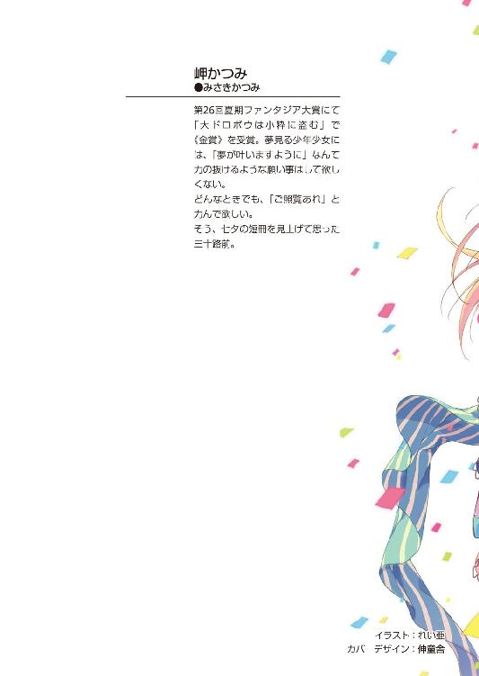
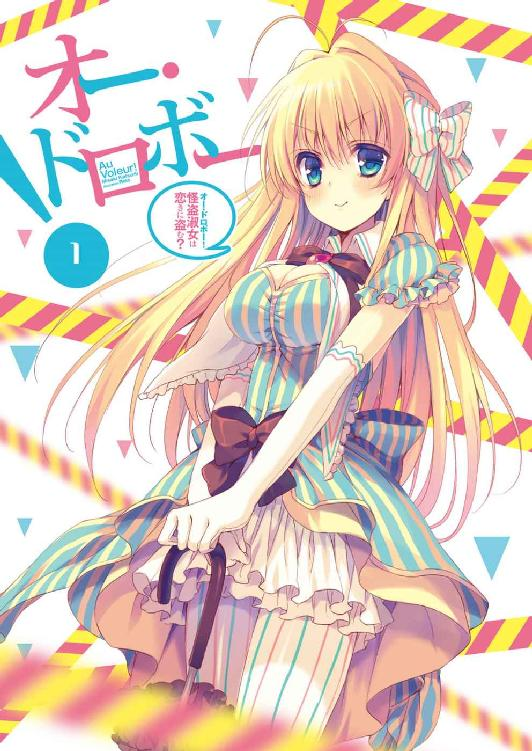
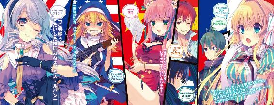
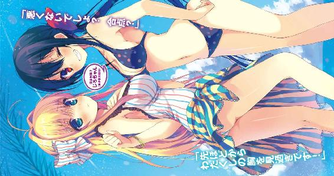
オー・ドロボー！
1．怪盗淑女は恋きに盗む？
岬かつみ

富士見ファンタジア文庫
本作品の全部または一部を無断で複製、転載、配信、送信したり、ホームページ上に転載することを禁止します。また、本作品の内容を無断で改変、改ざん等を行うことも禁止します。
本作品購入時にご承諾いただいた規約により、有償・無償にかかわらず本作品を第三者に譲渡することはできません。
本作品を示すサムネイルなどのイメージ画像は、再ダウンロード時に予告なく変更される場合があります。
本作品は縦書きでレイアウトされています。
また、ご覧になるリーディングシステムにより、表示の差が認められることがあります。
口絵・本文イラスト れい亜
序章
旅客機の窓から見える地中海の景色は、見事なほどに青一色だった。
飛行機は今、地中海の片隅に浮かぶリゾートアイランドを目指し、空と海の間をゆっくりと進んでいる。
「いやあ、絶景かな絶景かな」
窓の外の光景を眺め、日本人の少年が感慨深げに唸った。
故郷を遠く離れた異国へとやって来た少年は、一見して普通の学生だ。年の頃は十七で、白ブラウスと黒ズボンという服装が、平凡な見かけの印象に拍車をかけていた。閉じているのか開いているのか分からないほど細い目が、唯一の特徴だろう。
「アル。見えるかい？ あそこが僕らの目的地だ」
一方、はしゃぐ彼の隣の席で読書に耽っていた同年代の少女は、あまりにも非凡だった。
柔らかそうな長い金髪、大粒の宝石を思わせる碧眼、マーブルの彫刻のような白い肌、薄く色づいたバラ色の頰と唇と、まさに絵に描いたような美少女である。
身に纏った上品なドレスも合わさって、深窓の令嬢といった佇まいだ。
「ウイ、ムッシュ。でも、あまり大騒ぎしては他の利用客の皆さんに迷惑ですわよ」
少女はページに栞を挟んで本を閉じ、傍らの少年へと視線を移す。
「おっとすまない。何せ僕は日本を出るのが初めてなものでね」
「まあ！ ニッポンが鎖国されていたのは、もう随分と昔の話ではありませんでした？」
「日本は、アルの故国であるフランスと違って、地続きの外国を持たないからね。積極的に海外旅行をしない限り、僕の歳まで未経験でも珍しくはないんだ」
「確かに、外国のことを海外とおっしゃる時点で、わたくしたちとは少しばかり事情が異なりますわね」
少年の言葉に、アルと呼ばれた少女は品の良い微笑を見せた。
「変わり者の父上はよく海外に出かけていたけどね。だからこそ、アルのお父上とも知り合ったわけだ。だけど祖父も曾祖父も、そのまた昔のご先祖様たちも、ほとんど日本から出たことはないはずだ」
「フランスでは考えられませんわ」
「何せ、うちの家の初代が活躍したのは安土桃山時代。日本はその後の江戸時代に入ると、さっきアルが口にしていたように鎖国してしまうからね」
興奮を隠しきれないのだろう、少年は細い目をことさらに細め、饒舌になっていた。
しかし、その声が気に障ったらしい周囲の利用客が、物騒な目で二人を睨みつける。
物騒というのは、別に言い過ぎではない。この旅客機の中で、観光気分なのは少年と少女の座る二席だけなのだ。残りの席は全て、様々な国から集まった見るからに悪そうな連中が陣取っている。それも、飛行機の中でさえ拳銃を隠し持っていそうな連中ばかりだ。
アメリカのギャングにイタリアのマフィア、下手をすれば中東のテロリストさえいるだろう。それもそのはず、今この旅客機が向かっているのは、世界中の犯罪シンジケート御用達のリゾートアイランドなのだ。
別名、悪党の楽園。
世界中のどんな凶悪スポットよりも危険極まりない行先へと向かう旅客機に、完全に場違いな少年少女が乗っている。周囲の悪党たちは逆に気味悪がって警戒心を強め、二人に対して苛立ちを募らせているわけだ。
「いやいや皆さん、若干申し訳ない。快適な空の旅に水を差してしまったかな？ 僕らのことは気にしないで欲しい」
そんな最悪の空気もまるで気に留めず、少年は席を立ち、へらへらと笑いながら軽く会釈した。並み居る悪党たちを前に怯む様子もない。
「直に到着ですわ、席を立つと危ないですわよ、ムッシュご──」
そのとき、不意にアルがぽろりと少年の名をこぼしそうになった。
ところが、少年は彼女の口から不用意な発言が飛び出しそうな気配を察し、瞬時に手を動かしていた。すかさず指先を伸ばしてアルの口を塞いだのだ。
その速度たるや、常人の反応速度ではない。さらには、彼の不自然とも言える素早い動きは、周囲の利用客たちに気取られることもなかったようだ。
アルをじろりと見下ろした少年は、薄っすらと目を開けると、若干腹立たしそうに席に座り直した。
「アル。他の参加者たちの目がどこで光っているかも分からないんだから、お互いの名前は出さないようにときつく言っておいただろう」
「うい......申し訳ありませんわ。ごめんなさい」
少年の指先に口を塞がれたまま、アルが唇を動かす。途端、少年は急に顔を真っ赤にして、慌てて彼女の口元から手を離した。
「ムッシュ？ どうなさったんですの？」
「い、いいい、いや、なんでもない、なんでもないんだ。ただ、その、ちょっと予想以上に柔らかかっただけで......ああいや、今の発言は忘れて欲しい」
先ほど垣間見せた刃物のように鋭い雰囲気はどこへやら。少年は、不慣れな感触を指先に残したまま、しどろもどろで目を泳がせる。
「まあ、僕の名前は世界規模だと全然有名じゃないだろうけどね。所詮は日本ローカルの悪党でしかないってわけだ」
「そんなことありませんわ。わたくしは存じ上げておりますもの」
「うん、それが困りものなんだ。いいかい、アル。今夜から始まる例の大会は、世界各国から実力者たちが集まってくる。それも、名前がバレれば簡単に素性や生い立ちを調べられるような大物ばかりだろう。だからこそ、大会を有利に進めるためにも情報は一つでも多く隠しておきたいわけだ。分かるかい？」
少年はそう言って、平凡な面影からは信じられないほどに鋭い切れ長の瞳で、周囲を睥睨する。
「ウイ。分かりましたわ。つまりムッシュのお名前だけではなく、例えば、数えて十四代目であるといった情報なども、隠しておいたほうがいいんですのね」
しかし、アルはいともあっさりと口を滑らせていた。本人は大真面目に意気込んでいるのだが、今度は少年が彼女の口を塞ぐ暇もなかった。
「アル......」
「うい......」
早くも十四代目だとバラされた少年のため息に、アルはまたしても肩身が狭そうに縮こまってしまう。
「......本当に頼むよ。僕は是が非でも、自分の名を世の悪党たちの間で広めようと思っているんだからね」
少年は懐から黒い招待状を取り出し、目を細める。
「ムッシュ。つまりそれは、今夜から行われる世界大泥棒選手権であなた様が優勝すると、そう宣言しているわけですのね」
アルもまた、自信満々の少年へと頼もしげに目を向け、はにかむ。
世界大泥棒選手権。
それこそが、悪党の楽園で開催される催し物の正体だ。
各国から名高い大泥棒の子孫たちを集め、誰が一番か競わせる、正気を疑う世界大会である。だが、実は地球上の善良な人々の目に映らない隠れた場所で、今までも何度か開催されてきた事実がある。
とある有名な大泥棒の十四代目にあたる少年は、この大会に日本代表として招待され、こうして開催地である悪党の楽園行きの旅客機に乗っているわけだ。
「もちろんだとも。僕の父上は前大会で優勝を逃したからね。汚名返上するのは子の務めだ。世界一の大泥棒の座は僕が盗み取ってみせる」
二人の周囲にいる利用客の中にも、世界各国の代表が交じっている可能性は大いにある。十四代目はそんなライバルたちを挑発するかのような物言いを続けていた。
そんな中、アルがおずおずと口を開く。
「でも、普通に考えれば仕方ありませんわよね。わたくしだって、他の国のドロボウさんの名前までは詳しく存じませんもの」
悪党たちの中に交じっているのが信じられないくらいの、慈愛を秘めた天使の微笑を浮かべ、アルは自分の頰に手を当てた。
「フフフ、アルまで僕が傷つくことを言ってくれる。そんなに僕の名前が世界的にはマイナーと言いたいのかい？」
「そ、そういうつもりではありませんわ！ そういうつもりではありませんもの！」
拗ねる十四代目の姿に、アルは慌ててフォローに入る。
「わたくしは単に、どんなドロボウさんでも世界的に見ればたいして有名じゃないんですのよと、そう言いたかっただけなのです」
「......それをキミが言うのか」
「ウイ、ムッシュ。ほら、アルセーヌ・ルパンというわたくしの名前だって、きっと誰もご存じないに違いありませんわ！」
そうしてアルが口走った名前に、周囲の悪党たち全員が顔色を急変させた。
「え？ え？ え？」
四方八方から驚愕と混乱と敵意の目を向けられ、おまけにどこに隠し持っていたのか銃口まで向けられ、アルはおろおろと困り果てた様子で落ち着きを失う。
「......有名に決まっているだろう。アルセーヌ・ルパンといえば、世界一有名な大泥棒だ。それに、キミのお父上である先代ルパンは前大会の優勝者でもあるんだよ。どうして娘のキミが、なんの警戒もなくその名を口にしてしまうんだい？」
他の参加者から完全にマークされたアルを尻目に、十四代目は一人頭を抱えた。
「うい？」
一方、少女はあくまで事の成り行きが理解できずに、今も小首を傾げている。
アルセーヌ・ルパン。それこそが、世界大泥棒選手権にフランス代表として出場する、かの有名な怪盗紳士ルパンの末裔にあたる少女の名前であった。
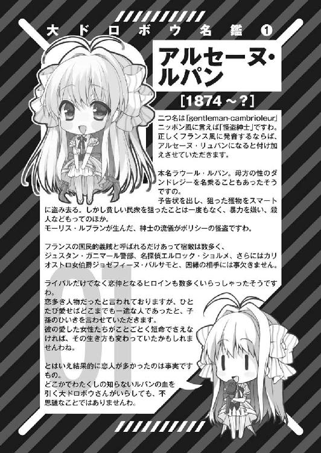
第一章 大ドロボウが多すぎる
１
事の始まりは、日本に住む十四代目のもとに送られてきた一通の黒い招待状と、見知らぬ異国の少女の来訪だった。
「ボンソワール。わたくし、アルセーヌ・ルパンと申します」
その少女は現れるや否や、白い手袋をした指先でドレスのスカートの端を摘まみ、十四代目の前で優雅に一礼してみせた。流暢な日本語は使い方も完璧だ。
軽く頭を垂れるとともに零れ落ちる金髪や、深く澄んだブルーの瞳、華奢な体つき、日本人の体型とはまるで違う腰の位置の高さや脚の長さ。日本での生活に慣れ親しんだ少年からすれば未知なる存在以外の何物でもない。
「こんな夜分に失礼いたします、ムッシュ」
たった一目で、十四代目の細い目は少女の美貌に釘づけにされてしまっていた。
「いや待て！ ちょっと待て！ まずい、これはまずい！」
しばらくして彼は我に返ると、慌てて状況を思い出す。
泥棒の末裔であることを隠し一般人を装って通っている高校から今しがた屋敷に帰宅し、ポストに届いていた何やら怪しげな招待状を家の中で開封しようとしたところで、チャイムが鳴った。何気なく玄関へ赴き、来客を出迎えたはず。
ところが、近所の知り合いか学校のクラスメイトか、はたまた宅配便か訪問販売かと思いきや、玄関に立っていたのはとびっきりの美少女だった。それも、ここ日本では普段お目にかかれない金髪碧眼の外国人だ。
おまけに少女が名乗った名前は、世界でも指折りの大泥棒の名である。よりにもよってアルセーヌ・ルパンなのである。
「何がまずいんですの？ お困りですの？」
「何がって？ それは言うまでもないことだ。ご先祖様である初代に始まり、子子孫孫、十三代目の父に至るまで、代々うちの家系は女に弱い！」
おっとりと小首を傾げる少女に対し、十四代目は早口でまくしたてながら詰め寄る。
そこで彼は、お互いの顔があまりに近いことに、今更ながら気付いた。少女は不思議そうに瞬きを繰り返しているが、対する十四代目の顔はすでに真っ赤だ。
彼は慌てて身を仰け反らせ、赤面する顔を少女から背けた。
「ムッシュー？」
「待て。近付くな。用件を聞こう。いや、それ以前に一つ確認しておきたいことがある。キミの名前をもう一度教えてくれないか」
「ですから、アルセーヌ・ルパンですわ」
少女は何の迷いもなく、形の良い唇を動かしてそう答えた。
アルセーヌ・ルパン。それは、およそ泥棒と呼ばれる稼業に手を染めた人間でなくとも、誰しもが一度は耳にしたことのある名前だ。
初代ルパンは、今より百年ほど昔にフランスで活躍した怪盗紳士である。
その二つ名の通り、泥棒でありながら手荒なやり方を嫌い、知略や変装を得意とし、警察や探偵の裏をかいて捜査の手から何度も逃げおおせた。
彼の手口は常に手品のようであり、貧しい民衆から盗みを働くことはしなかったので、当時のフランス国民からの人気も高かった。
また、いくつもの顔と名前を持ち、冒険家や探偵としても活躍した人物だ。
代々のルパンも初代同様に大泥棒として大成しており、その名は最早、泥棒業界ではある種の絶対的なステータスとさえ言っても過言ではないだろう。
「お決まりのシルクハットと夜会服にマント、さらに片眼鏡を着けていなければ、アルセーヌ・ルパンだとは分かりませんか？ あれは誤ったイメージ流布ですわ。初代ルパンがそういうキザったらしい格好をしていたことはありませんもの」
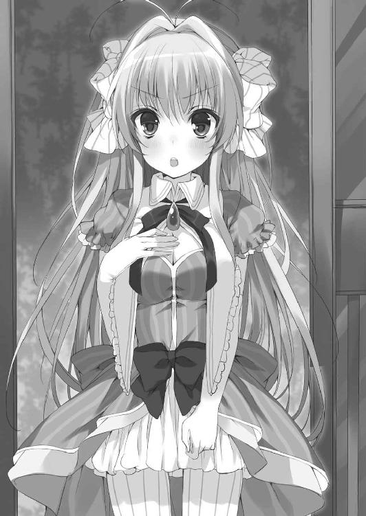
「いや......それ以前の問題じゃないかな。たとえキミが世間一般に知られているルパンの格好をしていようと、コスプレにしか見えない。そりゃまあ、初代ルパンのパートナーと言えば、かの有名な金髪婦人......くらいの連想は僕にも出来るけれどね」
少女の鮮やかな金髪に目を向けつつも、十四代目はいささか脱力した様子を見せていた。
「ムッシュ、連絡もなく突然押しかけたことはお詫び致しますわ。しかし、父とあなた様のお父上様は、知らぬ仲ではない間柄だと聞いております」
「キミは日本語が上手だね。つまるところ、父親の知人の娘を追い返すのは失礼だろうと、そう言いたいわけだ」
「ウイ。父は色々な国の言葉に堪能でしたので、勉強の機会が多かったのですわ」
可愛らしく小首を傾げ、アルセーヌはもう一度スカートの端を摘まんでみせる。
「大泥棒たる者、どこの国の言葉でも自在に使えて当たり前だからね。それがルパンとなればなおさらだ」
感心する十四代目だが、彼もまた主要な外国語の読み書きはマスターしている。やろうと思えば、アルセーヌともフランス語で会話できるくらいの語学力はあった。
「しかし、キミみたいな美少女が、あの怪盗紳士ルパンとはね」
何気なく呟いた十四代目は腕を組み、普段より余計に目を細めて少女を値踏みした。
「い、今なんとおっしゃいました？」
「え？ いや、キミみたいな美少女って......」
十四代目の台詞に、アルセーヌは顔を真っ赤にしてもじもじと俯いてしまう。
「イヤですわ、そういうお世辞をさりげなく口になさるのは......」
そんなアルセーヌの様子に十四代目は首を傾げたが、先ほどから屋敷の玄関で騒いでいることに今更気付き、露骨に顔色を変えた。
何せ一般人を装って暮らしているのに、ルパンだの泥棒だの、隣人に聞かせられる話ではない。それでなくても、異国の美少女とのツーショットを見られるだけで、あらぬ噂を立てられるのは間違いない。
「んー。とりあえず入りなよ。確かに、女の子を扱う態度じゃなかった」
仕方なく、十四代目は未だに照れているアルセーヌを促し、家に招き入れることにした。
「ありがとうございますわ！ ありがとうございますわ！」
途端、アルセーヌは天真爛漫に顔を輝かせ、何度も頭を下げた。素直なアルセーヌの反応に、十四代目は何とも不思議そうな顔で玄関を潜る。
彼の住む屋敷は、手頃な広さの庭やいくつかの蔵を有し、時代錯誤な忍者屋敷のような外観をしていた。二人は玄関の門を抜け、庭の石畳を進み、本宅へと向かう。
本宅の玄関口に差し掛かったところで、土足のまま家に上がろうとしていたアルセーヌの姿を見、十四代目の眉が吊り上がった。
「ええっ、何かいけませんでしたの？」
彼の微かな苛立ちを敏感に察したのか、アルセーヌはおろおろと困り果てた様子で身をすくませる。
「日本では、家の中では靴を脱ぐのが当然のマナーなんだ」
「そ、そうでしたわ。申し訳ありませんわ！」
十四代目に言われ、アルセーヌは必死な様子でぺこぺこと謝罪した。
そうして、急かされるように自分の靴を脱ごうと試みる。だが、慌てているせいで白いブーツの靴紐を解き間違い、おまけにバランスを崩してその場で躓いてしまう。
「きゃあ！」
「おっと。大丈夫かい？」
悲鳴とともに倒れ込む少女の華奢な体を、十四代目は瞬時に受け止めた。そして、彼女のどんくささについ失笑してしまう。
「お、お手を煩わせて申し訳ありません、ムッシュ」
再びアルセーヌは赤面してしまい、消え入るような声でそう呟いた。
「こ、こ、ここ、こちらこそ急に体を摑んでしまって済まない、アルセーヌ・ルパン」
だが十四代目もまた、異性と接近してしまったことで、緊張に全身を硬直させてしまっていた。そもそも彼は学校でも硬派を気取り、美少女相手でなくとも女子とのお付き合いはほとんど経験のない男なのだ。
「ムッシュ。いちいちアルセーヌ・ルパンでは、呼び名としては少々長くありません？」
「そ、そうだね。でも、ルパンと呼ぶには少し......そういうイメージとは縁遠いかな」
十四代目はアルセーヌから手を離し、一定の距離を保つことで落ち着きを取り戻す。
「それでしたら、アルで構いませんわ。だって、アルセーヌもルパンも、ドロボウさんのお名前でしょう？」
自分の名前をあまり気に入っていないのか、アルセーヌは苦笑いを浮かべてそう言った。
彼女の言葉に、十四代目は訝しげに首を傾げる。
「アル。遠慮なくこう呼ばせてもらうけど、ええっと、その、キミは自分の名前が嫌いなのかい？ そもそもキミも泥棒だろう？ アルセーヌ・ルパンなんだろう？」
「わたくし、父からはドロボウさんの技術について何も教えていただいておりません」
淑やかに微笑み、アルセーヌは十四代目の問いかけを否定した。一方、それを聞いた少年は、彼にしては非常に稀有なことだが、驚きに目を丸くする。
何せ彼自身は、先祖より代々伝わっている盗みのテクニックを幼い頃から徹底的に仕込まれてきたのだ。高校生にして一流の泥棒なのである。実際、現代日本のセキュリティを相手に、難なく標的を盗み出したこともあった。
ルパンの子孫が泥棒としては素人などと聞かされては、絶句するのも無理はない。
「父には感謝しています。いくらアルセーヌ・ルパンの子孫とはいえ、やっぱりドロボウさんは悪いことですから」
しかしアルセーヌは、自分が泥棒に関しては素人であることを誇るように胸を張った。ドレス姿からでも一目瞭然の豊かな胸元が、得意げにツンと突き出される。
「いや、まあ、余所の家の教育方針に口出しするつもりはないけれど......」
異性に対する免疫がまったくない十四代目は、すぐさま目を細め、アルセーヌの胸元をまじまじと直視しながら、気のない返事を返した。
「そうかー、あのアルセーヌ・ルパンも当代で廃業かー、いやー勿体ない。絶景かな絶景かな」
「ムッシュ？ どちらを見ていらっしゃるんですの？」
アルセーヌの言葉に、十四代目は正気を取り戻す。彼は何事もなかった顔つきで平静を装い、そのまま壁に向けて自ら頭突きした。これにはアルセーヌもびっくりしてしまう。
「......修行が足りないな」
打ち付けた頭を振りつつ、十四代目はアルセーヌと再び距離を置く。女性に惑わされやすい歴代の弱点は克服できそうにないなと、彼はため息をこぼした。
「おでこ大丈夫ですの？」
「ああうん、大丈夫。それより、この屋敷はいわゆる忍者屋敷でね。廊下を移動する際は、ぴったり僕の後ろを付いてくるように。でないと、罠に巻き込まれてしまうからね」
「承知しておりますわ。わたくしだって、また酷い目にあうのは嫌ですもの」
「......また？」
アルセーヌの返答に十四代目は首を傾げたが、その疑問は、彼女が背後にぴったりと張り付いてきたことですぐさま頭の中から消し飛んだ。
何せ、アルセーヌの見事な胸の膨らみの先端が、彼の背中に軽く押し当てられたのだ。密着しているわけでもないのに微かに触れるほどの大きさに、十四代目は戦慄する。
「ぴったりは言い過ぎた！ 半歩でいい、もう半歩下がってくれ！」
「うい？ ムッシュがご自分で近寄れとおっしゃったのでしょう？」
普段は決して屋敷の廊下のうぐいす張りを鳴らすことのない十四代目だが、このときばかりは背後のアルセーヌとともに盛大に合奏してしまうこととなった。
そうして辿り着いた畳敷きの来客用応接間で、アルセーヌは与えられた席に腰を落ち着けると、ポシェットから一通の黒い招待状を取り出す。
「ではムッシュ、本題に入ってもよろしいですの？ 実は、わたくしがあなた様のところに押しかけた理由は、この手紙にあるのです」
「ああ、それ僕の家にも今日届いていたな。中はまだ見ていないけど」
言って、十四代目も自らの招待状を懐から取り出した。
アルセーヌに促され、十四代目は招待状の封を切る。その中身に目を通し、彼は驚きの面持ちを浮かべた。
「世界大泥棒選手権？」
「ウイ。近く開催される催しで、今まで数回行われたことがありますわ。世界中から名のあるドロボウさんたちの子孫を集めて、誰が一番か競わせるそうです」
「聞いたことがある。以前、僕の父上である十三代目もこの大会に日本代表として出場していたってね。しかし、優勝したのは当時のフランス代表だった先代ルパンだ。言ってみれば、この大会こそが先代たちの因縁の始まりなんだろう」
「二人は敵味方に分かれて争ったり、かと思えば一緒に手を組んだりする、不思議な間柄だったと、そう父から聞かされたことがありますわ。そして当代のルパンであるわたくしも、この度の大会でフランス代表として出場を求められたわけですの」
「え？ アルは泥棒じゃないんだよね？」
この問いかけに頷いたアルセーヌは、見るからに意気消沈した様子で落ち込んでいた。
「何度もお断りしたんですの。しかし、前回優勝者であるルパンが不参加では主催の方々も納得できないらしく、強硬手段に出られてしまいましたの」
「強硬手段？」
「我が家には、初代ルパンの代から伝わる数々の家宝があります。もちろんあまり言いたくないことではありますけれど、代々のルパンが集めたコレクションですわ。そのうちの一つ、カリオストロ伯爵の黄金の懐中時計を、何者かに盗まれてしまったんですの」
アルセーヌの言葉に、十四代目は啞然とする。
「女盗賊カウンテス・カリオストロが父親から受け継いだという、黄金で作られた精巧な機械式時計で、白金製の時計盤には大粒のイエローダイヤモンドがあしらわれているあの有名な......盗まれたって、ルパンの屋敷が泥棒に入られたってことなのかい！」
「うい......」
「しかし、それはちょっとびっくりだね。ルパンの面目丸潰れだし、それ以前に盗みに入った奴の腕前が凄い。そいつが大会主催者だとすれば、どんな大物なんだか」
「運悪く父は何やら厄介な事件に巻き込まれているらしく、長く音信不通で消息も不明なんですの。まあ、家を空けがちな方なので、別段珍しいことではないのですが」
「うん。その点に関しては僕の父上も似たような感じだ」
「まさかルパンが警察に盗難届を出すわけにもいきませんでしょう？ そもそも元が盗品なのですから、訴えも出せません。盗人猛々しいとはまさにこのことです」
アルセーヌは心底困り果てた様子でため息をこぼした。
「黄金の懐中時計を取り返したいのなら大会に出場して優勝しろと、脅迫の手紙が届きましたの。どうにかして取り戻さないと、アルセーヌ・ルパンの名前に傷をつけることになってしまいます。わたくしドロボウさんはあまり好きではありませんけれど、偉大な冒険家でもあった曾祖父のことは尊敬しておりますので」
「それで、アルみたいなまったくの素人のお嬢様が大会に出場する羽目になったわけだ。しかも、あろうことか優勝を狙ってだなんてね」
「ウイ。何者かは存じませんけれど、盗まれた時計を取り戻すには優勝しなければなりません。でも、わたくし如きが大会で優勝できるはずもありませんもの」
腕を組んで話を聞いていた十四代目が、同情の眼差しをアルセーヌへと向ける。
彼も自分の名に誇りを持っているし、たとえ泥棒稼業に手を染めていなかったとしても、先祖の顔に泥を塗る真似は出来るはずもない。少女の気持ちは分からないでもなかった。
「キミが僕を訪ねてきた理由もそれで分かったよ。つまり手を組みたいわけだ。なるほど、確かに僕らは先代同士が付き合いのあった間柄だし、おかしな話じゃない」
「ウイ、ムッシュ。あなた様のことやこの家の住所は、父から聞かされておりましたの。怪盗紳士ルパンはわたくしの代で引退したも同然。となると、頼れるお相手も数が限られますもの。わたくし、優勝の栄誉には興味がありません。代々のルパンが愛してきた懐中時計さえ取り戻せれば、それで満足なのです。ですから、あなた様に優勝していただき、わたくしのために時計を取り戻していただきたいのですわ」
切実に訴えるアルセーヌは、膝をついて十四代目を見上げた。そのすがるような上目遣いを前に、少年は快諾しそうになるのを堪え、敢えて意地悪く尋ねる。
「しかし、キミの手を借りなくても元より僕は自力で優勝するつもりだ。泥棒のスキルも持たず、言ってしまえば完全にお荷物でしかないアルと組むメリットはあるのかい？」
たじろぐかに見えたアルセーヌだが、十四代目の物言いを予想していたとばかりに、不敵な笑みを浮かべる。
「メリットはあります。かつて悪党の楽園で前大会が行われた際、先代ルパンが戦いを有利に進めるために事前に用意しておいた、隠れ家と隠し通路、その一切をあなた様に献上致しますわ。もちろん、旅費や現地での必要経費も全てわたくしが持ちます」
「ほう」
「それにもう一つ。自分で言うのもなんですけれど、わたくしこう見えて、お料理は得意中の得意です。大会中の栄養管理に関しては、万全の用意をお約束出来ますわ。そのためには、わたくしの同行を認めていただかなければいけなくなりますけれど」
「え？ 料理？」
予想外の女の子らしい申し出だったが、アルセーヌにそう言われ、空腹を思い出したかのように十四代目の腹が鳴った。
「それならキミの腕を見せてもらおうか。冷蔵庫の余り物で何か作ってみてくれ」
お嬢様にどれほどのものが作れるのか、物見遊山気分で十四代目はそう申し出た。
しばらくして、キュートなエプロンを身に纏ったアルセーヌの手料理が食卓テーブルに並べられ、今まで本格フレンチなど食べる機会もなかった十四代目は、細い目を僅かに瞬かせ、思わず身構えてしまう。
「あの残り物でどうやってこんな立派なディナーを！」
「ではムッシュ。どうぞ召し上がってくださいまし」
そもそも、父も母も音信不通で一人暮らしが長い十四代目にとって、誰かが手間暇かけて作ってくれた手料理はあまりに久しぶりのものであった。おまけにそれが美少女の手料理とくれば、人生初めての体験だ。
「手を組もう、キミは天使だ。どれも信じられないくらいに美味しいし、特に、揚げ物が出て来ないのがいい。我が家としては、揚げ物だけは絶対にいただけないからね」
順々に運ばれてくる料理の数々に、彼の胃袋はアルセーヌに掌握されてしまった。料理の腕を誉められて嬉しげな少女の姿を、十四代目はデレデレとした様子で見つめる。
「......修行が足らないな」
口ではそう言いつつも、十四代目は嬉しそうに料理を平らげ、舌鼓を打つ。日本代表の大泥棒とフランス代表の怪盗紳士ルパンが密かに手を組んだ瞬間であった。
だが、アルセーヌの料理の腕は完璧でも、泥棒としての腕はからっきしだという。パートナーとなる以上、どの程度のことまでなら彼女でもこなせるのか知っておくのは、十四代目にとっても必要不可欠だった。
食後、彼はアルセーヌを屋敷の蔵へと案内することにした。そこには、泥棒稼業十四代にわたる数々のコレクションが眠っているのだ。
「ムッシュ。これは何でしょう？」
「ちょっとしたテストだよ。うちの先祖は代々錠前のコレクターでね」
十四代目がアルセーヌの前に並べたのは無数の錠前であった。形も素材も、そしてもちろん仕掛けも、種々様々だ。そしてそのどれもが、一流の泥棒でさえ開錠に時間のかかる一級品ばかりであった。
「中には、アルのお父上である先代ルパンでさえ鍵を開けられなかった物も一つ交じっている。これは僕の父上の自慢でね。前大会で優勝を搔っ攫ったルパンに吠え面をかかせた一品として、家宝にしてやるとまで言っていた。時は戦国時代、伊賀忍者頭領の百地丹波が記した伊賀流忍術の秘伝書を封じていた、唯一無二のからくり錠前さ」
小首を傾げて錠前を手に取っているアルセーヌへと、得意げに目を細めた十四代目は優越感に浸った物言いをした。
「で、何をテストなさるんですの？」
「このコレクション、何個まで開けられるか試してもらおう」
「ウイ、ムッシュ。では鍵を貸してくださいまし」
「なんだって？」
「なんですの？」
顔を見合わせる十四代目とアルセーヌ。鍵を所望したアルセーヌの顔は大真面目だった。
「......いや、鍵を使わずにどれだけ開けられるか試すテストなんだけど」
「わたくしを馬鹿にしていらっしゃるんですの？ 鍵もなしにこんなものを開けられるはずがありませんわ」
「鍵があれば誰だって全部開けられるだろうが！」
十四代目に怒鳴られ、アルセーヌは涙目になりながら錠前の山に向き直った。
「こんなもの解けませんわ！ こんなもの解けませんわ！」
知恵の輪に悪戦苦闘するお子様じみたアルセーヌの後姿を、十四代目はため息とともに見つめる。
「ワザとやっているようには見えないし、どうやら本当に素人なんだな......まさか鍵開けの一つも出来ないとは」
「うい......」
「それでも頑張ってみようか。なあに、腕はなくても才能はあるかもしれない。何か一つくらい鍵開けできるかもね」
「ひどいですわ！ ひどいですわ！」
今にも泣きそうな顔ではあったが、アルセーヌは言われた通り錠前へと挑み続ける。
十四代目が世界大泥棒選手権に向けて荷造りしたり、得物や仕事道具の手入れをしたり、学校への休学届を用意したり、知り合いに連絡を取ったりしている間にも、彼女は挑戦を諦めなかった。
「やった！ やりましたわ！」
目の下にクマを作ったアルセーヌが狂喜乱舞したのは、テストを始めて三時間が過ぎた頃だった。
「どうです？ わたくし、一つ成功しましたわ！」
「ああうん、おめでとう。白状すると、一つも成功しないだろうと思っていたよ」
錠前を手にしたまま上機嫌にぴょんぴょんと跳ねるアルセーヌを尻目に、十四代目はあくびを嚙み殺した。テストを出題した側が完全に飽きてしまっている様子だ。
鍵を一つ開けるのに三時間もかかってしまうなど、泥棒として悠長にも程がある。開けられないのならすぐに諦めるのが盗人の鉄則だ。
「ねえムッシュ、わたくしの初めてのドロボウさん成功の記念に、この錠前さんを頂いても構いません？」
「え？」
「だめですの？」
「いいよいいよ、どうせ一番簡単なヤツだろうし」
しょんぼりと肩を落とすアルセーヌを前に、十四代目はつい甘い顔をしてしまう。ろくに確認することなく、安請け合いした。
「じゃ、次のテストは変装術だ。手本を見せてあげるから、少し待っていてくれ」
十四代目は席を立ち、そのまま蔵の中の部屋から出て行ってしまった。
「ウイ。お待ちしておりますわ」
アルセーヌは素直に返事をした後、先ほど自分が開錠に成功した錠前を、まるでお気に入りのぬいぐるみを相手にしているかのように、撫でたりいじったりして時間を潰した。
しばらくして、十四代目が戻ってくる。
「お帰りなさい、ムッ......シュー？」
その姿を目にしたアルセーヌの驚きようは、手にしていた錠前を取り落としてしまうほどだった。
現れたのは、まさしく鏡映しのようなアルセーヌであった。
「まあ、簡単に済ませてこんなところだけど」
もう一人のアルセーヌが口を開く。聞こえてきたのは紛れもなく十四代目の声だが、顔はアルセーヌと瓜二つの可憐な美貌を備えているのだから、違和感が凄まじい。
「ど、どういうことですの！ どういうことですの！」
大きく狼狽えたアルセーヌが、もう一人のアルセーヌへと詰め寄った。
十四代目も肌の色までは短時間で変えられなかったようだが、目はパッチリ開いてカラーコンタクト、金髪のウィッグやドレスを始めとした着用品はもちろん、面立ちや姿形、さらには些細な仕草まで完璧にアルセーヌを真似ている。
「これが変装だよ。アルのご先祖である初代ルパンが得意とした技術さ」
「いくらなんでもそっくりですわ！ わたくし、一瞬自分に双子の姉妹がいたのかと思いましたもの！」
そんな十四代目の変装姿を頭のてっぺんから爪先までじろじろと眺めるアルセーヌ。ふと彼女の視線が、彼の胸元で止まった。
アルセーヌはおもむろに手を伸ばし、自分に変装した十四代目の胸の詰め物をむんずと摑む。
「どうしてサイズまで完璧なんですの！」
「いや、その、さっきガン見していたから......」
顔を真っ赤にしたアルセーヌに怒られ、得意げに変装を披露していた十四代目は苦笑いを浮かべる。ついつい、変装していることも忘れて目を細めてしまっていた。
「まあそれはともかく、次はアルの番だよ。奥に衣装室があって、変装道具が一通り並んでいる。何でも好きなものを使っていいから、今度は僕に化けてみるんだ」
「そ、そんなことわたくしに出来るんですの......？」
「初代ルパンは高度な変装技術がなかった時代でさえ、自由自在に他人の姿を盗み取った。子孫のアルにも高い変装術が備わっていれば、間違いなく大会本番でも展開を有利に進められるはずだからね」
「わ、分かりましたわ。わたくし頑張りますから！」
意を決した面持ちで、アルセーヌは衣装室へと足を運ぶ。
程なくして帰ってきたのは、ただの男装の美少女だった。
「見かけはともかく、仕草くらい真似できなくて何が変装だ！ 男は歩幅を狭めて上品に歩いたりはしない！ その程度の観察も出来ずに何がアルセーヌ・ルパンだーっ！」
「ひーん、ごめんなさいですわ！ ごめんなさいですわ！」
どんな役者よりも名優であると謳われた初代ルパンの血を引くとは思えない少女の才能の無さに、思わず十四代目もキレた。まさか服を着替えただけの素で現れるとは予想もしていなかったらしい。
この後も初歩的なテストを何題かアルセーヌに課した十四代目だったが、結果は惨憺たるものだった。
こうして十四代目は、何とも頼りにならない少女をパートナーに、近く開催される世界大泥棒選手権に出場することと相成ったのである。
２
自分の名前をバラすという旅客機でのアルセーヌの軽率な言動に、十四代目が頭を痛めはしたものの、二人は無事に悪党の楽園へと降り立つことが出来た。
「こっちは日本よりかなり暑いんだな。まるで夏じゃないか」
空港を後にした十四代目は額の汗を拭いながら、初めて訪れる外国の景色を一望する。
リゾート化されているとはいえ島の規模はそこまで大きいものではないので、空港は街のすぐそばに造られていた。海側にはリゾートビーチが広がっており、それを望む背の高いホテルがいくつも並び立っている。
道行く異国の人々や空の色はもちろん、照り付ける太陽や空気に至るまで、日本とはまるで別物であるかのように十四代目には感じられた。
「ムッシュったら、あまりきょろきょろしていると、おのぼりさん丸出しですわよ」
「すまない、アル。じゃあそこらで時間を潰してから大会の会場へと向かおうか」
「え？ まずは隠れ家に行って荷物を下ろしませんか？ 開会セレモニーにはもう少し時間がありましてよ」
不思議そうに首を捻るアルセーヌへと、十四代目はあくまで目を細めてニッコリと微笑を浮かべたまま、ゆっくりと向き直る。
「アルは気付いていないかもしれないが、すでに何人か尾行が付いているんだ。どうしてこんな状況で隠れ家に行けるのかな？ そして尾行が付いてしまった理由も分かっているだろう？ さる有名な怪盗が惜しげもなく自分の正体をバラしたからだ」
「うい......」
「言っておくけれど、次また同じようなミスをしたり、あるいは僕の名前なんかを口にしたりしたら、そのときはキミとの同盟関係はなかったことにさせてもらうからね。僕としては、キミを裏切ってでもこの大会で優勝するつもりでいるわけだからね」
「重ね重ね申し訳ありません......以後気を付けますわ。お口に封をしますわ」
「キミのためにもよろしく頼むよ。何せうちの初代は、足手まといになった恋人を自分の手で始末したほどの、冷酷非情な泥棒だからね」
目に見えて震え上がるアルセーヌの姿を見、十四代目は嫌味や脅しが過ぎたかなと若干反省した。
その後二人は尾行を連れたまま繁華街へと向かい、シチリアのマフィアが経営する本格イタリアンレストランで昼食をとることにした。
利用客は旅行者や現地の住人など様々だったが、やはり物騒な連中ばかりだ。のんきに昼食のオーダーをしていたのはアルセーヌ一人で、周囲はワイン片手に非合法な薬の密売や銃器の取引など危険極まる密談を続けている。
ついつい泥棒の癖で聞き耳を立てていた十四代目は、そのあまりの内容に、ろくに食欲も湧かなかった。前菜の次に運ばれてきたパスタを皿に残してしまっている有様だ。
「まあ！ イタリアのドルチェもなかなかのものですわね」
一方のアルセーヌは、自分が犯罪者の巣窟にいることも忘れた様子で、前菜もパスタもメインディッシュも全て食べ終え、今は食後のデザートをご満悦の表情で頰張っている。細身で華奢な体格の割に、アルセーヌはなかなかどうして健啖家のようだ。
「どうかなされたのですか、ムッシュ。とっても美味しいですのに」
「ああうん、順調に尾行の数が増えているのを確認していたんだ」
「順調に......？」
次に二人は、各国のギャングたちが利権を争うショッピングモールへと足を運んだ。
見た目だけで言えば普通のショッピングモールと何も変わらない。そして、店内で販売されている商品もまた、一見してありきたりの物ばかりだ。
「ムッシュムッシュ、見てください、可愛いぬいぐるみさんたちですわ！」
「犯罪者御用達のショッピングモールに、ファンシーショップ？」
所狭しと並べられた愛らしいぬいぐるみに大はしゃぎのアルセーヌだったが、十四代目の表情は暗い。
他の利用客たちは、誰もがいかつい凶悪犯じみた風貌の男たちばかりだ。バッチリとスーツで決め、サングラスを着用している。危険な臭いを放つ彼らが、まさかぬいぐるみがないと眠れないとでも言うのだろうか。
十四代目はトンプソンと名札の付いた、両手で抱えられるくらいの大きなブタのぬいぐるみを手に取る。
「お、重い......」
ぬいぐるみにはあるまじき重量感に、その顔が引きつった。
「それに、触り心地が最悪だ。ごつごつしているじゃないか」
ぬいぐるみの中身を察したのだろう、十四代目は苦笑いを浮かべるしか出来なかった。
「まあムッシュ。とっても可愛いブタさんですわー。お名前はトンプソンちゃんと言うんですのね。その子をお買い上げなさいますの？」
トンプソンを抱えた十四代目に他の客の鋭い視線が集中する中、アルセーヌが何も知らずに近付いてきた。
彼女は無邪気に値札を確認して、そして仰天した。
「お高いですわ！ トンプソンちゃんお高いですわ！」
ぬいぐるみの値段とは思えない金額にアルセーヌが悲鳴を上げる中、十四代目はトンプソンを恐る恐る棚へと戻す。
手頃なぬいぐるみを油断なく構えていた他の利用客たちも、十四代目の反応を見て安堵のため息をこぼし、各自ぬいぐるみを手放す。緊張感に包まれていた店内が仮初の平和を取り戻した。
棚を見てみれば、英語を始めとした数カ国の言葉で、店内で商品に触れるべからずと警告の文が記されている。
「こんなぼったくりなお店で買うことはありませんわ。さあ、次のお店に行きましょう」
「......いや。適正価格だと思うよ、うん」
アルセーヌに腕を引っ張られ、十四代目は慌ただしく店内を後にした。その際、尾行の人数を確認したところ、数はさらに増えていた。
尾行者たちは、大会の参加者である名立たる泥棒の子孫や、あるいは彼らが雇ったその道のプロばかりのようだ。存在を気取られようとも、顔だけは完璧に隠し通している。
「さすがの腕前だな。どこぞのアルセーヌ・ルパンとはえらい違いだ」
「ムッシュ？ 何かおっしゃいまして？」
フラワーショップに入ろうとしていたアルセーヌが、不思議そうな顔で十四代目へと振り返る。
もちろん悪党の楽園にあるフラワーショップが、ただの花屋であるはずがない。並べられた鉢は全てご禁制の品だ。どこの国でも非合法の、ハッピーな気分になる、ないしょのお薬の原料であった。
「アル。その店もよそう」
「ええっ、どうしてですの？ あそこのお花はとっても可愛らしくて、隠れ家の花瓶に飾ってあげたくなりますのに」
「値段値段」
十四代目が指差した値札へとアルセーヌが目を向けたところ、またも彼女は飛び上がって驚く羽目になった。先ほどのぬいぐるみの数倍の値が付いていたのだ。
「もう、この島のお店はどこもけしからんですわ！」
その後も散々ショッピングモールの中を練り歩いたが、どこもかしこもヤバイ品を扱う危険な店ばかりで、その正体に最後まで気付かなかったアルセーヌはあまりの高額さに憤慨してしまった。
頰を膨らませたアルセーヌに続き、十四代目も疲れ切った顔でショッピングモールを後にする。無論、今も尾行者たちを引き連れたままだ。
「アル。ちょっと飲み物でも買って、どこか見晴らしのいいところで休憩しよう」
十四代目とアルセーヌは近くの普通の露店でシチリア産の赤いオレンジジュースを二つ購入すると、街の中央に位置する広場へと移動した。
広場は大きく円形にスペースを取っており、屋外で旅行者たちが気ままに利用できるよう、それなりの数の椅子やテーブルが並べられていた。
二人はそのうちの一つに腰を下ろし、テーブルを挟んで向かい合う。それに伴い、周囲の席もちらほらと埋まっていく。尾行者たちがそれとなく腰を下ろしているのだ。
「アル。なるべく自然に、これから僕の台詞に話を合わせて欲しい」
「どういうことですの？」
周囲の状況などまるで知らず、美味しそうにジュースのストローに口をつけていたアルセーヌが、戸惑いの表情を浮かべた。
「だから、そういう顔をしないで。今まで通りの態度のまま、僕らが会話をしているように演出して欲しいんだ。そうだね、周囲にはカップルか何かにでも見えるように」
「か、かかか、カップルですの？」
頰を赤らめて上ずった声を上げるアルセーヌを尻目に、十四代目は自然な仕草でテーブルの上に肘をつく。
その際、服の袖に取り付けておいた小型マイクを口元に近づけ、指に隠し持っていたイヤホンを自分の片耳に押し込んだ。そうして、混乱するアルセーヌに小さく目配せをし、十四代目はマイクに向けて語り始める。
「もしもし、首尾はどうだい？」
「きょ、きょ、今日はとってもいいお天気ですわね！」
何やらどこかと連絡を取り始めた十四代目へと、アルセーヌは上ずった声のまま相槌を打って会話を演じる。
「こちらで視認しただけでも二十はいる。そちらからはどう見える？」
「と、とっ、とと、とっても素敵な、で、でで、デート日和だと思いますわ！」
「そんなに。どうやら尾行に関しては僕より上手な参加者もいるらしい」
「そ、そんなに？ わたくしたち、そんなにカップルに見えますの？」
「手に入れた顔写真は後で受け取る。報酬は千両箱一つと言っていたが、働きによっては上乗せも考えよう。じゃ、今後もよろしく頼む」
「う、うい。こ、こちらこそ今後ともよろしくお願い致します......」
十四代目が連絡を終えた頃には、アルセーヌはジュースを飲み干し、顔を真っ赤にして肩を縮こまらせていた。
「ん？ どうしたんだい、アル？」
「ふ、不束者で、ご迷惑をかけてしまうかと思いますが......」
「ああうん、ありがとう。会話のフリはもういいよ」
「え？ あ、そ、そうでしたわね。フリでしたわね」
もじもじとしていたアルセーヌは、消え入りそうな声で返事をした。連絡に集中していた十四代目はどうして彼女が赤面しているのか理解が及ばない。
「アル、熱でもあるのかい？」
「大丈夫ですわ！ 大丈夫ですもの！」
「ふうん、まあ、問題ないならいいんだけど」
「......と、ところで、どなたとお話しなさっていたんですの？」
声を潜めてアルセーヌが十四代目に尋ねた。
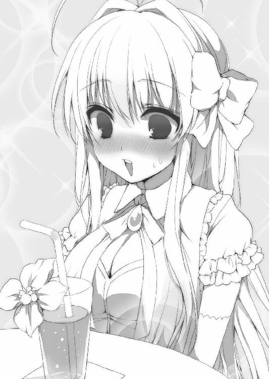
「いや、この大会のルールには目を通したけれど、他の参加者に危害を加えない限り、使えるものは何でも使っていいってルールだったからさ」
十四代目はマイクとイヤホンを隠し、自分のジュースを口に含んだ。
「凄腕の協力者を雇っておいたんだ」
「協力者ですの？」
「本来、どんな怪盗も一人きりで盗みを成功させるのはなかなかに難しい。それが難度の高い仕事なら尚更さ。初代ルパンにだって、子分がかなりいたと聞く」
そう言って、十四代目はコップの中の氷を一つ頰張り、不敵に微笑む。
「鼠小僧次郎吉。それが僕らのもう一人の仲間の名前さ。僕の家が代々日本の関西を縄張りにしてきたのに対し、向こうは関東を根城にしている。日本代表に選ばれなかったことを根に持って、快く引き受けてはくれなかったんだけどね。結構な額の報酬を用意して、何とか助っ人になってもらったのさ」
十四代目が口にしたのは、江戸時代の有名な大泥棒の名だ。初代鼠小僧は、裕福な商人や大名の家に忍び込んでは多額の金銭を盗み取ったという、凄腕の盗人である。
彼の呟きとともに、街の喧騒に交じって誰かのくしゃみがアルセーヌにも聞こえた。
「そんな方とお知り合いだったんですの？」
「日本は狭いし、有名な泥棒も少ないからね。現代は警察のほうが泥棒なんかより遥かに優れているし、ま、持ちつ持たれつって関係がここ何代か続いている。幼馴染みたいなものだよ」
旅客機での一件でアルセーヌの存在は知れ渡り、目立ってしまった。
十四代目はそれを逆手に取り、あえて彼女を人通りの多い場所へ連れ回し、囮にしたわけである。機上で隣席だった十四代目の姿も常に隣にあり、尾行者も自分たちを監視している第三者にまでは気が回らなかったようだ。
もっとも、参加者全員がこの囮に引っ掛かったわけではない。警戒し、敢えてアルセーヌを無視した泥棒たちも数多くいた。
「そういえば、先日ニッポンでわたくしが鍵開けに挑戦していた時、ムッシュがどなたかと連絡を取っていらっしゃった覚えがありますわ」
「正解。本当なら鼠小僧以外の、普段から付き合いのある子分たちに情報収集を任せたかったところだけど、こんな悪党のリゾート地に東洋人がぞろぞろといるのも不自然だからね。お金はかかるけれど、少数精鋭で行くべきと思ったのさ」
「なるほど......ムッシュは賢い方なのですね」
感心するアルセーヌの顔を、十四代目はため息交じりに見つめる。
「アルも本当なら一味を連れて来るべきだったんだよ。これほどの大会に単身挑もうとしている泥棒はさすがにキミだけだろう」
「あら。わたくし、一人ではありませんわ」
そう言って、アルセーヌは十四代目へと微笑みかける。
「だって、頼もしいパートナーがいてくれますもの」
その笑顔と言葉に、十四代目は耳まで真っ赤にして、つい顔を背けてしまった。
「い、言っておくけれど、僕は必要となったらキミを捨て駒にすることもありうるんだぞ。あくまで僕の狙いは優勝のみ。泥棒なんて所詮は悪党だし、信用し過ぎるものじゃない」
瞬間、耳から離していたイヤホンから、ノック音が二度、微かに漏れた。鼠小僧側からの連絡の合図である。普通なら音など聞こえるはずもないが、泥棒として鍛えられた十四代目の聴力をもってすれば反応も可能だった。
極小の音量を聞き分け、彼はすぐさま自然にイヤホンを再び耳に装着する。
『デレデレするな、バーカ』
イヤホンを通して聞こえてきたのは、少女のぶっきらぼうな声だった。当代の鼠小僧次郎吉の名を継承した幼馴染からの一言に、十四代目は痛恨の表情を浮かべる。
「修行が足らない......」
「ところでムッシュ。その鼠小僧さんは男性ですの？」
「え？ もちろん初代鼠小僧次郎吉は男だったけれど、当代の鼠小僧は女の子だよ」
「......先ほど幼馴染とお伺いしましたけれど」
「うん。一度も男の幼馴染とは言っていない」
途端、終始上機嫌だったアルセーヌは何故か突然頰を膨らませ、席を立ってしまった。
「ちょ、アル、どうしたんだよ！」
「わたくし、小僧と言うからてっきり男性の方かと思っておりました！」
「だから、それでどうしてキミが怒るのさ！」
「女は、殿方の隠し事に別の女が関わると不機嫌になるものなのです！」
十四代目も席を立ち、彼女の背を慌てて追う。
『やーいやーい、バーカバーカ』
再びイヤホンから次郎吉の声が彼の耳に届いた。
「どういうことかまるで理解が及ばない！ やっぱり修行か！ 何かしらの修行が足りないっていうのか！」
泥棒としては優秀な十四代目も、女心を学ぶ修行は未経験なのだから、男女の機微に関しては年相応の少年でしかなく、困り果てるのも無理はなかった。
３
その夜、十四代目とアルセーヌは世界大泥棒選手権の開会セレモニーに参加すべく、会場となる街の巨大ドームへと足を運んだ。
もっとも、ドームでは目下サーカスが行われている。アンダーグラウンドな住人たちの祭が開催されるのは、その地下だ。参加者だけが立ち入ることを許されたエレベーターを使い、二人はセレモニー会場へと降り立つ。
そこには、古今東西の泥棒の子孫たちが勢揃いしていた。ざっと八十人はいるだろう、誰も彼もが正体を隠すために仮面をつけている。出で立ちも周囲に軽んじられないよう正装しており、まさに仮面舞踏会といった様相だ。
もちろん十四代目とアルセーヌもまた、それぞれタキシードとドレス姿で、お互い顔を隠す仮面をつけていた。十四代目は純和風の狐のお面で、アルセーヌは黄金色のアイマスクだ。
「まさしく、世に盗人の種は尽きまじ」
「どうかなされたんですの、ムッシュ？ それに今のお言葉は？」
「いやね、今のは我が先祖の辞世の句の一部さ。世の中から泥棒がいなくなることはないって意味だよ。この会場にいると、何だか初代の言葉に実感が湧くなあ、と思ってさ」
十四代目は、自分やアルセーヌを含めた各国を代表する大泥棒の末裔たちが賑々しく集まっている会場の景色を眺め、仮面の奥で感慨深げに目を細めていた。
名高い泥棒たちが何代にもわたって繁栄を続けている証明とも言える景色に、彼はある種の感動を覚えている様子だった。
「もしここに警察官がいて、僕ら全員を捕まえられたとしたら、その警官がどんなノンキャリアでもインターポールの最高幹部か各国の警視総監クラスに出世できるだろうね」
「ウイ。何せ伝説級の泥棒たちの子孫がこうして一堂に会しているのですから」
配られたパーティグラスを片手に、十四代目とアルセーヌが冗談交じりに呟き合う。
とはいえ、この島に警察官が捜査で立ち入ることは不可能だろう。世界中の悪党が結束し、妨害しているのだ。普段は利権争いに明け暮れる彼らも、悪党の楽園が脅かされることになれば、一致団結して外敵を排除する。
「それにしても、おかしな扮装をされている方も何人かいらっしゃるようですわね。特にあの方は、わたくしが言うのもどうかと思いますけれど、とっても場違いですもの」
「アルに言われるのは向こうも心外じゃないかな」
アルセーヌが指差したのは、会場の一角で演説している少女だった。
目元はサングラスで隠しているものの、その少女は何とシスターであった。どこからどう見ても神にその身を捧げた修道女なのである。しかも彼女は居並ぶ悪党たちを相手に、何と神の教えを説いて聞かせているのだ。
「いや、しかし、アルが言うのももっともだ！」
「でしょう？ さすがにあれはわたくしも頭を抱えてしまいますわ」
シスターの姿に、アルセーヌ以上に泥棒の祭典に不似合な人間などいないだろうとタカをくくっていた十四代目は、すぐさま考えを改めた。
「まったく、どこの国の代表なんだか」
「オレの見立てでは、彼女はアメリカ人だ」
思わず呟いた十四代目だったが、耳元で突然ささやかれ、すぐさま身構える。
「何者だ！」
「どうしたんですの、ムッシュ？」
小首を傾げるアルセーヌを庇うように、十四代目は声の主へと向き直った。
黒地の布マスクをつけているため正体は分からないが、ラテン系らしい彫りの深い顔立ちの、赤髪の青年だった。
「これは失敬失敬、お騒がせしてしまって済まないセニョール、セニョリータ。オレの名はディエゴ。スペイン代表のドン・ディエゴだ」
赤髪の青年は気取った態度で優雅に一礼した。
「ドン・ディエゴ？ そんな泥棒いたっけ？」
「わたくしも覚えがありませんわ」
十四代目とアルセーヌが顔を見合わせたところ、ディエゴと名乗った青年はがっくりと肩を落とす。
「アンタら酷いな！ スペインのドン・ディエゴといったら、かの有名なアルセーヌ・ルパンと並ぶ、もう一人の怪盗紳士とまで言われたほどの大泥棒だぜ！」
すぐさまディエゴは気さくな様子で文句を言ってきた。どうやら気取った態度は取り繕ったもので、こちらが彼の素なのだろう。
「いや、知らない。聞いたこともない」
「ムッシュ、そんなこと言っては失礼ですわ。どんなドロボウさんも、自分の国では有名でも余所の国ではまったく知られていないのが普通ですもの」
「大体、ドン・ディエゴってスペインじゃありきたりな名前だろう。日本で言うところの太郎みたいなものじゃないのか」
ボソボソと耳打ちしあう十四代目とアルセーヌに対し、ディエゴは懸命に弁解する。
「言いがかりも甚だしいぜ！ 第一、スペインで最も多い名前はドン・ホセとカルロスだ。ディエゴはさすがにそれより少ないぞ」
「あー、分かった。分かったから落ち着いてくれ。日本で言うところの三郎なんだな。よーく分かった。で、どんな行いをして有名になった泥棒なんだい？」
「何だか馬鹿にされている気がするんだが......セニョール、追い剝ぎと言ったらさらに馬鹿にするか？」
「とんでもない。追い剝ぎも立派な泥棒さ。この場に相応しいかどうかはさておきね」
十四代目の反応にディエゴは肩をすくめた後、不意にアルセーヌへと顔を近付けた。
「しっかし、こんなに魅力的なパリジェンヌが当代の怪盗紳士ルパンなのか。驚きだぜ」
「ええっ！ どうしてわたくしの名前を知っていらっしゃるんですの！」
「どうしてってそりゃ、一日かけてあれだけ宣伝していたんだ。もうこの島でアンタのことを知らない奴はいないって」
「まあ！ どうしましょうムッシュ」
上品に驚くアルセーヌに、十四代目も苦笑を禁じ得ない。
「ところでディエゴ。僕やアル相手に名乗ってしまって良かったのか。この大会の今後を考えれば、素性は明かさず隠しておいたほうが有利だろう」
「そう言われてみればそうですわね。わたくしやムッシュが偶然あなた様の名前を知らなかったから良かったものの」
またも名前を知らないと言われてディエゴは再び肩を落としていたが、開き直って不敵な笑みを浮かべた。
「何の問題もないぜ。オレとアンタたちには、泥棒としての共通点があるからな。正体がバレたとしても、外道じみた真似はしないと信頼できる」
「共通点？ アルはともかく、僕の正体も知っているかのような口ぶりだな」
「なあに、大会開始前にルパンとつるんでいるとなると、それはつまり元々知り合いだってことだろ？ ルパンと縁のあるニッポンの泥棒なんて、候補は限られるぜ」
ディエゴの推理に、十四代目は内心ひやりとした。そもそも、十四代目の父である十三代目は、前大会の参加者であり、先代ルパンのライバルの一人なのだ。そこから辿れば、目の前の赤髪の青年が十四代目の正体を調べ上げていたとしても不思議ではない。
「ズバリ、怪人二十面相だな！」
だが、切れ者かと思わせたのも束の間、ディエゴは破顔一笑し、馴れ馴れしく十四代目を肘で突いた。その様子はどこからどう見てもただのお調子者だ。
「違いますわ。ムッシュのお名前は──むぐ」
アルセーヌの失言の気配を察し、十四代目はすかさず彼女の口を塞いでいた。そして、仮面の下から警戒の眼差しをディエゴへと向ける。
「カマをかけてアルがうっかり僕の名前を出すことを期待したのか？ 油断のならない奴だな」
「買い被りだって。まあ、名乗る気がないのなら、とりあえずはフランシスとでも呼ばせてもらうとしよう。大会ではライバルだが、仲良くやっていこうぜアミーゴ！」
ディエゴがそう口にした瞬間、セレモニーの開催を告げるメロディが会場中のスピーカーから流れ始める。
大泥棒たちが歓談を止め、手にしていたグラスをテーブルへと戻す中、次いで、今まで閉じられていたメインホールへと続く巨大な扉が開いた。
『皆様、長らくお待たせ致しました。定刻となりましたのでホールへとお進み願います』
さらには、スピーカーから慇懃な口調の男の声が聞こえてきた。
しかし、世界各国から集められた泥棒の子孫たちは、誰もホールへ足を踏み入れようとしない。何の警戒心も持たないアルセーヌだけが二、三歩進んだあたりで、誰も歩き出さないことに怪訝な表情を浮かべた。
「皆さん進みませんの？」
小首を傾げるアルセーヌだったが、十四代目ですら、隣にいるディエゴと無言で見つめ合うばかりだ。次に彼女は周囲の参加者たちへと顔を巡らせたが、一向に誰もホールへ移動しようとしないので、ため息をこぼして一人背を向けた。
「ではお先に失礼致しますわ」
そう言って、アルセーヌはホールへと足を踏み入れていく。
「あれが当代のルパンか」
「まったく大胆不敵にも程がある」
「どんな罠が待ち構えているかも分からないのに」
「見かけによらず肝っ玉は鋼鉄製だな」
他の参加者たちから称賛や感嘆の声が上がったが、どうして彼らがそれほど感服しているのか、アルセーヌにはまったく理解が及ばなかった。
「もしかしてレディファーストなのでしょうか？ 皆さんドロボウさんなのに、とっても紳士的ですわ」
地上のサーカス会場と同規模の巨大なメインホールには、無数の座席が用意されており、さらには全ての席に世界各国の国旗マークが設置されていた。
また、ホールの壇上には仮面で顔を隠した司会者姿の中年の男が立っており、マイクを手に、参加者たちの入場を待ちかねている様子だった。先ほどのスピーカーの声の主もどうやら彼のようだ。
「ようこそ。勇気あるマドモアゼル」
「ウイ、ご招待をお受けすることに致しましたわ。怪盗紳士アルセーヌ・ルパンの名にかけて」
一礼とともに語りかけてきた司会者へと、アルセーヌが微笑んだ。
彼女にとっては、この大会の主催者とそのスタッフは全員が敵も同然である。何せ彼らはルパンの屋敷に忍び込み、黄金の懐中時計を盗み出しているのだ。
しかしアルセーヌは毅然とした態度で壇上の司会者を見据え、そのまま素直にフランス代表の席に腰を落ち着ける。
そして彼女は、さらに周囲を驚かせる行動に出た。
あろうことか仮面を外し、素顔を晒したのだ。これには参加者たちはもちろん司会者さえ絶句し、すまし顔を見せるアルセーヌへと驚愕の目を向けている。
「どうかなさったのですか？ わたくし、何かおかしいことをしてしまいまして？ 席についたら帽子やマスクを取るのは当然のエチケットでしょう？」
アルセーヌはどうして自分がそんな目で見られるのか分からず、微笑を浮かべたまま上品に小首を傾げた。
「大物だ......さすがは怪盗紳士ルパンの末裔......」
アルセーヌの態度に参加者たちは感心しきっていたが、しかし、依然として誰もホールに入ろうとはしていない。
「あれはマズイな」
「同感だぜ、フランシス」
扉の外から室内の様子を眺めていた十四代目が、傍らのディエゴへと苦々しげに語りかけていた。一方のディエゴも困り顔だ。
「もうとっくに正体がバレているアルは別にしても、これだと自分がどこの国出身の泥棒なのか大っぴらにするようなものじゃないか」
「オレも気前はいい方だが、正体を明かす相手は選びたいぜ」
何せ、指定された席に腰を下ろした時点で正体がバレる可能性があるのだ。いくら顔を隠しているとはいえ、特徴は記憶されてしまう。
それが理由で、十四代目やディエゴを含めた全員が二の足を踏んでいるのだ。
「ん、待てよ......あるいは、今が切り札の使いどきか？」
不意に十四代目は顔を上げ、周囲の様子を窺った。
そして、何やら悪巧みでもしたのか、仮面の奥で酷薄な笑みを浮かべ、わざとらしく大仰に肩をすくめてみせた。
「やれやれ。世界に名立たる泥棒たちの子孫と言うからどれほどのものかと期待したが、どうやらあんな小さな女の子にさえ後れを取る臆病者ばかりらしい！」
十四代目の突然の嘲笑に、参加者たちを取り巻く空気が一変する。
「お、おいフランシス......」
「だってそうだろう？ 当代のルパンは自らの姿を晒すことに何の躊躇いも持たないのに、誰も彼女に続こうとしない。それとも何かな？ キミたちが偉大な先祖から継承した名は、やはりアルセーヌ・ルパンに比べれば格が落ちるのかい？」
侮蔑の言葉は続き、参加者たちは怒りで顔色を変える。
「まあ仕方ないか。所詮は、自分の国で名を馳せただけのローカルな泥棒なんだろう。ここでマスクを取って名を明かす勇気もない。泥棒としての矜持もなければ見栄もない。そういうコソ泥しかいないんだろう。ハッ、小さい小さい」
そこで言葉を切って、十四代目は仮面とタキシードを脱ぎ捨てた。一瞬のうちに着替え終えたのは、彼の大泥棒としての正装だった。
闇に溶け込む黒装束の上から、豪華絢爛な金装飾が施された分厚いドテラを羽織っている。まなじりにはアイシャドウのように朱の隈取を入れ、今までアルセーヌには見せることのなかった悪党じみた笑みを口元に張り付けている。
「僕はルパンに続かせてもらうとしよう」
歌舞伎じみた大見得を切り、十四代目は片目を鋭く開眼する。
「今大会に優勝して世界一の座を盗み取るのは、日本代表、天下の大泥棒こと、十四代目石川五右衛門だ！」
十四代目はそう言うなり、怒りのあまり摑みかかってきた一部の参加者たちの手を華麗に搔い潜り、見事な跳躍でもってホールの中へと飛び込み、飄々とした足取りで日本代表の席へと向かった。
石川五右衛門。
日本を代表する泥棒と言われれば、十中八九、日本人なら誰もがその名を挙げるだろう。大昔の日本で名を馳せた天下の大泥棒であり、度重なる悪事の末、生きたまま大釜の油で煮られるという、世界に類を見ない方法で処刑されたことはあまりにも有名だ。
先祖代々泥棒稼業に手を染め、数えて当代で十四代目、これこそが今まで隠されていた少年の名であった。
ホールに歩みを進めた五右衛門は日本代表の席にどっかりと腰を下ろし、アルセーヌと司会者に向けて軽く手を振ってみせる。
「ムッシュー？ なんだか雰囲気がとってもダーティですわ」
五右衛門の豹変ぶりに、アルセーヌはびっくりした様子で目をぱちくりとさせている。
「......挑発だな」
残されたディエゴは、突如として正体を明かした五右衛門の態度からその狙いを察し、ため息をこぼしていた。
「しっかし、効果はてき面だぞこりゃ」
五右衛門の芝居がかった嘲りが挑発であることくらい、ディエゴ以外の参加者たちも見抜いていたに違いない。
だが、先祖への侮辱を甘んじて聞き流すには彼らのプライドは高すぎた。
それも仕方のないことだろう。この会場に集まった全員が、かつて世間を震え上がらせた大泥棒の子孫であり、尊敬する先祖の名を受け継いでいる。
だからこそ、名を明かせば不利になると分かっていながらも、彼らは五右衛門の安い挑発に乗らざるを得なかった。古今東西どんな悪党も、面子を守ることを最優先に考えるものだ。
いや、むしろ嬉々として乗っかったのかもしれない。実のところ、彼らは名乗りたくてうずうずしている様子だ。何せこの場の全員が、自分の名前が本国で有名過ぎるあまり、世界規模でも知れた名だと信じて疑っていないのだ。
「アッタマきた！ そのケンカ、買ってやるッ！」
ざわめきだす参加者たちの中から突如として少女の怒りの声が上がるとともに、数発分の銃声が響いた。
「うわああああ！ 鉄砲撃ちやがったのはどこのイカレ野郎だ！」
「こんなところに銃なんぞ持ち込むヤツがあるか！ 暗黙の了解だぞ！」
騒然と悲鳴を上げる参加者たちだったが、拳銃を天井へと向けたその少女は、更なる威嚇射撃で周囲を黙らせる。
そうして彼女はモーゼのように人の群れを真っ二つに割り、ホールへと歩みを進めた。銃を手にしているのは何と、先ほどまでこの場で神の教えを説いていた、青い修道服姿のシスターであった。
彼女はサングラスを乱暴にかなぐり捨て、素顔を露わにする。その下に隠されていたのは、神の教えを守る修道女にあるまじき、凶暴な肉食獣の如き目つきだ。どんなギャングも裸足で逃げ出す凄味があった。
「アメリカ合衆国代表、ジェシー・ジェイムズだッ！」
ジェシーと名乗った少女はシスター服のスカートを蹴飛ばして、太股に巻き付けたガンベルトのホルスターへと銃を戻し、アメリカ代表の席に腰を下ろす。そして遠く離れた五右衛門に向け、何と中指をおったてた。
「......それがシスターのすることか」
「まあ！ 女の子がなんてはしたない！」
ジェシーの仕草を見、五右衛門とアルセーヌがそれぞれの席で頰を引きつらせる。
と、たじろぐ五右衛門のすぐ隣の席に、音もなく降り立つ人影が一つ。突然の襲来に身構える五右衛門を冷然と見下ろしたのは、彼と同じ東洋人の青年だった。
暗色の衣服に身を包んだ長身瘦軀のその男は、たなびくマフラーをずらし、口元を露わにする。
「韓国・北朝鮮代表、洪吉童」
再びマフラーで口元を隠すと、洪吉童は明らかな敵意を滲ませた目で、五右衛門を睨みつけた。
「ホン・ギルトン？ ふーん、お隣さんか。雰囲気が穏やかじゃないな」
五右衛門の軽口に洪吉童は何の返事も寄越さなかった。二人はそのままお互い無言で睨み合い、火花を散らす。
もちろん、アルセーヌや五右衛門の後に続いたのはジェシーや洪吉童だけではなかった。その他の参加者たちも仮面を外し、ホールへと怒鳴り込んでくる。
五右衛門と洪吉童に並ぶ中国代表席。そこに腰を下ろしたチャイナドレス姿の美少女は、いがみ合う二人の姿を見、古風な口調で語りだす。
「我は天魁星の宋江。中国が誇る世界最強の盗賊団、梁山泊の頭領じゃ。ぬしらも水滸伝くらい読んだことはあるじゃろう？ 同じ東洋人のよしみで、我のおムコさん候補にしてやってもいいんじゃぞ？」
「結構だ！」
大きく開いたドレスの胸元から婚姻届を取り出した宋江の申し出に、五右衛門と洪吉童は一転して声を揃えて拒否する。
瞬間、何の前触れもなくセレモニー会場全体が大きく震え始めた。会場の奥に飾られていた巨大な甲冑がひとりでに動きだし、地響きとともにホールへと押し入って来たのだ。
「オーストラリア代表、ネッド・ケリー。勇敢なる鎧のブッシュレンジャーだ」
メタルヴォイスじみた声とともに、誰もが置物と思っていた甲冑はオーストラリアの席に鎮座し、フルフェイスの兜の奥からカメラアイの輝きを発した。
「ドロボー......？」
「ロボ......？」
大会参加者たちは啞然としているが、大迫力のネッドの甲冑姿は仮装ではなく正装だ。ネッド・ケリーこそ世にも珍しい金属鎧で武装した強盗であり、当時のオーストラリアで恐怖の象徴と言われた兜や鎧は、現代では完全にロボットと呼んで差し支えがないほどに進化していた。
「イタリア代表、シチリアのロビン・フッド、山賊サルヴァトーレ・ジュリアーノ！」
続けてホールに入ってきたのは、武骨なロボットとは正反対の誰もが見惚れる美男子だ。しかし、優男じみたその外見とは裏腹に、彼が口にした名は、世界で最も恐れられたシチリアマフィアのゴッドファーザーが唯一恐れた残虐過激なシシリアンの名であった。
「インド代表、盗賊女王プーラン・デーヴィーです。よしなに」
荒くれ者の集団には似つかわしくない礼儀正しい一礼とともに、褐色肌の美少女が姿を現す。とはいえプーラン・デーヴィーといえば、故国のカースト制度を破壊すべく、半生を盗賊団の女首領として、残る半生を政界で国会議員として戦い抜いた女傑の名だ。
マレーシア代表は、ターバンとサングラスがトレードマークの盗賊ハリマオ。ブラジル代表は、カンガセイロ夫婦として知られるランピアンとマリア・ボニータのタッグ出場。そしてアイルランド代表は女海賊アン・ボニー。
他にも数え切れないほどの大泥棒たちの名前が列挙されていく。最早、謎の司会者の存在など完全に蚊帳の外だ。
「やれやれ。フランシスの目論見通り、どいつもこいつもハメを外しやがって」
スペインのドン・ディエゴも、渋々素顔を晒して自分の席へと足を運んでいた。五右衛門の挑発に乗り、誰も彼もが素性を明かしているせいで、むしろ顔を隠していては逆に目立つと判断したのだろう。
今も名乗りの怒号が飛び交い続けているホールの様子を、最初に着席していたアルセーヌは丸々と目を見開いて、驚きとともに見つめていた。
「皆さん、とってもやる気充分ですのね。張り切り過ぎてケガなどなさらなければいいのですけれど」
この事態を引き起こしたのが自分の破天荒な行動にあるなどと、彼女は夢にも思っていないだろう。
「──お隣いいかしらぁ、ミス・ルパン？」
そんなアルセーヌの隣の席に、一人の少女が歩み寄ってきた。一見してアルセーヌと同年代くらいの、何やら挑発的な目つきの美少女だ。
縦ロールの長い銀髪とシックな黒のドレス姿は、お嬢様然としたアルセーヌにひけをとらないくらいに場違いな淑女ぶりである。
少女の灰色の瞳が、アルセーヌの金髪碧眼を値踏みする。
「イギリスの方ですの？」
「もちろん。だって、もう席はここしか空いていないわぁ。あたくしで最後のようねぇ」
アルセーヌが少女のためにイギリス席の椅子を引き、銀髪の少女は英国式の会釈とともに腰を下ろす。
彼女の言うとおり、ホールへの入場者はイギリス代表である少女で最後だった。
「会えて嬉しいわぁ、アルセーヌ・ルパン。貴女とは是非とも会ってみたいと常々思っていたのよぉ」
「そう言っていただけて恐縮ですわ。わたくしのことをご存じなんですのね。国も近いですし、もしかして今まで家同士で交流があったりしたのでしょうか？」
同年代の少女相手に警戒心が緩んだのか、アルセーヌはにこやかに微笑みかけた。だが、一方のイギリス代表はこの問いかけを意地悪くはぐらかす。
「さぁ、どうかしらぁ。うちの家は秘密主義だもの、接点があったとしても記録は残さないでしょうねぇ。でもでもぉ、共通点はあるわよぉ。強いて一つ挙げるなら、あたくしの母方のご先祖様と初代ルパンが、同じ人物をライバルとして見ていたことかしらぁ？」
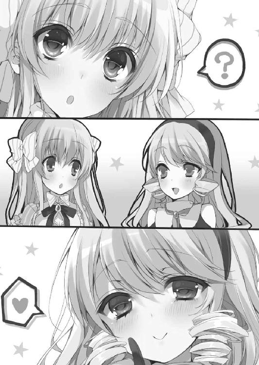
「うい？」
意味深な少女の言葉に、アルセーヌは小首を傾げる。
「この場でお名前をお尋ねするのは失礼ですか？ それとも、お尋ねしないほうが失礼でしょうか？」
「んふふ。どちらにせよぉ、答える気のないあたくしのほうが失礼だもの、気にしないで頂戴」
銀髪の少女は手にしていたステッキを傍らに置くと、両手の指先を突き合わせながら、まるで映画の開演を待ち侘びているかのような、期待感に満ちた面持ちを見せた。
４
騒然としていた会場が落ち着く頃合を見計らって、司会者から大会の説明が始まる。要約すれば、特筆すべきルールはそう多くはなかった。
まず、大会期間は一週間。主催側が指定した標的を奪い合い、終了時間に所有していた者が優勝となる。
次に、盗み以上の効率的な手段の禁止。つまるところ、他の参加者を負傷させてリタイアさせるなということである。盗みの際の戦闘行為は認められているものの、あくまで対象の無力化が目的でなければならないわけだ。もちろん誘拐や殺害など論外である。
悪党たちの祭典だけあって、この項目を甘っちょろいとしてブーイングをつけた参加者は少なからずいた。しかし、認めてしまった時点でアメリカのジェシー・ジェイムズが今すぐ拳銃を抜きかねないので、司会者からのきつい念押しが入った。
「ハァ？ ダメなのか！ やろうと思っていたのにさー！」
その言葉にジェシーは心底残念そうに歯ぎしりをこぼし、そんな彼女の姿に他の参加者は自分たちが守るべき最低ラインを自覚せざるを得なかった。
そして最後が、島の住人や施設に被害を出さないことであった。言ってしまえば、逗留中に大会と関係ないところでの泥棒稼業を禁じられたわけだ。
「これもダメなのか！ めんどーなルールばっかりだな！」
ジェシーはキレたが、周囲の目は冷ややかである。大会主催側の提示したルールは必要最低限かつ公正なものだ。
「アメリカ人は皆ああなのかしらぁ？」
「そ、それは、さすがにないと思いますわ」
イギリス代表の少女が革手袋越しに指先で眉間を押さえ、彼女の隣でアルセーヌが苦笑とともにフォローを入れる。
「でも、このルールがドロボウさんにとってどのくらい重要な情報なのか、わたくしではまるで分かりませんわ。後でムッシュ五右衛門にお聞きしないと......」
ふとアルセーヌが離れた席にいる五右衛門へと視線を巡らせてみると、何と彼は未だに隣の席の洪吉童と睨み合いを続けていた。
アルセーヌはため息をこぼし、ルールを確認する。
先ほど挙げた三つの項目の他には、注意点や禁止項目などほとんど記載されていなかった。五右衛門がしているように、大会参加者以外の泥棒の手を借りるのも禁じられていないし、それこそ参加者同士での一時的な同盟でさえ認められていた。
「イギリスとフランス。隣国同士いっそのことぉ、あたくしたちも同盟を組んじゃう？」
と、ルールと睨めっこを続けていたアルセーヌの耳元で、銀髪の少女が囁いた。
「だ、ダメですわ！」
「さっき口にしていた五右衛門とやらの許可がないとダメってことかしらぁ。まさか、他国の代表同士が大会開催に先んじて手を組んでいるなんてねぇ」
「ど、どうしてそんなことまで分かるんですの！」
「んふふ。顔に書いてある......なんてクラシックな台詞を口にさせないで欲しいわぁ」
言い当てられて慌てふためくアルセーヌを、イギリス代表の少女はまるでお気に入りのオモチャで遊んでいるかのような顔つきで眺めている。彼女のからかいに、アルセーヌは顔を赤らめてしまった。
「皆様、静粛にお願い致します」
そのとき、壇上の司会者が勿体ぶった言い方で呼びかけてきた。
「これより、今大会で皆様に奪い合っていただくことになる標的を発表させていただきたいと思います。もちろん、今はこの島にある物でございます」
ざわついていた面々も、司会者の言葉にようやく黙る。
「今回皆様に狙っていただくのは、前大会の優勝者であるアルセーヌ・ルパンのコレクションの一つ、カリオストロ伯爵の黄金の懐中時計！」
司会者の言葉が終わらぬうちに、参加者全員の目がアルセーヌへと集まっていた。
「......うい？」
アルセーヌが小首を傾げた途端、参加者たちが動いた。彼らは標的を知らされるや否やアルセーヌのもとへと殺到し、飛び掛かってきたのだ。
「わ、わ、わたくし今は時計を持っておりませんの！」
押し寄せる人の波に涙目になったアルセーヌが弁明の叫びを上げたが、信じる者などいるはずもなかった。
「じゃあねぇ、ミス・ルパン。グッドラックぅ」
イギリス代表の少女だけが、巻き込まれないようステッキを手にしてすぐさま飛び退く。
残されたアルセーヌは、咄嗟に逃げ出すことも出来ず、完全に混乱してしまっていた。このまま参加者たちにもみくちゃにされ、最悪押し潰されるビジョンが彼女の脳裏によぎった、その瞬間。
「アル！ 立ち上がってバンザイだ！」
「は、はいですわ！」
遠くから響いた五右衛門の叫びに、迫る参加者たちの姿に震えながらもアルセーヌは反射的にその場で立ち上がり、両手を頭上にかざす。
五右衛門は常人離れした跳躍力で並み居る参加者たちを軽々と飛び越えると、アルセーヌが伸ばしていた手をしっかりと握り、彼女の体を引き上げた。
「なんだアイツ、まるでニンジャみたいな動きしちゃってさ！」
ジェシーを含めた参加者たちが驚愕する中、五右衛門はアルセーヌを抱えたまま一目散にホールから飛び出し、同時にドテラから煙玉を取り出して放り捨てていく。
「ちくしょーッ！ このまま逃がすつもりはないからな！」
背中から聞こえるジェシーの発砲音に急かされながらも、五右衛門はエレベーターの中へと駆け込んだ。
洪吉童を始めとした数人の参加者たちが煙をものともせずに背後まで迫っていたが、間一髪彼らの手が届くより先に扉を閉めることに成功する。
「ムッシュ五右衛門。この、マントに似たお召し物には一体何が入っているんですの？ 先ほどのお手並み、まるで手品のようでしたわー」
「アル......何をのほほんとしているんだい、まったく」
上昇するエレベーターの中、アルセーヌは五右衛門の腕に抱きかかえられたまま、彼の仕事道具一式が入っているドテラを不思議そうに眺めていた。
「いいかい、アル。会場の外は、参加者たちが雇っている手下でごった返しているはずだ。となると、彼らの注目を集めながら隠れ家へ逃げ帰るのは難しい」
「もう一度わたくしが時計を持っていないと説明すれば、皆さん分かってくださいませんでしょうか」
「ルパンの言葉を誰が素直に信じてくれるんだい？」
「うい......」
しょんぼりと肩を落とすアルセーヌを腕に抱いたまま、五右衛門はエレベーターが地上に出るのを待つ。
ふとアルセーヌは顔を上げ、不思議そうに五右衛門の顔を覗き込んだ。
「でも、あなた様はわたくしの言葉を信じてくださいましたわ。だからこうして、至らぬわたくしに手を貸してくださっている......どうしてですの？」
「え？ いや、それは......」
「どうしてですの？」
アルセーヌにまじまじと見つめられ、五右衛門はしどろもどろのうちに細い目を泳がせ、視線を逸らしてしまった。
「......前にも言っただろう。石川五右衛門は、女の子に弱いんだ」
そっぽを向いた五右衛門がそう口にした瞬間、エレベーターが地上に到着し、扉が開く。一階では現在上演中のサーカスが盛況なのか、いくつもの歓声が上がっている。
「さ、おしゃべりは中断だ。アル、舌を嚙まないように気をつけて、そして僕の体にちゃんとしがみ付いておくように！」
「ウイ、ムッシュ。あら？ でも、先ほど会場の外には出られないとおっしゃっていませんでした？」
アルセーヌの疑問に答えることなく、五右衛門はすぐさま駆け出す。その足は会場の外ではなく、逆方向に位置するサーカスの舞台へと向かっていた。
「こちら五右衛門、今到着した！」
五右衛門は鼠小僧次郎吉と連絡を取るための袖のマイクを口元へと近付け、アルセーヌを抱えたまま観客席へと飛び込む。
同時に、観客席の各所から、先ほど五右衛門が使用した煙玉と同種の爆発が起こった。突然の煙に、観客たちは悲鳴を上げて逃げ惑う。
「なるほどですわ。この騒ぎに乗じて逃げ出すわけですのね！」
感心するアルセーヌを運びつつ、五右衛門は一目散に観客席の一角を目指す。そこには、騒然とする観客たちの中でただ一人、落ち着いた様子で席に腰を下ろしている少女がいた。
「わ、わたくし？」
彼女の姿に、アルセーヌが目を丸くする。
金髪碧眼、優雅な佇まい、清楚なドレス、どれをとっても、観客席の一角にいた少女はアルセーヌ・ルパンそっくりだったのだ。
「初めまして。あたしが噂の鼠小僧次郎吉だよ」
アルセーヌに向け、もう一人のアルセーヌは得意げにブイサインを披露する。
「じろちゃん、打ち合わせ通りに頼む！」
「合点合点。そう急かさないでよ、ごっちん」
焦る五右衛門に対し、アルセーヌに扮した次郎吉は観客席の下からごそごそと着ぐるみを取り出した。このサーカスのマスコットキャラクターであるクマの着ぐるみだ。あらかじめ次郎吉が失敬していたらしい。
「まあ！ 大きなクマさんですわー」
「さ、アルちん、これに着替えて。早く早く」
「アルちん？ わたくしのことですの？」
戸惑うアルセーヌは、次郎吉によってひょうきんなクマの着ぐるみを頭から被せられてしまった。
「ど、どういうことですの？ どういうことですの？」
わけの分からぬまま着ぐるみ姿で首を傾げるアルセーヌを尻目に、五右衛門も素早く変装を済ませていた。目立ちすぎるドテラを脱ぎ、サーカスのピエロに扮している。
「最初に言っただろう、アルの正体が早々にバレてしまった以上、人目につかず隠れ家に向かうのは至難の業だと。開会セレモニーがどう転ぶにせよ、初めからこうして騒ぎを起こすつもりだったんだ」
「ごっちんは人使いが荒くて困るね」
ピエロの鼻をため息交じりに突きながら、次郎吉が唇を尖らせる。
「すまない、じろちゃん。囮を頼む」
「合点。何とか逃げおおせてみる。隠れ家で合流しよう」
次郎吉は軽く頷くと、ピエロと着ぐるみをその場に残し、逃げる観客たちの中に紛れてしまった。
人ごみの中へと消えたウィッグの金髪とドレスの後姿を、五右衛門は頼もしげに見送る。
「理解が及びましたわ。つまり、マドモアゼル次郎吉がわたくしの身代わりを務めている間に逃げる手筈ですのね」
「アルに初代ルパン譲りの変装術があれば、話はもっと楽だったんだけどね」
「お手数をおかけします......」
縮こまろうとする図体のデカいクマの着ぐるみの手を引き、ピエロが駆け出した。二人は逃げ惑う人ごみに紛れ込み、そのまま会場の外を目指す。
時を同じくして、屋外からも悲鳴が聞こえてきた。さらには動物たちの声まで聞こえてきている。どうやら、屋外の檻に閉じ込められていたサーカスの動物たちを次郎吉が解き放ったらしい。
今しがたジェシーや洪吉童など地下にいた大勢の参加者たちも地上に到着したが、彼らはエレベーターから飛び出すなり、予想だにしていなかった事態に戸惑う。
「やれやれ。こっちは初日からマジメにやるつもりはないっていうのに、とんだとばっちりだぜ。この有様じゃ、ディナーの予約をしている店に辿り着くのも一苦労じゃないか」
参加者たちのほとんどがアルセーヌを追いかけようとしているが、人の流れに逆らうことが出来ずに四苦八苦している。そんな光景を尻目に、ディエゴは困り顔でため息をこぼしていた。
「当代の石川五右衛門はなかなかの切れ者ねぇ」
喧騒を他人事のように眺めながら呟いたのは、イギリス代表の少女だ。
「あたくしの見たところぉ、大胆不敵という点においては、おそらく今大会の参加者の中でも二か三はくだらないって感じかしらぁ。んふふ、一番はあたくしだけれどねぇ」
彼女は縦ロールの銀髪をかきあげると、アルセーヌを追うことなく、サーカス会場で合流した数人の男たちを連れ、人知れず裏口へと優雅に足を運ぶ。
「あーもう、アタシのジャマをするなーッ！」
そんな中、先陣切ってアルセーヌを追おうとしていたジェシー・ジェイムズが、押し寄せる人ごみにキレたのか、頭上に向けて銃を乱射し始めてしまう。
突然のシスターの凶行に周囲の混乱はさらに悪化し、阿鼻叫喚の様子を見せる。観客が銃声に怯え、ジェシーを中心にした人だかりが彼女の傍から大慌てで逃げ出し、人の流れはさらに乱れ、いくつもの衝突事故が起きてしまったのだ。
サーカスを見に来ていた子どもが一人、他の観客に蹴飛ばされ、泣き声を上げ始める。
「これは見過ごせませんわ」
それを見たアルセーヌは、クマの着ぐるみを着込んだまま、急に五右衛門の手を払って、暴走するジェシーのもとへと駆け出す。
「なっ、おい、アル！」
慌てて呼び止めようとする五右衛門だが、彼は運悪くジェシーから逃げてきた集団に吞まれてしまい、手の届かない位置まで移動したアルセーヌを追いかけられなかった。
「着ぐるみのクマがアタシに何の用だッ！」
キレたジェシーが目を血走らせて銃口をアルセーヌへと向ける。
瞬間、鈍重そうな見かけからは想像も出来ない見事な瞬発力で、着ぐるみのクマが跳ねた。あくまで身を屈めたまま、ジェシーが引き金を引くより速く飛び掛かる。
突き出されていたジェシーの腕を銃ごと捻りあげた着ぐるみのクマは、彼女の足に華麗な足払いを決める。
「──は？」
状況が理解できなかったのか、ジェシーの素っ頓狂な声が周囲に響いた。
彼女の体は着ぐるみのクマによって鮮やかな背負い投げを食らい、宙を一回転していたのだ。
「ごめんあそばせ」
あまりに綺麗に決められた背負い投げに呆然とするジェシーを床に叩きつけ、着ぐるみのクマは優雅に頭を下げて非礼を詫びた。
「ヒュー、たいしたもんだぜ」
見事な一本背負いを見物していたディエゴが、お気楽な調子で口笛を吹いた。
「今だ！ あのイカレ女を取り押さえろ！」
「銃を取り上げて簀巻きにしてしまえ！」
「んぎゃー！ やだ何するのさー！」
ジェシーが着ぐるみのクマに無力化された隙に、大会参加者や観客たちが彼女へと駆け寄り、その体を近くにあったテープでぐるぐる巻きにしてしまう。
「さあムッシュ、今のうちに逃げましょう」
「あ、ああ」
簀巻きにされるジェシーを尻目に、ピエロと着ぐるみのクマは避難口へと急いだ。
「なあアル、さっきのは一体......？」
「先ほどの？ ああ、あれはジュージュツですのよ、柔術。ニッポン人なのですから、ムッシュのほうがお詳しいでしょう？」
逃避行の最中に五右衛門が小声で尋ねたところ、アルセーヌは被り物のクマの口から顔を出し、普段通りのマイペースでそう答えた。
「そうじゃなくて、何でキミにそんな芸当が出来るのかってことなんだけど」
「初代ルパンは護身術として柔術を愛好していたそうですわ。以来、代々のルパンは柔術をマスターするのが習わしですの。わたくしこう見えて、黒帯を持っていますのよ」
「く、黒帯......」
よく見れば、アルセーヌは着ぐるみの重さを感じさせない軽快なフットワークで走り続けている。どんくさい彼女からは想像も出来ない身のこなしだ。
そのままアルセーヌと五右衛門は会場の外へと脱出し、混雑する人だかりを抜けて隠れ家へと石畳の道を進み始めた。
「父からドロボウさんの技術や変装術は教わっておりませんけれど、年頃の娘ですし、護身術くらいは身に付けておいたほうがいいと言われましたので」
驚くべきことにアルセーヌは、重く暑い着ぐるみの中で息一つ乱すことなく快走を続けていた。
「そ、そうだったのか。そういえば、体術のテストはしなかったな......」
余裕綽々の着ぐるみのクマの姿に啞然としつつ、五右衛門は日本から遠く離れた異国の空の下、驚きに目を薄っすらと見開いたのだった。
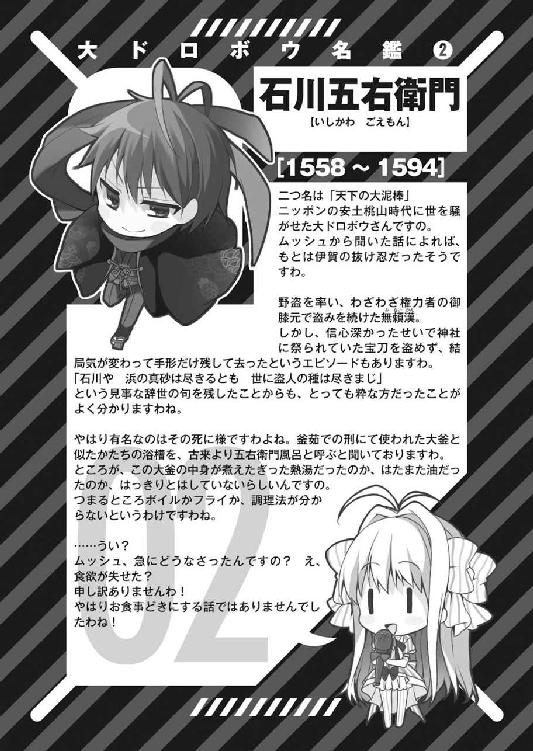
第二章 大ドロボウも楽じゃない
１
アルセーヌ・ルパンの隠れ家は、五右衛門の予想を上回る規模であった。
悪党の楽園の端に佇む、古びた洋館。家財はなく、人が住んでいた形跡さえない。しかしながら犯罪者が住み着くことなく、ルパンの所有地としての面目を守っていた。この洋館が、隠れ家の入り口であった。
洋館の地下には大規模な隠し通路が広がっており、蜘蛛の巣状に張り巡らされている。無論、正しい道を知っているルパン以外の人間が使おうとしても、迷路に閉じ込められるのが関の山だ。
いくつも枝分かれした隠し通路を正しい順路で進むことで、ようやく真の隠れ家に到着することが出来るのだ。しかも隠れ家は島の要所に複数用意されており、どこに潜伏しているかは侵入者に分かるはずもない。
「念の入れようはさすが怪盗紳士ルパンとでも言うべきかな......」
ごくごく平凡な民家の室内で、窓から見える遠く離れた洋館へと細い目を向け、十四代目の石川五右衛門は大きなあくびをこぼしていた。
今アルセーヌと五右衛門が身を寄せているのは、住宅街の一角にある小さな一軒家だ。隠れ家は他にも高級マンションの地下室や観光客向けのホテルの別館、はたまたリゾート区の別荘と、色々選択肢はあった。
そうした中から民家を第一の隠れ家に選んだのは五右衛門だ。お嬢様育ちのアルセーヌはともかく、彼としてはなるべく当たり障りのない場所での生活が落ち着くのだろう。
しかし五右衛門にも誤算があった。
「この隠れ家に若い少年少女が二人っきりで泊まることまでは、さすがの先代ルパンとはいえ想像していなかったようだな......」
再び大あくびをこぼしながら、五右衛門が眠そうにまぶたをこする。
この民家には寝室が一つしかなく、おまけに壁が薄かった。寝室のアルセーヌの寝息が、居間のソファーで眠ろうとしていた五右衛門の耳に聞こえたほどだ。このときばかりは、泥棒としての聞き耳のスキルが仇になってしまった。
ただでさえ異性に免疫のない五右衛門は、アルセーヌの寝息だけで悶々としてしまい、まったく眠れなかったのだ。
仕方なく、昨日アルセーヌを利用して聞き出すことに成功した、他の大会参加者たちの名前と素性を調べ始めた。そうこうしているうちに一夜を明かしてしまい、こうして寝不足と相成ったわけである。
「まあ、睡眠不足は問題ではあるものの、収穫は大きい。僕も知らなかったけれど、今回の参加者たちは皆そうそうたる泥棒の子孫ばかりだったんだな。早めに調べることが出来て良かったと思うことにしよう」
五右衛門の呟き通り、参加者たちは皆、出身国では知らぬ者がいないほどの有名人ばかりだった。インターネットで調べるだけで簡単に素性が分かったあたり、その知名度は相当なものだ。日本国内における石川五右衛門の名前の普及度に勝るとも劣らない。
「ムッシュ五右衛門、そろそろ朝御飯の支度ができましたわよー」
とはいえ、アルセーヌ・ルパンに匹敵する名前があったかと言われれば、答えはノーである。参加者たちの誰もが、柔和な微笑で清々しい朝の風景を眩く輝かせている少女を、今大会の優勝候補筆頭として見ていることだろう。
「どうしたんですの、ムッシュー？」
純白のエプロンに身を包んだアルセーヌが、不思議そうに五右衛門の顔を覗き込んだ。途端、昨夜の彼女の寝息が脳裏に再生されてしまい、五右衛門は慌ててその場を飛び退いた。
「いや、別になんでもないよ」
「その割には、どこか眠そうなお顔をしていらっしゃいますわ」
アルセーヌの鋭い指摘に、五右衛門は一瞬たじろぐ。
「それは......アルのおかげで大会参加者たちの名前を大方把握することが出来たからね。どういう泥棒なのか調べていたせいで寝不足になってしまったんだ」
「まあ！ わたくしのおかげだなんて、とっても照れてしまいますわ。でも、夜更かしは体に悪いですのよ」
「ああうん、気を付けるよ」
とっさの弁明をアルセーヌは素直に信じたようだ。五右衛門はまるで天然記念物か絶滅危惧種でも見るかのような目を彼女へと向ける。
「ところでムッシュ、わたくし一つ気になっていることがあるのですけれど、イギリス代表の方のお名前は何とおっしゃられるのでしょうか」
「イギリス？ ああ、あの銀髪縦ロールの子か。うーん、彼女自身は昨日名乗らなかったし、正体までは分からないなあ」
「全員把握できたわけではないのですね」
「まあね。スペインのドン・ディエゴだって正体は分からないままだし。でも、イギリスの代表的な泥棒なんだから、おそらくシャーウッドの森のロビン・フッドじゃないかな」
「ええっ？ 有名な方ですけれど、ドロボウさんだったのですか？」
「もちろんさ。仲間たちとともに盗賊団を結成し、権力者から金品を強奪していたんだ。立派に泥棒だよ。もっとも彼らは、そうして集めた金品を庶民に配っていたけどね」
「それはドロボウさんと言うより正義の味方なのではありませんこと？」
「いいや、一概にそうとは言い切れない。民衆の味方としての立場を確立しておけば、いざとなれば彼らが庇ってくれる、そういう狙いもあったはずだ。かくいう初代石川五右衛門も似たようなことをしていたからね」
無論、庶民階層に味方を増やしていた泥棒は石川五右衛門やロビン・フッドだけではない。大会参加者たちの中にもそうした泥棒の子孫は多くいる。宋江、ネッド、サルヴァトーレ、プーランなど、昨晩遭遇した各国代表のほとんどが該当した。
「キミのご先祖様の初代ルパンだって、貧しい人間からは決して盗みを働かなかったじゃないか。結果、ルパンは今の世もフランスでは人気者だ」
「なるほど。ただ盗むだけではなく、人々の心をも摑めて初めて、一流のドロボウさんと呼ばれるわけですわね。ムッシュのお話は勉強になりますわー」
感心するアルセーヌとともに、五右衛門は食卓へと足を運んだ。席に腰を下ろし、五右衛門はテーブルの上に並んだ朝食へと目を落とす。
「それにしても、昨夜の夕食に続いて今朝も三人分作ったのか......」
「当たり前ですわ！ わたくしの身代わりになって街中駆けずり回っているマドモアゼル次郎吉のために、わたくしに出来ることといったらこのくらいですもの！」
五右衛門がぼやいた途端、摑みかかる勢いでアルセーヌが吠えた。
鼠小僧次郎吉は昨日の開会セレモニー以降、おそらく徹夜で参加者たち相手に逃避行を続ける羽目になったはずだ。合流地点の隠れ家と、そこに辿り着くルートはあらかじめ知らせているものの、昨夜のうちに彼女は戻らなかった。
「じろちゃんもプロだ。そのくらいどうってことないよ。仕事の内容に見合うだけの報酬だって用意しているんだし」
「プロでも女の子は女の子ですわ」
「それに、いつ戻るとも知れないじろちゃんを待っていても仕方ないだろう。大体、昨夜もこんな調子で結局料理が冷めてしまったじゃないか」
「もちろんわたくしも、ムッシュ五右衛門には出来立ての手作り料理を召し上がっていただきたいとは思っていますけれど......。でも、それとこれとは話が別ですもの！」
五右衛門とアルセーヌが言い合いを続けている最中、突如として地下室へと続く扉がゆっくりと開いた。
瞬間、アルセーヌを庇うように身構える五右衛門だったが、扉の奥から現れた人物を見て警戒を解く。
一方のアルセーヌは、地下室から現れた人物を前に小首を傾げている。それもそのはず、彼女にとっては初対面も同然なのだ。何せ、素顔は一度として見たこともないのだから。
「おじゃまー」
眠そうにまぶたをこすりながらあくびをこぼしたその人物は、日本人の少女だった。
まず目を引くのは、彼女が深々と頭に被ったほっかむりだろう。まさに日本の由緒正しい盗人スタイルを再現したかの如き、ファッション性の欠片もない純然たるほっかむりである。
背はアルセーヌと同じくらいだが、体型は遥かにスレンダーだ。観察すれば、余分な筋肉をつけることなくスマートに鍛えられた体つきだと誰の目にも分かる。
少女はほっかむりを脱ぎ、結んでいた黒髪を解いた後、へなへなとその場に崩れ落ちた。
「あーもう疲れたー、眠たーい、お腹すいたー」
「お疲れ様、じろちゃん」
「ごっちん気楽に言わないでくれる？ 全員撒くのに何時間走り回る羽目になったと思ってるのさー」
ぶーぶーと口を尖らせる少女の姿に、アルセーヌは驚きで目を丸くした。
「もしかして、この方がマドモアゼル次郎吉なんですの？ 昨日お会いしたときとはまるで違いませんこと？」
「......誰に変装していたと思っているんだ」
「わたくしてっきり、わたくしのそっくりさんかと思っておりましたわ」
おっとりと呟くアルセーヌの天然ぶりを、五右衛門も次郎吉も調子を狂わされた顔つきで力なく見つめていた。
「これが当代の鼠小僧次郎吉の、変装ヌキの本当の姿なのだー」
アルセーヌに変装していた小道具とドレス一式が入ったリュックを床に放り出しながら、次郎吉は得意げに胸を張る。悲しいかな次郎吉も素材が悪いわけではないのだが、アルセーヌより一回りも二回りも小ぶりだった。比べる相手が悪かったのだ。
「改めまして初めまして、マドモアゼル次郎吉。さ、あなた様の食事も用意しておりますわよ。なんでしたら、昨夜の分の夕食も温め直しますわ」
へたり込んだ次郎吉へと、アルセーヌは慈愛の微笑みとともに手を伸ばす。
「おお......アルちんは天使......」
その手を取って立ち上がった次郎吉は、テーブルの上に並んだ豪勢な朝食を前に目を輝かせる。
「あ、でも、その前にお風呂入りたいかな......。やっぱり女の子としては、食欲よりも睡眠欲よりもまず身だしなみをキチンとしておかねば......」
「マドモアゼル次郎吉！ 淑女として素晴らしい心がけですわ！ もちろんご安心くださいまし、いつお帰りになられてもいいよう、お風呂も沸かしてありますもの！」
「おおお......もはや女神......」
「さ、こちらですわー」
アルセーヌに手を引かれながら、次郎吉はよろよろと浴室へと足を運んでいく。
「やれやれ、ま、これで一安心かな」
少女二人の背中を見送りながら、五右衛門は食卓のクロワッサンへと手を伸ばす。
「ムッシュ五右衛門！ 朝食はマドモアゼル次郎吉がお風呂を上がって全員が揃ってからですわよ！ それまではお預けですわ！」
「は、はい......」
瞬間、脱衣所から聞こえてきたアルセーヌの声に、五右衛門は伸ばした手を引っ込めた。
「なして五右衛門風呂？」
「ムッシュが、どうしてもこういう形の浴槽でないとリラックス出来ないとおっしゃるもので、特注で取り寄せましたの」
「あー、そういやごっちんの屋敷のお風呂も五右衛門風呂だったっけ。合点合点」
脱衣所からは、少女たちの声に交じって衣擦れの音が聞こえている。無論、五右衛門も聞き耳したいわけではないのだが、泥棒として培った習慣を止めることは出来ない。
「いかんいかん......」
手持ち無沙汰を理由に、五右衛門は気を紛らわせるため、今度は次郎吉が放り出していたリュックへと手を伸ばした。
リュックの中の変装グッズは、元々五右衛門の所有物である。以前、日本に訪れたアルセーヌに変装術のテストを行った際、彼が使った品々をそっくりそのまま次郎吉に貸し与えていたのだ。
「また必要になる場面があるかもしれないからな」
言って、五右衛門はリュックの中からウィッグやドレスを取り出す。
と、変装一式のチェックをしていた五右衛門がふと顔を訝しめた。彼が手にしたのは、胸の詰め物であった。
前述したとおり次郎吉が悪いわけではないのだが、アルセーヌに変装するうえで必要不可欠なのが、豊かな胸の膨らみである。この詰め物も、五右衛門が以前使用したのと同じ物だ。
ところが五右衛門は詰め物を手に、どこか怪訝そうな顔をしている。
「妙だな。しかし......いやまさかそんな......」
五右衛門は何やら真剣に悩んでいる様子だったが、浴室のほうから聞こえる少女たちの華やかな声が耳に入り、またも気を取られてしまった。
「駄目だ駄目だ！ シャワーの音を気にしているようじゃ、まだまだ修行が足らない」
しばらくして五右衛門は顔を真っ赤にして詰め物を放り出し、リュックの中身のチェックを再開する。
そこで、五右衛門の顔が急に強張った。
「じろちゃんの奴、しくじったな」
深刻な顔つきで五右衛門が取り出したのは、あろうことか小型の発信機だった。次郎吉の着ていたドレスに何者かが取り付けたのだろう。
五右衛門は発信機を解体し無力化させたが、時を同じくして隠れ家の電話が鳴り始める。
次郎吉は今も入浴中で、アルセーヌは彼女の着替えでも用意しているのだろう。
五右衛門はゆっくりと電話へと近付き、緊張の面持ちで受話器を取った。
『オッラーッ！ ブエノス・ディアス！』
「......誰だ」
『薄情だなアミーゴ。オレだよ、ドン・ディエゴだ。ブエノス・ディアスはスペイン語でおはようって意味だ。知らなかったか、フランシス？』
「どうしてここの電話番号が分かったか......そう尋ねるのは愚問だろうな」
手の中の発信機を睨みつつ、五右衛門は底冷えする声で受話器の向こうのディエゴへと語りかけた。
『いいや、疑問に思うのは当然だぜ。サービス精神溢れるオレが、ちゃーんと説明してやろう』
にもかかわらず、ディエゴはお気楽な調子で何やら語り始める。
『元々オレは昨日のうちにセニョリータ・ルパンを追いかけるつもりはなかったんだが、予約しておいた店で優雅にディナーを取りながら情熱的なフラメンコを見ているとだな、運良くセニョリータが通りかかったのを見つけたもんで、運良く持ち合わせていた発信機を適当に投げつけたところ、運良くドレスの裾に引っ付いたってわけだ』
「......それで運良く住所を割り出し、運良く電話番号を調べたとでも言うつもりか？」
『話が早くて助かるぜアミーゴ！ だが肝心なことが抜けているな。運良くフラメンコを踊っていた女性を誘えたので情熱的で甘い一夜がオレを待っていた！』
「なら、この電話はどこかのホテルからかかっているわけだな」
『残念ながら、あと一押しってところでビンタ食らって運悪くお流れになったので、この電話先は秘密のままにしておいて欲しいぜ』
受話器の向こうからは陽気な笑い声が聞こえているが、五右衛門は軽薄なディエゴのお喋りを聞き流し、眼光鋭く虚空を睨みつけた。
「ディエゴ。キミは一体何者だ？」
五右衛門の一言に、ディエゴは笑い声を止める。
「昨日のうちに参加者たちの素性をあらかた調べたが、キミの正体は分からずじまいだ。そもそも、スペインで悪名を轟かせたドン・ディエゴなんていう泥棒はいない」
『それはおかしな話だぜ。何せドン・ディエゴはスペインじゃありきたりな名前だからな。その辺の泥棒を適当に十人捕まえれば、二、三人くらい交じっているだろうぜ』
「訂正する。怪盗紳士アルセーヌ・ルパンに匹敵する大泥棒ドン・ディエゴが何者か分からない、という意味だ。それほど有名だと自負するなら、少し調べれば候補が絞れそうなものだろう」
『──そうだな、ヒントをやろう。確かにオレはスペインを代表する大泥棒の子孫だが、初代ドン・ディエゴが活躍したのは今のスペイン国内ってわけじゃあない』
「それはどういう......」
ディエゴのヒントを聞き五右衛門はなおも食い下がろうとしたが、受話器の向こう側が勝手に話を打ち切ってしまった。
『それはそうとアンタら結構やるじゃないか。大会参加者たちを挑発して名乗らせたばかりか、今度は黄金の懐中時計をまさかあんな場所に隠すなんてな』
「......待て。あんな場所に、だと？ どういうことだ」
『またまたー、わざとらしいことを言ってくれるぜ。この悪党の楽園にはびこる各国のマフィアやギャングのボスたちが集まるオークションに、標的の懐中時計を出品したんだろう？』
ディエゴからもたらされた情報に、五右衛門は絶句した。
慌ててテレビを点けてチャンネルを回したところ、どこもオークションの話題でもちきりだった。
島中のあらゆるニュース番組が、アルセーヌ・ルパンのコレクションであるカリオストロ伯爵の黄金の懐中時計が、こともあろうにルパン本人から出品されたと報じている。
『大会期間中ずっと持っておくのは確かに安全とは言えない。何せ参加者全員に狙われるわけだからな。そこで、この島で一番物騒な連中に渡して一番警備が厳重な場所に保管させておこうってわけだ。後は最終日になって自分たちで忍び込んで取り戻すって算段だろう、フランシス』
「......まあ、そんなところだ。ところでそのフランシスとかいう呼び名は止めろ」
適当に相槌を打ちながらも、五右衛門は混乱していた。
そもそも今大会の標的である黄金の懐中時計は、ルパンの屋敷から大会主催者側の誰かが盗み出したものだ。無論アルセーヌの弁が正しいなら、という仮定はつくが、彼女が噓を吐き通せる人間ではないことくらい五右衛門も看破している。
つまり、今回オークションに懐中時計を引き渡したのも大会主催者側の思惑となる。どうして相手がそんな真似をするのか、五右衛門には理解が及ばなかった。
疑問を抱えつつも、五右衛門は受話器の向こうのディエゴへとさらに尋ねかける。
「で、ディエゴ。そのオークションに出品される懐中時計は、この島のどこに保管されているんだ？」
『さっきも言ったはずだぜ。この島で一番警備が厳重な場所──つまり島中の悪党どもの金という金が集まる場所。悪党の楽園唯一の大銀行、通称クリスタルバンクだ』
２
クリスタルバンクと呼ばれる強化ガラス製の建造物は、島の中央でまるでオブジェのようにそびえ立っていた。
入り口も壁も柱もガラスで造られており、地中海の太陽の輝きをビル全体で取り込む構造となっている。
無論、外見上の美術的価値のためにガラス製になっているわけではない。施設内の従業員たちの姿も外から丸見えになるため、隠れて不正を働く者や盗みに入る者をすぐさま発見することが出来る。
もっとも、クリスタルバンクの金に手を付けようとした者など、今まで一人として存在していない。世界各国の犯罪組織が共同経営し、出資もし、そして金を預けているのだ。彼らを敵に回すことの愚かしさは、分別の足りない子どもでさえ理解できるだろう。
「このクリスタルバンクの最上階にあたる八階に、黄金の懐中時計が展示されているそうだ。展示室に立ち入りが許されているのは、世界でも有数の犯罪組織のボスや幹部に限った話だけどね」
「わたくしの家の家宝の一つをこんな場所で見世物にされるだなんて、屈辱ですわ」
ルパンの隠し通路も、さすがにクリスタルバンクには繫がっていなかった。五右衛門とアルセーヌは今、銀行の利用客に扮して一階のロビーに立ち寄っている。
利用客は二人の他にも大勢おり、銀行は盛況であった。反面、警備員の数も尋常ではなく、紛争中かと思ってしまうほどの重装備で警戒に当たっている。
「ところで、ムッシュ五右衛門。早速盗みに入るんですの？」
突然不穏なことを口走ったアルセーヌの口を塞ぎ、五右衛門はため息をこぼす。
「アル、頼むから場所を弁えてくれ。ここを警備している連中は、たとえ冗談だとしても許してくれないぞ」
「ご、ごめんなさいですわ」
「今日は下見さ。じろちゃんも隠れ家で眠りこけているし、まだ大会は始まったばかりだ。そう急ぐことはない」
五右衛門が利用客に扮して銀行を訪れたのは、建物の構造を見分するためであった。
しかし一般客の立ち入りが許されているのは三階までで、それより上のフロアや、地下の金庫室に足を踏み入れることは出来ない。
周囲を窺う五右衛門の顔も深刻さを帯びていた。
「それにしても厳重な警備ですわね。これでは、本当に黄金の懐中時計を取り戻せるか不安ですわ」
「いや、警備は問題じゃないんだ。それより競争相手のほうが気がかりだな」
「うい？」
戸惑うアルセーヌを尻目に、五右衛門は近くにいた手頃な利用客を呼び止める。
「つばひろの帽子を被った髭面の姿が見えないが、ドイツ代表は不参加なのかな？」
五右衛門が話しかけたのは、仕立ての良い黒のスーツに身を包んだ紳士風の男だ。脈絡のない呼びかけに男は一瞬戸惑ったものの、すぐさまフランクな笑みを浮かべる。
「七本の短刀を持つ大泥棒様は料理店が忙しいそうだ。風の噂じゃ繁盛しているらしい」
「泥棒の腕前は三流でも料理人としての腕前は一流ってわけか」
「案外、近所の料理上手なバアさんからザワークラウトのレシピでも盗んだのかもな」
「あはは、そいつはいい。大泥棒の面目躍如だ」
五右衛門と男は軽く歓談した後、何事もなかったかのように別れた。
「お知り合いですの？」
首を傾げたままのアルセーヌの問いかけに、五右衛門は首を横に振る。
「いいや違う。だけど彼も大会の参加者だよ。確かイタリア代表のサルヴァトーレだ」
「ええっ！」
「彼だけじゃない。今いる利用客は全員そうだろうし、警備員の中にも何人か交じっているはずだ。皆、黄金の懐中時計が目当てなのさ」
五右衛門にそう言われ、ようやくアルセーヌにも周囲の状況が見えてきた。
確かに、武人肌のボディガードを引き連れた東洋人の利用客はあからさまに中国代表の宋江と梁山泊のメンバーだし、銀行の脇に建っている巨大な銅像はオーストラリア代表のネッド・ケリーの鎧に違いない。
さらには、強面の警備員たちの中に交じって、軽薄な面持ちの赤髪の青年の姿があった。眠そうにあくびをこぼしていた彼は、五右衛門とアルセーヌの視線に気付くと、得意げにウインクしてみせた。
「ほら、あそこにしれっと紛れているのはディエゴだ。まったく、昨日の今日でどうやって入り込んだんだか」
「まあ！ うかうかしていると他の参加者の皆さんに後れを取ってしまうわけですのね」
「そういうこと。かと言って早々に奪ってしまっても他の参加者たちから標的にされてしまう。大会期間は一週間だからね。皆、今は牽制しあっているのさ」
五右衛門の言葉に、アルセーヌは肩を落とす。
「オークションで競り落とすのが一番手っ取り早いだろうけど、開催を待っていると一週間が過ぎてしまう。となると、全員どこかで仕掛けてくるのは間違いない」
「弱りましたわ......。ただでさえこんな場所から時計を取り戻すのは難しいですのに、周囲の目や動向も関わってくるなんて」
「さっきも言ったけれど盗むだけなら簡単だよ。僕がそう思うんだから、他の参加者たちもほぼ全員そう考えていると見て間違いない」
アルセーヌは目を丸くして、五右衛門の顔や他の参加者たちの顔を見比べた。確かに、誰も彼もが自信満々の顔つきである。
「わたくしでは、どうやって忍び込むかさえ思いつきませんわ......」
「まあ、今回のケースに限っては忍び込むより確実な手段が一つあるんだけど。とはいえ、大会のルールに抵触するし、この島の巨大犯罪シンジケートをまとめて敵に回すことになるから、誰も実行しないだろうけどね」
「ムッシュ、それは一体どういう手段なんですの？」
「簡単さ。この銀行は全部悪党どもの手で運営されている。警察が出張ってくることは絶対にありえない。何せここの金は全部黒い金だからね」
「紙幣に色が付いているんですの？」
アルセーヌの素っ頓狂な感想に、五右衛門は呆れた顔で苦笑いを浮かべる。
「違う違う。非合法の薬や銃器の密売による、違法な金ってことさ。この島は、世界中の犯罪組織がそういう商売に使っている場所だからね」
「言われてみれば、この島についてから一度も警官さんの姿を見た記憶がありませんわ」
「警察からしても手出しの出来ないアンタッチャブルな島なんだよ。だから悪党の楽園だなんて呼ばれているわけさ」
五右衛門の説明に、アルセーヌは素直にこくこくと頷いていた。
「で、そういう場所だからこそ、島の中で盗みがあっても警察には訴えられない。となれば、一番確実で効率的な手段は力ずくの強奪に決まっている」
「強奪だなんて！ とっても物騒ですわ！」
声の大きいアルセーヌの口を再び塞ぎ、五右衛門はロビーからそそくさと立ち去ろうとする。警備員たちの警戒の目が向けられ始めたからだ。
「ともかく今日は一旦引き下がろう。帰ってじろちゃんを交えての作戦会議だ。それに、すり替え用の懐中時計のイミテーションも用意しておかないと」
苦笑を強めながらアルセーヌを引きずり、五右衛門は銀行の入り口へと足を運ぶ。
だが、不意にその足が止まった。
「どうかなさったんですの？」
「いや、別になんでもない。まさか銀行を襲って懐中時計を強奪しようなんて考える輩はいないよなって、ちょっと不安になっただけだ」
「うい？ それは先ほどムッシュご自身が否定なさっていたではありませんの。世界中の犯罪組織を敵に回すうえに、大会のルールに違反することにもなるのでしょう？」
「そう、その通りだ。まったくもってその通りなんだけど......」
重武装の警備員たちが揃っているクリスタルバンクを襲うなど正気の沙汰ではない。それこそ戦争でも始めるようなものだ。そのうえ、大会と本来無縁の施設の襲撃はルールでも禁止されている。
にもかかわらず、五右衛門の胸中に芽生えた不安はどんどんと増していく。
その原因は、昨晩調べた参加者たちの名前と素性のせいだった。一人、クリスタルバンクを襲いかねない人物に心当たりがあるのだ。
「アル。一つ尋ねるけれど、アウトローって言葉を聞いたことあるかい？」
「詳しくは存じませんが......」
「その名の通り、法から外れた連中。西部開拓時代におけるアメリカの悪党の呼び名で、いわゆる無法者のことだ」
もしも五右衛門が他国の参加者たちを昨夜のうちに調べていなければ、不安が襲ってくることもなかっただろう。だが、彼は知ってしまった。
「彼らは他人が定めたルールに縛られない。彼らは、自らに課した自分だけのルールしか守らない。だからこそアウトローと呼ばれ、好んで自らアウトローと名乗った」
五右衛門は入り口を前に完全に立ち止まっていた。そして彼の目は、話しかけているアルセーヌではなく、入り口の向こうをずっと見据えている。
アルセーヌは不思議そうに首を傾げるも、五右衛門が直視している方向へと目を向けた。すると、銀行の入り口の向こう、遠く離れたバス停のあたりから、クリスタルバンクへと歩み寄ってくる人影を見つけることが出来た。
人影は、シスターの格好をしていた。
「あの方は昨日の......確かアメリカ代表の、マドモアゼル・ジェシー・ジェイムズ？」
悪党の楽園で聖職者の格好をしている人間など、一人しか考えられない。
アルセーヌの呟きを聞いて、五右衛門の額に冷や汗が浮かんだ。彼は自分の目に映るシスターの姿を幻と思い込みたかったようだが、アルセーヌにもジェシーが見えている以上、幻覚の類であるはずがなかった。
「ジェシー・ジェイムズ。僕は知らなかったが、あの広いアメリカで知らない人間はいないほどの有名な泥棒だ。何せ、記念日を一つ作ったくらいだからね」
日本人に宮本ムサシや佐々木コジロウの名前を知っているかと尋ねたら、誰もが首を縦に振るに違いない。アメリカ人にジェシー・ジェイムズを知っているかと聞いて回っても、同じ結果が返ってくるだろう。
「初代ジェシーが達成した偉大な悪行は、世界中の泥棒たちに一攫千金の夢と希望を与えた。まさしく犯罪者のアメリカンドリームだ。数ある盗みの中でも最もハイリスクでハイリターンな彼の手口の模倣は、今も世界各地で毎日のように行われている」
遠くに見えるシスターの姿が、ゆっくりと近付いてくる。それに伴い、五右衛門の冷や汗は量を増していく。
「ど、どういう方だったんですの？」
「敬虔なクリスチャンでありながら、冷酷非情のガンマン。聖書と銃を手に、西部開拓時代のアメリカを騒がせた伝説のアウトロー......」
五右衛門は緊張に震える手でアルセーヌを抱き寄せる。
「世界で初めて銀行強盗を成功させた大泥棒！ それがジェシー・ジェイムズだ！」
叫ぶ五右衛門の視線の先で、当代のジェシー・ジェイムズはシスター帽を脱ぎ、懐から取り出したウエスタンハットを深々と被った。
次の瞬間には、後方のバス停を出発した大型バスが加速し、猛スピードでクリスタルバンクへと真正面から突っ込んでくる。
「すでに手下を使ってバスジャック済か！ 全員、出来る限り後ろに下がれ！ イカレた強盗団が突っ込んでくるぞーッ！」
五右衛門の叫びが銀行のロビーに響き渡り、周囲の面々も非常事態に気付いた。
避難勧告をした五右衛門はアルセーヌを抱えたまま、人間離れした跳躍力で背後へと跳ぶ。他の利用客や警備員も慌てて一階の最奥へと退避、あるいは二階への階段を駆け上がっていく。すでにバスは銀行の外に突っ立っていたネッドの巨体をはね飛ばし、入り口の目の前にまで接近していた。
「ち、ちなみに、その記念日とは何の記念日なんですの？」
「その名もズバリ銀行強盗の日だ！ まったく、アメリカ人は何でも手当たり次第に記念日にしやがって！」
現実逃避じみたアルセーヌと五右衛門の会話は、バスがクリスタルバンクの入り口に正面衝突した激突音によってかき消される。
警報がけたたましく鳴り響く中、バスから覆面姿の強盗団が次々に姿を現していく。
「あ、あら？ ブタさんですわー」
バス激突の衝撃で軽く吹っ飛んでいたアルセーヌは、くらくらと揺れる頭を振りながら起き上がり、目の前の光景にのん気な声を漏らした。
ギャングたちが持っていたのは場違いなほどに愛らしいぬいぐるみであったのだ。中には、アルセーヌにも見覚えのあるブタのぬいぐるみの姿もある。
「こ、ここをどこだと思っている、クリスタルバンクだぞ！ 正気か！」
百戦錬磨の用心棒じみた銀行の支配人が、怒りで目を血走らせ、ぬいぐるみを抱えた異様なジェイムズ強盗団へと鬼の形相を見せる。
だが、凄む彼の足元へと強盗団は容赦ない銃撃を浴びせかけた。支配人へと向けられたブタのぬいぐるみの鼻先が、突如として火を噴いたのだ。
「きゃあーッ！ トンプソンちゃんが！ トンプソンちゃんがー！」
アルセーヌの悲鳴も、続けざまの銃声にかき消された。
今のところは限りなく本気に近い威嚇射撃で済んでいるが、強盗団がその気になれば全員すぐにも蜂の巣だ。腰を抜かした支配人を始め、武装警備員も、利用客に扮した大会参加者たちも、渋々両手を上げていく。
「この街はよくない街さ。バスは用心のためにハナっから装甲板付きだし、銃器はいくらでも現地調達できる。そしてどれだけ騒いでも保安官は来ない」
そんな中、バスが空けた大穴を通り、制圧された銀行のロビーに悠々と足を踏み入れる人物が一人。ウエスタンハットの下で凶悪な眼光を光らせたジェシー・ジェイムズだ。
「ハイハイ皆抵抗するなよな！ 抵抗したら、バァーン！ しちゃうからな！」
ピストルを模したハンドサインとともに、彼女は手慣れた様子で手下に指示を出し、銀行の全てのシャッターとブラインドを下ろさせていく。普段は外から中が丸見えになるクリスタルバンクの構造も、こうなっては何の役にも立たない。
「お、お前ら、この島で銀行強盗なんかしてタダで済むと思うなよ。すぐさま本部から救援が駆けつける。全員地獄の底まで追い詰められて、見せしめに惨たらしく殺されるのがオチだぞ」
トンプソンの威嚇射撃で腰を抜かしたままの強面の支配人が、ちっとも様になっていないながらも威厳を取り繕う。
だが、ジェシーは床にへたり込んでいた支配人の股間に極悪非道の蹴りを叩き込み、問答無用で黙らせた。
「神はおっしゃられた。汝、隣人を愛せと。そしてアタシのご先祖様はこうおっしゃられた。汝、隣人の金を奪うなかれと」
悲鳴を口にする間もなく気絶した支配人を踏みつけながら、ジェシーは不敵に笑う。
「金を奪うなら、労働者と貴婦人からではなく、シルクハットの紳士から。だから初代ジェシー・ジェイムズは、当時は金持ちしか使えなかった銀行を次々と襲っていったのさ。現代のチンピラ崩れの銀行強盗どもと一緒にしないで欲しいっての！」
凶悪な眼差しで周囲を見渡しながら、ジェシーはシスター服のスカートのスリットに手を突っ込み、太股に取り付けたガンベルトのホルスターから愛銃を引き抜く。
「この銀行に金を貯め込んだ悪党どもは、揃いも揃って神の慈悲を信じない輩ばかり。アタシもここまでやってタダで済ませてやる気はないもんね。黄金の懐中時計はもちろん、悪党どもの肥えた私腹を満たしている金や宝石も根こそぎ全部貰っていくつもりさ。野郎ども、金庫の中身を余さず残さずバスに積み込みな！」
「ヘイ、お嬢！」
強盗団は意気揚々とした足取りで地下へと向かっていく。もちろん、半数は今も油断なくぬいぐるみを構えて警備員や大会参加者たちを威嚇している。
「あのメリケン娘、滅茶苦茶じゃのう。どう考えてもルール違反で失格じゃぞ」
「だが、懐中時計を手に入れさえすれば、試合に負けても勝負に勝ったことにはなるな」
「となると、名実とは言い難いが世界一の大泥棒の座は手に入るわけだ」
宋江を始めとした銀行内の大会参加者たちは、口惜しげに不平不満をこぼしていた。
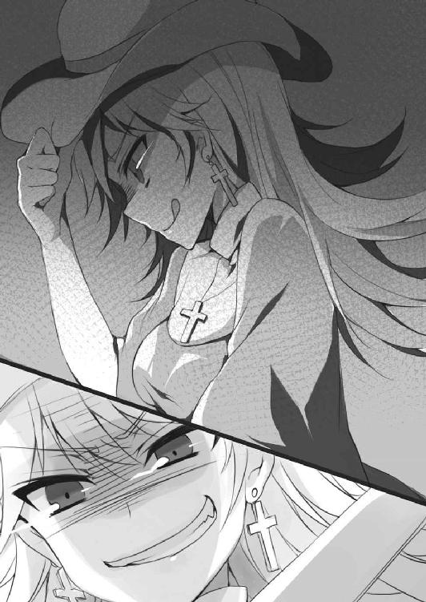
「こんなことなら、今日は昼間からバルで生ハムでもかじっているんだった......」
警備員に扮したまま力なく笑うディエゴもそんな一人だ。
「ハァーイ、アルセーヌ・ルパン」
「は、はあい、ですわ......」
ジェシーは目つきに似合わぬ愛嬌たっぷりの笑顔を浮かべ、五右衛門の体に抱きついたまま顔を引きつらせているアルセーヌへと歩み寄った。
「一緒に来てもらうよ。黄金の懐中時計を手に入れなくちゃならないもんね」
「わ、わたくし、せっかくですけどえんりょさせていただきたいのですが......」
震える声で拒否しようとしたアルセーヌだが、ジェシーは今も銃を手にしたままだ。彼女の無言の圧力に、アルセーヌは涙目になりながら助けを求めるように傍らの五右衛門へと顔を向けた。
「ど、どうしましょうムッシュ......ムッシュ？」
ところが、五右衛門は何の反応も示さない。アルセーヌの記憶が確かなら、バス突入以降、五右衛門は黙りっぱなしだったはずだ。
「ところでさー、何でさっきからマネキン抱えてんの？」
「うい？」
アルセーヌが五右衛門だとばかり思っていた傍らの人物は、いつの間にか格好だけ五右衛門を模した人形にすり替わっていたのだ。
マネキンの手を取り、その腕をカクカクと動かしながら、アルセーヌはジェシーの問いかけに小首を傾げ続けていた。
３
一方その頃、本物の五右衛門はクリスタルバンクの七階に到達していた。
彼は今、銀行の利用客に扮していた服装ではなく、すでに黒装束と金装飾のドテラに着替え終えている。
「そこのお前、銀行強盗の一味か！」
立ち入り禁止区域に踏み込んだ五右衛門を見つけた黒服のマフィアが、すぐさま銃を構えた。
ドテラの袖口に手を突っ込んでいた五右衛門は、マフィアが引き金に指をかけようとした瞬間、袖口から手裏剣を取り出して投擲し、銃を弾く。さらに、マフィアの理解が及ぶより先に電光石火の足さばきで肉薄して顎に掌底を叩き込み、一撃で気絶させる。
「一味ではないが、立派に盗人ではあるね」
手裏剣を拾い上げながら、五右衛門は余裕の笑みを浮かべた。
そのまま、崩れ落ちた警備員の体をまたぎ、五右衛門は悠々と歩みを進める。だが、軽快な足取りに反して足音は一切立っていない。抜き足、差し足、忍び足、どれを取っても完璧な熟練度であった。
そのまま彼はフロアの通路を駆け出したが、やはり足音一つ立てていない。
「フ、ここまでの芸当が出来る泥棒は、世界広しとは言え石川五右衛門をおいて他にはいないだろう。アルには悪いが、ジェシーの襲撃は利用させてもらおう」
クリスタルバンクの立ち入り禁止区域には、経営側の犯罪組織のメンバーが待機しているのだ。アルセーヌを連れて来られるわけがなかった。
「ジェシー・ジェイムズにも彼女なりのルールがあるはず。名高いアウトローとしてのプライドもある、無抵抗の人質をどうにかしようとはしないはずだ。悪く思わないでくれよ、アル。キミの家の家宝を取り戻すためなんだからね」
一階に置き去りにしてきた相棒のことを考え、五右衛門は苦笑を浮かべる。
だが、その余裕はすぐに消えた。八階へと辿り着いた五右衛門は、階段の入り口付近で昏倒していた数人の黒服マフィアの姿に、軽く唇を嚙む。
「ジェシーのバスが突っ込んできたとき、僕は一階にいた。他の参加者より後れを取ったのはそれが理由だな」
ジェシーの襲撃を逆手にとって利用したのは、何も五右衛門だけではなかった。その他数名の参加者が、派手な銀行強盗にクリスタルバンクの注意が引き付けられているうちに、瞬時に行動に移っていたのだ。
五右衛門より先に最上階の展示室に辿り着く参加者がいた場合、懐中時計を巡っての戦闘は避けられない。これが、アルセーヌを置いてきたもう一つの理由であった。
展示室の扉は開けっ放しになっている。五右衛門は素早く姿勢を屈めながら、扉の隙間から室内へと忍び込んだ。
そこには、展示物を警護していたと思しき警備員たちに加え、大会参加者たちが数人倒れていた。中には、先ほどロビーで五右衛門と歓談していたサルヴァトーレ・ジュリアーノの姿もある。
彼らは全員、何者かの手で昏倒させられ、気絶しているようだ。
「これは全部キミの仕業か」
五右衛門は、懐中時計が展示されている室内中央へと視線を巡らせ、物陰に潜んで隙を窺っていた人影へと声をかけた。
「確か、洪吉童とか名乗っていたな」
その言葉に返事はおろか頷きさえ見せなかったものの、物陰から音もなく姿を現したマフラー姿の人物は、紛れもなく韓国・北朝鮮代表の洪吉童であった。
「アメリカのジェシー・ジェイムズは余計な真似をしてくれたようだ」
洪吉童は身構えることもなく、五右衛門へと向き直る。
「邪魔が入らなければ、誰にも気取られずに懐中時計を盗めたものを。俺は何のために気配を殺して六階まで進んでいたのだか」
自然体にしか見えないが、それが彼の臨戦態勢であることは明白だった。
洪吉童の言葉が正しければ、彼はジェシーが銀行強盗を決行するよりも前から、クリスタルバンクの立ち入り禁止区域に忍び込んでいたことになる。
その事実に、五右衛門は目の前の青年が強敵であることを確信せざるを得なかった。
「そう腐ることはない。地道な努力も泥棒の必須スキルじゃないか」
洪吉童の苦々しげな愚痴に五右衛門が軽口を交えた瞬間、今まで静けさを保っていた洪吉童から敵意が放たれ、両者の間に緊迫した空気が漂う。
「たかが日本の無名の盗人ごときが、この洪吉童に説法でもするつもりか」
「やれやれ、石川五右衛門の名を知らないとは、隣国のことなのに随分と疎いんだな。それとも、あんまり記憶力がよろしくないのかな。その有名な、ポン・ギルトンは」
「ホン・ギルトンだ！」
「ああすまない。何せキミは日本じゃ別に全然有名でも何でもないものだからね」
神経を逆なでされた洪吉童は、明らかな怒気とともに五右衛門を睨みつけた。
一方の五右衛門は、こめかみを若干引きつらせていたものの、飄々とした態度を装って挑発を続けている。
「で、洪吉童ってどんな泥棒だったんだっけ？ 名の知れた大泥棒と言い張るからにはそれなりの活躍をしたんだろう？ 他に調べなければいけない有名な泥棒が多すぎて、昨日はちゃんと調べ切れてなかったんだ」
「き、貴様......」
「後回しにしたまま忘れていたんだよ。悪いとは思っている。世間的には無名な泥棒でも国の代表なんだから、配慮をすべきだった」
洪吉童が完全に怒り狂っているのが手に取るように分かるのか、五右衛門は悪辣な笑みを浮かべ、存分に溜飲を下げていた。
だが敵もさる者で、相手の挑発に乗せられていることに気付くと、すぐさま平静を装い反撃に出る。
「言っておくが、韓国・北朝鮮における洪吉童の知名度は日本における貴様の比ではないぞ。年端もいかない子どもに聞いて回っても、誰でも知っているほどだ。洪吉童は十人が十人とも知っている。石川五右衛門は精々、十人に九人といったところじゃないか？」
「......ふん、自分のことを買い被りすぎじゃないかな」
「初代洪吉童の活躍は紙芝居や絵本、子ども向けアニメにもなっている。国内ではドラマや映画の題材として扱われるのも日常茶飯事だ」
自信満々の洪吉童の反撃に、五右衛門はたじろいだ。日本国内では、幼い子どもはあまり石川五右衛門のことを知らないからだ。
「ついでに教えてやる。洪吉童とは、かつての朝鮮王朝時代に現れた神出鬼没の代名詞とも言われる大泥棒だ。盗賊団を結成し、不正と汚職にまみれた役人や貴族を懲らしめ、奪った金品を貧しい民衆に分け与えた。実は当時の王族や貴族の出ではないかとさえ今なお噂される、まさに韓国・北朝鮮における国民的ヒーローなのだ」
「自分でそこまで言うか！」
「一つ尋ねるが、貴様の祖先である初代石川五右衛門とやらは、洪吉童に並び立つほどに日本で名の売れた泥棒なのか？」
「くっ......確かに最近はドラマや映画じゃ、あまり名前を聞かない気がするぞ。昔はゲームにもなっていたりしたんだが......」
「なに、ゲームになったら偉いとでも言うつもりか！ これだから日本人は！」
ここがクリスタルバンクの展示室であることも忘れて、五右衛門と洪吉童は幼稚な言い合いを続けていた。
「......アイツらはここで一体何をしているわけ？」
そこへ呆れながらやって来たのは、ジェシー・ジェイムズだ。
「あ、ムッシュ五右衛門！ こんなところにいらっしゃったのですね！」
傍らには、銃で脅され連れて来られたアルセーヌの姿もある。助けを求めるように五右衛門へと視線を送るが、残念ながら気付いてもらえなかった。
「ムッシュー......」
「忍び込んだ先で口ゲンカとは、非常識な泥棒もいたもんだ」
よりにもよってジェシーに非常識呼ばわりはされたくないだろうが、五右衛門も洪吉童も今はそれどころではない。
「初代洪吉童が盗みを働いたのは、あくまで世のため人のためだ！」
「それがどうした！ 初代石川五右衛門も野盗を率いて大名や豪商を相手取り、民衆の味方と呼ばれるくらいのことはしていたぞ！」
「パクリだパクリだ！ やっぱり日本人はパクリ野郎だ！」
「はああああ？ パクリはそっちじゃないのか！」
何せ二人は、ジェシーやアルセーヌはもちろん目の前にある黄金の懐中時計さえすでに眼中にない様子で、醜い罵り合いを続けているのだ。
「まーいっか......この隙に時計を戴いていこーっと」
「あーんムッシュー」
毒気の抜かれた表情でため息をこぼすと、ジェシーはアルセーヌを連れたまま懐中時計へと近付いていく。
だが、急にその足が止まった。
何かに感付いてジェシーが自ら足を止めたわけではない。唐突に動かなくなったのだ。そのまま直立していられなくなったのか、彼女はふらふらと床にへたり込んでしまう。それは傍らのアルセーヌも同様だった。
見れば、五右衛門相手に激しい剣幕を見せていた洪吉童も、倒れることはなかったが片膝をついて荒い息をこぼしていた。
「なっ、これはどういう......」
突然自分の身を襲った眩暈に、洪吉童は霞む目をこすりながら周囲を見渡した。
「今頃気付いたのか」
そんな洪吉童の姿を見下ろし、五右衛門がほくそ笑む。
「まさか僕が本気でキミとの言い争いに夢中になっていたと思っていたのかい？ まあ確かに最初は時と場所を忘れかけていたけれど、それはブラフさ」
洪吉童の目には、勝ち誇る五右衛門の姿がぼやけて見えていた。それは展示室に居合わせたジェシーやアルセーヌも同じである。
「貴様、何をした！」
激昂する洪吉童は、そこでようやく気付いた。いつの間にか室内に無味無臭の煙が立ち込めていたのだ。
ジェシーが銀行強盗の際にクリスタルバンクの全てのシャッターやブラインドを下ろしていたせいで、展示室のあるフロアも密閉されていた。
五右衛門以外の全員の体の自由を奪い、五感を狂わせていたのは、室内に蔓延するこの煙が原因であった。
「おのれ、妙な小細工を！」
洪吉童は驚嘆すべき精神力で体勢を立て直し、徒手空拳で五右衛門へと襲い掛かる。が、洪吉童の拳が叩きこまれた瞬間、五右衛門の姿は幻のように消えてしまった。
「これぞ、初代石川五右衛門が戦国時代最強の忍者である百地丹波から盗んだ伊賀流忍術の奥義、分身の術だ」
意識さえ朦朧とする洪吉童の耳に届いた五右衛門の声は、別の位置から聞こえていた。
「特殊な薬品で煙を起こし、感覚を麻痺させ幻覚を見せているのか......くそっ」
今度はその場に両膝をついてしまった洪吉童は、悔しげに展示室を見回した。彼の目には、すでに五右衛門の姿が何人にも重なって見えてしまっているのだ。
洪吉童の無力化に成功した五右衛門は、会心の笑みを浮かべて手裏剣を取り出し、黄金の懐中時計を囲む防犯用ガラスへと投げつける。
「ニンジャですわ！ ニンポーですわ！ シュリケンですわ！」
「イエー！ やっぱりニッポンからはニンジャが出場すると思ってたさ！」
手裏剣の一撃でガラスの一面が破砕される光景を尻目に、入ってきたばかりで煙の影響の薄いアルセーヌとジェシーが歓声を上げていた。
「欧米人が忍者好きっていう話は本当だったのか......？」
やけにテンションの高い二人を見、五右衛門が呆れ顔を浮かべる。
「まあ確かに、僕は忍者の末裔だけれども......」
初代石川五右衛門は正真正銘の伊賀忍者であり、その卓越した泥棒の技術は全て、忍者として培ったものであった。
戦国最強の忍者と名高い伊賀忍者頭領の百地丹波に弟子入りし、彼から妻と忍術の秘伝書を奪い、初代五右衛門は盗人へと身を転じた。子孫である十四代目の五右衛門が若くして泥棒稼業を成功させているのも、全ては継承した忍術の賜物であった。
五右衛門は悠々とした足取りで黄金の懐中時計へと近付いていく。
しかしそのとき、彼は微かな異変に気付いた。床に両膝をついている洪吉童の息遣いは、先ほどまで荒く乱れていたはず。それがいつの間にか正常に戻っているのである。
すぐさま身構える五右衛門の視線の先で、洪吉童は独特の呼吸法によって意識を持ち直し、静かに立ち上がる。
「まさか伊賀流忍術を打ち破るとは！」
十八番を破られて驚く五右衛門を前に、洪吉童は不敵に笑う。
「これぞ奇門遁甲だ！ 優位な方位に陣取り、気を練り邪気を打ち払う。初代洪吉童は仙人に弟子入りし、仙術や道術を会得したとの言い伝えがある。故に、この程度のまやかしなど効きはせん。秘術を継承しているのは貴様だけではない！」
「ヒーローだの王侯貴族の出だの、そのうえ仙人の弟子と来たか！ いくらなんでも現実離れし過ぎだろう！ 設定盛りすぎだ！」
「黙れ！ 忍者に言われたくはない！」
互いに罵声を交わした後、五右衛門と洪吉童は両者激突した。
アルセーヌやジェシーの目では追いきれないほどの素早い身のこなしで、二人は激しい攻防を繰り広げる。
「民衆に人気の盗賊団の首領で、さらに秘術の使い手だって？ 完全に僕とキャラが被っているんだよ！」
「パクリは貴様のほうだろうが！ いや、貴様だけではなく、初代石川五右衛門も初代洪吉童の猿真似に違いない！」
「僕だけでなく初代まで侮辱する気か！ 許せないな！」
互いの体術、そして忍術と仙術が交錯し、火花を散らす。言い争いは間抜けであったが、彼らの決闘の前には、アルセーヌやジェシーさえ見物に甘んじるしかなかった。
「凄いですわ！ 東洋の神秘ですわ！」
もっとも、彼女たちも本来の目的を忘れて夢中で見入っている。煙の効果が薄れていく中、二人して肩を並べ、観戦にも熱が入っていた。
「って、こんなことしている場合じゃないじゃん！」
しばらくするとジェシーが我に返り、切迫した現状を思い出した。
そもそも今は銀行強盗の真っ最中で、クリスタルバンクの各犯罪組織が大部隊を引き連れて殴り込んでくるのも時間の問題だ。さっさと目当ての懐中時計を手に入れておさらばしなければならないのである。
ジェシーは持っていた拳銃の銃口を目の前の五右衛門と洪吉童へと向けた。
だが、ジェシーの敵意に感付いた洪吉童は、ちょうど五右衛門が投げてきた手裏剣を指で挟んで受け止め、それを彼女へと目掛けて投げつける。
「ほわっと？」
風を切りながら高速で迫る手裏剣を前に、ジェシーは理解が及ばず立ち呆ける。
しかし、手裏剣の刃が彼女の脳天に突き刺さる寸前、横から割り込んできた人影が警棒でもって手裏剣を叩き落とした。
「あなた様は！」
新たに展示室へと飛び込んできた人物を見上げ、アルセーヌが驚きの表情を浮かべる。
「おいおいセニョール。女の子を手荒に扱うもんじゃないぜ。それがどれだけお転婆のじゃじゃ馬でもな」
彼は自慢の赤髪を軽くかきあげると、警棒片手にジェシーの体を抱き寄せ、洪吉童に向けて相変わらずの軽口を叩いた。
「ドン・ディエゴ！」
警備員に扮していたディエゴの姿を見、五右衛門からも声が上がる。
「さ、サンクス......ってそうじゃないだろ！ 他の連中はまとめてロビーで縛り上げておいたはずじゃないか、アタシの子分たちは何をしているのさ？」
「皆揃ってシエスタしているぜ？ 何せ今日はいい天気だからな、昼寝に限る」
ディエゴはジェシーの腰に手を回し、ウインクをしてみせた。
「邪魔をするな！」
洪吉童は標的を五右衛門からディエゴへと切り替え、瞬時に襲い掛かる。
しかし、忍者である五右衛門とも五分に渡り合う洪吉童の攻撃を、ディエゴは余裕の面持ちで軽くいなしていく。驚くべきことに、片手をジェシーの腰に回したままにもかかわらずにだ。
「オーレ！ 後は赤いマントがあれば完璧だったな」
ディエゴはまるでスペインの闘牛士のように警棒をサーベルに見立てて構え、洪吉童の一瞬の隙をついて彼の手を打ち据える。
「たいした腕前だ。ディエゴの奴、やはりその辺の泥棒とはわけが違う」
その芸当には五右衛門も舌を巻いていた。
ディエゴが、五右衛門や洪吉童に匹敵、あるいは二人を凌駕するほどの実力を隠していることは明白であった。
「ちょっと待てよ？ アタシの子分たちが昼寝しているってことはつまり」
ディエゴの腕に素直に抱かれながら、ジェシーが首を傾げた。
彼女の予想通り、ディエゴに続いて他の大会参加者たちが続々と展示室に姿を見せる。ジェイムズ強盗団が無力化されたせいで、彼らもまた解放されてしまったのだ。
「まずい、このままでは混戦になる。誰が懐中時計を手に入れてもおかしくないぞ」
五右衛門が苦々しげに歯ぎしりをこぼした。歯嚙みしていたのはジェシーや洪吉童も同じで、状況が分からず困惑しているのはアルセーヌくらいなものだ。
「黄金の懐中時計を手に入れるのは、このジェシー・ジェイムズだ！」
「いいや、洪吉童が戴かせてもらう！」
「待ってくださいまし！ あの時計はうちの家宝ですのよ！」
参加者たちの声にアルセーヌが悲鳴を上げた、その瞬間のことだ。
前触れもなく、クリスタルバンクの全ての照明が落ちた。
４
シャッターやブラインドが下ろされていたせいで、室内は一瞬で暗闇に包まれた。
「誰かがブレーカーを落としたのか？」
五右衛門の予想通り、銀行の照明が強制的に落とされたようだ。当然、視界は闇に包まれる。普通なら、そんな暗闇の中で物が視えるはずなどない。
しかし、この場に居合わせているのは、幼い頃から偉大な祖先の名を継ぐべく修行に明け暮れた大泥棒の末裔たちばかりだ。彼らにとって、暗闇は常に馴染み深い存在である。
石川五右衛門、ドン・ディエゴ、洪吉童、ジェシー・ジェイムズ、そして展示室に詰めかけたその他大勢の参加者たち。彼らの目が暗闇に慣れるまでに要した時間は、おそらく一秒もかからなかっただろう。
暗視と言われる、泥棒の必須スキルの一つ。闇に紛れて盗みを働く彼らにとって、暗闇など視界の妨げにさえならない。
「どういうことですの！ 真っ暗で何も見えませんわ！」
アルセーヌだけが視界を奪われたことに混乱し、慌てふためいていた。
五右衛門を含めた参加者たちはそんな彼女の叫びを無視し、闇に乗じて懐中時計を狙おうとする敵を牽制しあっている。互いの動きは、暗闇の中にあっても筒抜けだった。
だがその瞬間、再び不意打ちのように、全ての照明が回復した。
「なっ！」
参加者たちの驚愕の声が重なる。しかも照明が点くと同時にクリスタルバンクのシャッターとブラインドが元に戻され、太陽の輝きが銀行の施設中に取り込まれていく。
暗闇の世界は、一転して光に包まれた。
参加者たちの目と思考は闇に慣れ過ぎていた。故に、突然の光は逆に彼らの視界を奪い、さらには判断力さえ一瞬奪ってしまった。泥棒としての暗視スキルが裏目に出たのである。
「黄金の懐中時計は、あたくしが頂戴させてもらうわぁ！」
そのほんの僅かな隙をつき、光に満ちた展示室に新たな人影が飛び込んできた。
銀髪の縦ロールとドレスの裾を翻し、彼女は懐中時計目掛けて疾走する。あらかじめ光に目を慣らしておいたのか、乱入してきたイギリス代表の少女の動きは的確だ。
「暗視を逆手に取り、光に紛れて盗むつもりだったのか！」
少女の声と足音を耳にし、五右衛門は悔しげに呻いた。光に目が慣れるまでの数秒の間に、彼を含めた全ての参加者は完全に出し抜かれたわけだ。
ブレーカーを落としたのも、最後まで登場を控えていたのも、そしてジェシーが銀行強盗の作法に乗っ取ってシャッターとブラインドを下ろすことすら、イギリス代表の少女の計画の内だったのだ。
黄金の懐中時計は、間違いなく彼女の手に渡る──誰もがそう思った瞬間、場違いな歓声が展示室内に響く。
「やりましたわ！ 時計を取り戻しましたわ！」
それは、アルセーヌの声だった。
「は？」
五右衛門の口から間の抜けた声がこぼれた。
ようやく光に慣れてきた目を向けてみれば、確かにアルセーヌが黄金の懐中時計を手にし、感激に目を潤ませている。
「ちょっとぉ、何よそれぇ！」
あと一息というところでアルセーヌに先を越されたイギリス代表の少女は、頰を膨らませ、その端正な面立ちに似合わぬ可愛らしい憤りを浮かべていた。
「真っ暗になって困っていましたけれど、すぐに明かりが戻ってくれたおかげで助かりましたわ！」
「し、素人なのが功を奏したのか......」
まさかアルセーヌが手に入れるとは思いもよらず、五右衛門はすっかり脱力していた。
「さすがは当代のアルセーヌ・ルパン」
「光の目くらましを先読みしていたのか」
「やはり優勝候補だけのことはある」
五右衛門の気も知らず、周囲から感嘆の呟きが聞こえてきた。
「あぁん、悔しいわぁ、覚えてなさいよぉ！」
イギリス代表の少女は白々しいまでの捨て台詞を残し、すぐさま退散しようとする。
「ちょっとお待ちになってくださいまし」
だが彼女の背を、あろうことかアルセーヌが呼び止めた。先ほどまでのはしゃぎようが噓のような、落ち着いた態度だ。
「なによぉ？ 言っておくけど、すぐにでもおっかないお兄さんたちがここへ押し寄せてくるんだからぁ、あんまり時間は取らせないでよねぇ」
イギリス代表の少女の呟きを聞き、他の参加者たちは時計の奪取を一旦諦めたようで、各々逃げ支度を始める。一方、五右衛門はアルセーヌを守るために彼女のもとへと駆けつけていた。
そんな中、アルセーヌはイギリス代表へと目を向けたまま、朗々と口を開く。
「あなた様の正体に、わたくし心当たりがありますわ」
「......へぇ？ 聞いてあげるわよぉ」
「昨日のヒントを覚えていらっしゃいますか？」
「もちろんよぉ。あたくしの母方のご先祖様と初代アルセーヌ・ルパンが、同じ人物をライバル視していたってやつでしょ」
イギリス代表の少女はどこか愉しげに銀髪をかきあげた。
「初代ルパンのライバルといえば、真っ先に二人の人物の名前が挙がりますわ」
アルセーヌは言葉を続ける。
「一人は、ガニマール警部。しかし、花の都パリの治安を守っていた彼ですけれど、隣国イギリスでまで活躍していたとの話は聞いたことがありません」
「そうよねぇ、あたくしもそんな人は知らないわぁ」
「ですがもう一人は、霧の都ロンドンで名を馳せた人物。当時はエルロック・ショルメなるアナグラムの偽名を使っていたとの説もありますが、その活躍はヨーロッパ各所に及び、世界的に見ても知らない人はいないでしょう。天才的な頭脳と推理力を持つ、かの名探偵シャーロック・ホームズですわ」
シャーロック・ホームズのことは、おそらく誰もが知っているだろう。世界規模の知名度で言ってもアルセーヌ・ルパンを凌駕する、あらゆる難事件を名推理で解決に導いた、名探偵の中の名探偵。
当然、この場に居合わせた誰もが彼の名を聞いたことがあった。泥棒を生業とする人間にとって、ホームズの名前は現代でも脅威の対象なのだ。
「あなた様がイギリス代表ならば、ライバルと呼べるのはホームズに違いないでしょう。そしてホームズにとっての不俱戴天の宿敵と言えば──」
アルセーヌの推理を、突然の拍手が遮った。イギリス代表の少女が、微笑みとともに手を鳴らしたのだ。
「ご明察ぅ。あたくしはモリアーティ。ロンドンで迷宮入りした全ての事件の黒幕とまで言われた、犯罪界のナポレオンこと、悪名高きモリアーティ教授の子孫よぉ」
彼女が明かした名に、参加者たちの顔が緊張に引きつる。
モリアーティ教授。
ホームズに匹敵する知能と才覚の全てを悪事のために費やした、犯罪の天才である。今でこそ巨大犯罪組織のボスなどいくらでもいるだろう。しかし、彼こそがその先駆であったことは疑うべくもない。
怪盗としての立場を貫き弱者からは盗みを働かなかった初代ルパンとはまったく別の価値観を持ち、暗黒社会の支配者として、自らの手は汚さずにあらゆる犯罪を引き起こした、まさに悪の黒幕と呼ぶに相応しい危険な男だ。
名探偵シャーロック・ホームズをして、モリアーティ教授の死と引き換えにロンドンは退屈になってしまったとまで言わしめた程である。
「モリアーティだと？ こいつは大物が出てきたな......大会参加者どころの話じゃないぜ。何せ初代モリアーティは、この島を悪党どもの楽園にした張本人なんだからな！」
唸るように呟いたのはディエゴだった。彼は、敵視とも言うべき眼差しをモリアーティへと向けている。
「あなた様がモリアーティの名を受け継いでいるのなら、現代のイギリスの犯罪組織を牛耳っていると言っても過言ではありませんでしょう？ それほどの大物さんでしたら、ビップ待遇で展示室に入ることは可能だったはずですわ」
アルセーヌの指摘に、モリアーティは不敵な微笑を絶やさなかったが、否定することもなかった。
「そうか。クリスタルバンクは各国の犯罪組織が共同経営しているんだ、そこにモリアーティが絡まないはずがない」
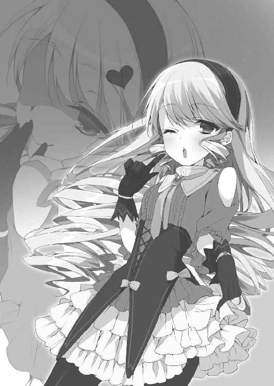
五右衛門は感心の眼差しをアルセーヌへと向けたが、それ以上に度肝を抜く言葉が彼女の口から飛び出す。
「この黄金の懐中時計は、イミテーションですわ。あなた様が偽物に気付かず盗み出そうとしたのは、わたくしとっても不可解ですの」
アルセーヌは、持っていた懐中時計を床へと落とす。
時計は床に落ちると簡単に壊れてしまい、イエローダイヤモンドであるはずの中央の宝石は、まさしくガラス玉のように砕け散った。
「アルの言うとおりだ。ブレーカーの位置を把握し、シャッターやブラインドを始めとしたクリスタルバンクの特性を利用した計画を立てたとなると、すでに下見を済ませていたとしか考えられない」
「そうだなフランシス。そしてそこまで出来るなら、展示室であらかじめ懐中時計を確認しなかったとは考えにくいぜ。つまり、モリアーティは懐中時計を偽物と承知しながら盗み出そうとしたことになるわけだ」
五右衛門とディエゴは、アルセーヌの言わんとしていることをいち早く理解していた。
「たいした推理力ねぇ、ミス・ルパン。まるで名探偵を相手にしている気分だわぁ。そういえば初代ルパンは、パリの探偵ジム・バーネットと同一人物だったわねぇ」
「ウイ。そこまでご存じとは、マドモアゼルは探偵業界にもお詳しいのですね」
アルセーヌの言葉にモリアーティは一瞬ドキッとした様子で身をすくませたものの、すぐさま余裕を取り戻し、再びアルセーヌへと拍手を送った。
「んふふ、誤解しないで欲しいわぁ。確かに時計は偽物だって気付いちゃっていたけどぉ、今はイギリス代表の泥棒としてこの大会に参加しているわけだからぁ、犯罪組織のトップとしての特権で勝ったって面白くないでしょお？ 世界の大泥棒の末裔とやらの実力も、ちょっとは見せてもらいたかったしぃ、公平な勝負のためにもあえて気付かなかったフリをさせてもらったのよぉ。まったくぅ、大泥棒として振る舞うのも楽じゃないわぁ」
懐からステッキを取り出し、モリアーティは優雅に展示室の入り口へと向かう。
「そのせいでミス・ルパンに出し抜かれたのは癪だけどぉ、そろそろ怖いお兄さんたちが来ちゃうものねぇ。今日のところはこれでお開きにしましょ」
モリアーティは去り際にステッキの先で銀行の外を指した。彼女の言うとおり、数多の犯罪組織のメンバーたちが、銀行強盗に制裁を加えるべく車で大挙してきていた。
「しまったー！ 早く子分たちを叩き起こして、金を搔っ攫って逃げ出さないと！」
この期に及んでも銀行の金品を持ち出すつもりなのか、ジェシー・ジェイムズが慌てた様子で展示室から飛び出していく。いつの間にか、洪吉童も姿を消していた。
「じゃあなフランシス、そしてセニョリータ・ルパン。また会おうぜアミーゴ！」
ディエゴは警棒で壁のガラスの一つを叩き壊した後、五右衛門とアルセーヌに向けて人懐っこい笑顔を残し、パラシュートを背負ってビルの外へと飛び出してしまった。
他の参加者たちも次々に逃げ出し、展示室には五右衛門とアルセーヌだけが残される。
「アル、その......」
「ムッシュ、なんですの？」
「すまない！ キミを置いていってしまって、本当に申し訳ないと思っている！」
五右衛門は床に額を打ち付ける勢いで土下座した。
「土下座！ ニッポンの方の奥義ですのね、初めて見ましたわ！」
一瞬目を輝かせたアルセーヌだが、彼女はすぐに穏やかな慈愛の表情を浮かべ、五右衛門の手を取って顔を上げさせた。
「頭を下げるのはわたくしのほうですわ。ムッシュ五右衛門は黄金の懐中時計を取り戻すため、最善の方法を選んでくれただけですもの。それはわたくしも望むところです」
まさに天使の微笑みでもって、アルセーヌは五右衛門の行動をまったく非難することなく、丸ごと受け入れて許容した。
「だってわたくしは、最後にはあなた様が守ってくれると信じておりますから」
「う、うん......」
そんな彼女の態度に五右衛門は顔を赤く染めつつも、丁重にアルセーヌの体を抱きかかえ、ディエゴが割った壁のガラスから外へと飛び出す。
「しっかりと首にしがみ付いておいてくれ。落ちたら大変だからね」
「ウイ、ムッシュ。絶対に放しませんから」
信頼に満ちたアルセーヌの返事を聞きながら、五右衛門はドテラから巨大な凧を取り出した。大凧の骨組みに手足を固定し、そのまま空中を飛行し始める。
風を受け、凧は大騒ぎするクリスタルバンクから優雅に飛び去っていく。
「昨日の柔術といい、さっきの推理といい、キミには驚かされるばかりだよ、アル」
「そうですか？ わたくしだってムッシュには驚かされておりますけれど。だってニンジャですもの。この凧だってびっくりですわ」
忍者というキーワードに若干興奮の色を見せるアルセーヌに、五右衛門は苦笑いを浮かべる。
最初は彼もアルセーヌのことを世間知らずのお嬢様としか思っていなかったが、ここ数日で考えを改めさせられていた。泥棒でないだけで、怪盗紳士ルパンの名に恥じない奇想天外さと、優れた機転を備えていることが分かったからだ。
「でもアル、どうして僕がキミの味方だと信じてくれるんだい？ もしかしたら今日のことだって、本気でキミを見捨てて裏切っていたのかもしれないじゃないか。何せ僕は悪党の子孫で泥棒だからね」
五右衛門の問いかけに、彼の首に腕を回してしがみ付いていたアルセーヌは、可笑しそうに笑みをこぼす。
「ふふ、内緒ですわー」
その微笑みに、五右衛門は困り顔で首を傾げていた。彼の顔を眺めながら、アルセーヌは幼い頃の記憶を回想する。
それは、父である先代ルパンに連れられて、彼女が初めて日本を訪れたときの思い出だ。その際に立ち寄った古風な忍者屋敷こそ、石川五右衛門の屋敷であった。
幼いアルセーヌにとって、父親とその友人の話は難しくて分からなかった。父が「もう一度だけチャレンジさせてくれないか」と頼み込み、相手が「終わった勝負だ」と一笑に付す。因縁深い二人は四六時中そんな話ばかり繰り返し、彼女は退屈していた。
そんなアルセーヌが、物珍しい純和風の忍者屋敷を探険しようと思ったのは、子どもの好奇心からしても、至極当然のことと言えた。
初めての日本旅行に際し、アルセーヌはお気に入りの二つの白いリボンで金髪を結び、買ってもらったばかりのドレスに袖を通していた。おまけに、小さな靴も磨き立てという念の入れようだ。
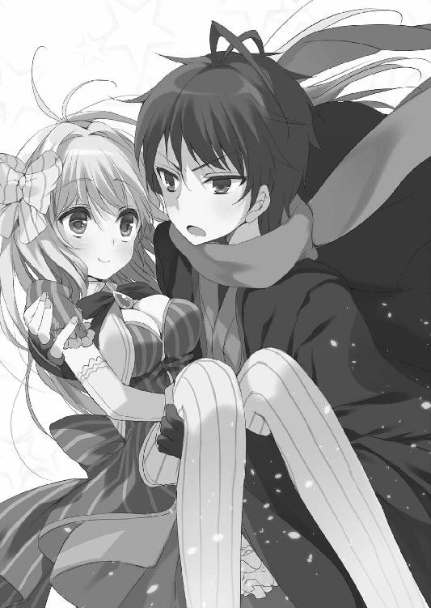
彼女は昔から、自分にとっての初めての体験を、常に大切にする少女だったのだ。
「おい、くつをぬげよ」
来日したばかりのアルセーヌは、日本では家に上がるときに靴を脱ぐなど知りもしなかった。父のもとを離れ、自慢の靴を履いたまま屋敷内を探索していたところを、屋敷の主の息子である、細い目をした少年に見咎められてしまったのだ。
その当時、少年は日本語しか使えないし、少女はフランス語しか分からなかった。従って、意思疎通が出来るはずもない。
初対面の少年の言葉に首を傾げていたアルセーヌは、いつまで経っても靴を脱ごうとしなかったため、ギロリと睨まれてしまう。そのうえ、自分の何が悪いか理解できないまま、アルセーヌの靴は少年によって無理矢理奪われてしまった。
「ドロボーさんですわ！ かえしてくださいまし、かえしてくださいまし！」
涙目で叫ぶ少女のフランス語の意味など、少年には分からない。彼は靴を盗んだまま、彼女の訴えを無視して家の奥へと進んでいく。
アルセーヌは慣れない素足で少年の後を追おうとしたが、敷居に躓き、転んでしまった。額を打ち付けた少女は泣き喚いたが、少年は相変わらず冷たい視線を寄越すだけ。
娘に甘い父ならすぐに抱き起してくれるはずが、まるでその気のない少年のすげない態度に、アルセーヌは不服そうに大粒の涙を浮かべながら手を伸ばした。
言葉は伝わらないものの、その手が催促を意味することは少年にも分かったのだろう。
「おんなになんか、さわるもんか！」
ところが彼は、手を差し伸べることなく、アルセーヌの前から去っていってしまった。アルセーヌはぴーぴーと泣きながらも、自分の靴を取り返すべく、少年の後を追う。
しかし、石川家の忍者屋敷は侵入者対策の仕掛けや罠が満載で、幼いアルセーヌが容易に踏破できる場所ではなかった。床の落とし穴に落とされたり、天井から吊るされたり、屋敷から庭に放り出されたり、挙句には池に落とされたりと、彼女はあまりに悲惨な有様になってしまう。
アルセーヌはどうして自分がこんな目にあうのか理解が出来ず、ぐずり続けた。靴を取り返すつもりが、新調したばかりのドレスはずぶ濡れのボロボロになり、お気に入りのリボンは片方どこかへ無くしてしまった。
と、罠に引っ掛かって酷い目にあっていた彼女のことをこっそりと盗み見ていた少年は、ため息交じりに池へと足を運び、彼女を引っ張り上げる。
大泥棒の跡継ぎとはいえ、目の前で小さな女の子があまりに悲惨な仕打ちを受けているのを陰から眺めていることに、気が引けたのかもしれない。彼は幼い頃から、何だかんだで面倒見の良い紳士的な少年だったのだ。
「そとにいくなら、くつをはけよ」
そしてどこかバツの悪そうな顔で、少年はアルセーヌに靴を返した。
アルセーヌは意味が分からず、さらに泣き喚くことになる。これには彼もどう接していいか分からず、渋々、本当に渋々ではあったが、こう続けた。
「もうなくんじゃない。こまったときは、ぼくがなんとかしてやるから」
「うい......？」
「やくそくだ」
少年の言葉は、やはりアルセーヌには伝わらない。
しかし、顔を赤くしてそっぽを向きながら手を差し伸べてくる少年の姿に、彼女はどうしてだか泣くのを止めていた。もしかすれば、言葉は分からなくとも、彼の言わんとしていることが理解できたのかもしれない。
「メルシー、ムッシュ」
幼いアルセーヌは涙を拭いて少年の手を取り、天使の微笑を見せた。
それが、当代のアルセーヌ・ルパンと、十四代目の石川五右衛門の、最初の出会いだった。
十年の月日が流れて再会を果たした今、五右衛門はアルセーヌのことをまるで覚えていない様子だが、彼女はしっかりと記憶していた。さらに彼女は、記憶の中の五右衛門が口にした言葉の意味も、今は正しく理解できていた。
凧に乗って空から島の景色を見下ろしながら、十七歳になったアルセーヌは、同じく十七歳に成長した五右衛門に小さな声で尋ねる。
「ムッシュはあんな昔のこと、覚えていませんわよね」
「......え？ アル、今何か言ったかい？ もう一度言ってくれないか？」
五右衛門は二人分の体重を支えた凧を操るのに必死のようで、アルセーヌの問いかけも聞こえなかったようだ。
そんな五右衛門の様子に、アルセーヌはため息をこぼす。
「メルシー、ムッシュ」
そして少女は、一生懸命な少年の横顔を盗み見ながら、もう一度小さく言葉を紡いだのだった。
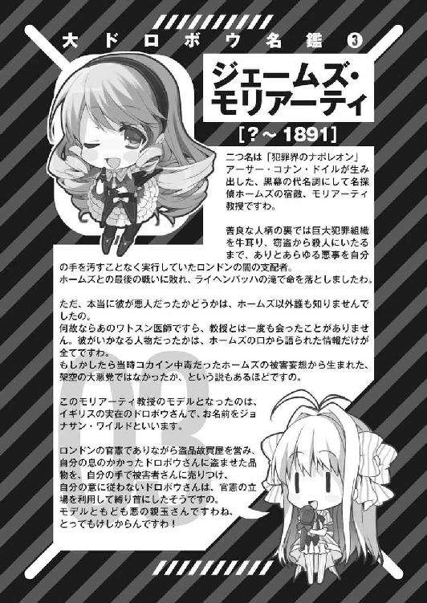
第三章 大ドロボウに乾杯
１
手を浸したくなるほどに青い空から、眩しい日差しがビーチへと降り注いでいる。
悪党の楽園のリゾートビーチでは、様々な国の悪党たちがバカンスを謳歌している。人種も肌の色も、そして犯罪の経歴も多種多様であった。
真っ当な人間がいないのは都市部もリゾート区も同様だ。何せ、ビーチにアン・ボニーの海賊船が堂々と停泊しているが、誰もがその光景を受け入れている島なのだ。
十四代目の石川五右衛門の姿は砂浜のパラソルの下にあった。水着姿でデッキチェアに寝そべり、一人ぼんやりとビーチの景色を眺めている。
「大会もあっという間に最終日......なのに僕はこんなところで何をしているんだ」
力なくそう呟いたものの、今の五右衛門には起き上がる気力もない様子だ。
クリスタルバンクの一件以降も、カリオストロ伯爵の黄金の懐中時計が保管されているとされる場所の情報は、ひっきりなしに入ってきた。
ところが、実際に忍び込んで調べてみても、そのどれもがイミテーションでしかなく、本物の時計などどこにもありはしなかった。
しかも、場所のガセ情報は決まってクリスタルバンク級の危険度を誇る犯罪組織の重要施設ばかりで、そんな危ない場所に忍び込んでは偽物を摑まされる日々がこれまで毎日続いてきたのだ。五右衛門の疲労がピークに達するのも無理はない。
「ええと、クリスタルバンクの次が、確かヤバイ薬の生産工場だったか。ディエゴが原料の畑にうっかり火を放ってしまったおかげで何とか脱出できたが、あれは本当に危なかった。その次は、武器密売の取引に使われていた地下マーケットで......これもディエゴがうっかり爆薬を誘爆させた隙に逃げ出したんだった......」
振り返ってみても、危ない橋ばかりである。そのうえ、毎日のように各国の大泥棒の末裔たちと熾烈なバトルを繰り広げているのだ。この一週間を振り返るだけでも五右衛門の顔は憔悴していく。
「ああもう、命がいくつあっても足りない。そのくせ目当ての時計はどれも偽物ばかりで、何の成果もないまま、とうとう最終日か」
せっかくの異国のビーチも、疲れ果てた五右衛門の心の癒しにはならないようだ。彼は忌々しげに青空を睨みつけていた。
本当ならバカンスに興じる暇などないのだが、本物の時計が隠されている場所の心当たりがないため仕方がない。島中の怪しい場所は大会期間中に全て忍び込んでいるうえ、参加者たちの激しい戦いのとばっちりを受けて、今や跡形も残っていないのだ。
無論こうした連日の騒動のせいで、悪党の楽園を支配している各国の犯罪組織は血眼になって大会参加者に報復しようとしている。まさに最悪の展開だ。
「このままじゃ、世界中の裏社会で指名手配されてもおかしくないぞ。あの忌々しいモリアーティが煽っているのは間違いないだろうが、どの国の犯罪組織も怒り心頭だ」
心配事が多すぎて、五右衛門の胃はいつ穴が空いてもおかしくない状況である。
では、どうしてそんな有様であるにもかかわらず五右衛門がビーチで水着姿を晒しているかというと、原因はアルセーヌにあった。マイペースな彼女は、何もすることがないのなら気分転換をしましょうと言い出したのだ。この提案を断りきれず、五右衛門はアルセーヌや鼠小僧次郎吉と一緒にリゾートビーチを訪れていた。
にもかかわらず、水着の着替えに行った二人の少女はいつまでたっても現れない。それこそが、五右衛門が一人で青空と海を憎らしげに眺めている最大の理由である。
「まったく、あの二人は何をしているんだ。もう一時間近くたつんじゃないか？」
女性の水着事情など彼に分かるはずもなかったが、さすがに着替えに一時間もかからないだろう。とうとう痺れを切らした五右衛門がデッキチェアから立ち上がろうとした、その瞬間。
「お待たせしてしまって申し訳ありませんわ、ムッシュ」
「遅れてごめんね、ごっちん」
ようやくアルセーヌと次郎吉が砂浜に姿を見せた。
文句の一つでも言ってやろうと不機嫌そうな眼差しを向けた五右衛門だったが、彼女たちの水着姿を目にした瞬間、すぐさま彼の表情は一変した。怒りの面持ちもどこへやら、呆気に取られた顔で頰を赤らめている。
「悪くないでしょ？ 合点？」
次郎吉は水玉模様のビキニ姿だ。もちろん今はほっかむりなどしていない。可愛いし、良く似合っている。幼馴染である五右衛門の目にも、異国のビーチで見る彼女の水着姿は新鮮かつ魅力的に映った。
しかし次の瞬間には、五右衛門の視線は次郎吉ではなく彼女の背後に恥ずかしげに隠れているアルセーヌへと向けられていた。
大胆にも白色のワンピース姿だ。腰から下はパレオで隠しているが、こぼれんばかりの白い胸の谷間に五右衛門の目は吸い込まれている。
「絶景かな絶景かな......」
思わず唸る五右衛門だったが、自分の失言に気付き、慌てて話題を変える。
「と、ところで二人とも。随分と時間がかかったみたいだけれど、何かあったのかい」
先ほどまでの不機嫌さはアルセーヌの水着姿のおかげですでに消え去っており、五右衛門の尋ね方はかなり穏やかだった。
「いやー、あたしも予想外だったんだけど、アルちんがね──」
「言わないでくださいまし！ 言わないでくださいまし！」
驚愕の表情を浮かべた次郎吉の口を、アルセーヌが塞ぐ。
そんな彼女たちの様子を見、そこでようやく五右衛門も違和感を覚えた。アルセーヌの水着姿を、今度はやましい気持ちを一切持たずにじろじろと観察する。
これにはアルセーヌも頰を赤らめていたが、五右衛門は彼女の恥じらいにも気付かない様子で、違和感に首を傾げている。
「もしかして......あのときは確証もなかったけれど、まさか本当に......」
唸る五右衛門が思い出していたのは、次郎吉が使っていたアルセーヌ変装セットを手に取っていたときの記憶であった。
胸の詰め物を手に、今と同じように首を捻っていた。
「ごっちん。あたしの天使が太ったなんて勘違いしてないよね」
「ふ、太っていませんわ！ 太っていませんもの！」
「でも、別の理由で水着を買い替える羽目にはなったんだけどね」
次郎吉の言葉に、アルセーヌの顔はさらに真っ赤になってしまう。一方の五右衛門は、自分の疑問に確証を得たようで、戦慄の目をアルセーヌの豊かな胸元へと向けていた。
「ま、まあ、それで時間がかかったのも納得がいったし、大胆にも白い水着なんて着ている理由にも理解が及んだ。新しい水着を買いに行っていたんだね。そして水着を選んだのはじろちゃんなんだろう」
「ウイ。水着は緑に赤にピンクと三着も用意していたのですけれど、その、あの、どれも入らなくなってしまっていて......」
胸の谷間を手で隠しながら、アルセーヌは消え入りそうな声で答えた。
「むう......育ち盛り恐るべし。これが鼠小僧とルパンの格の違いなんだろうか」
次郎吉は自分のスレンダーな胸元にしょんぼりと手を当て、アルセーヌへと畏敬の眼差しを向けている。
「べ、別にルパンの血は関係ありません......と思いたいのですけれど」
そう、全ての原因は、アルセーヌのたわわな胸が現在進行形で育っていることにある。
だからこそ、一週間以上前の彼女の胸のサイズを忠実に再現した変装セットの胸の詰め物は今や用をなしておらず、実家から持ち込んできた水着もサイズが合わなかったのだ。
「ムッシュ五右衛門！ 先ほどからわたくしの胸を見過ぎです！」
とうとうアルセーヌは怒りの面持ちで五右衛門に向かって吠えた。
「ああいや、本当にすまない。しかし、ただでさえ大きいのにさらに大きくなるのか......女の子の体は凄いな......」
「ムッシュしつこい！」
「ごっちん。ただでさえ大きくないのにこれ以上大きくなる見込みもない女の子はダメな意味で凄いの？」
素直に感心していた五右衛門だが、女性陣からの冷たい目に自ら口をつぐむ。
「でも、ほんと何でこんなに大きく育つんだろう。アルちん、揉んでいい？」
「マドモアゼル次郎吉も話を蒸し返さないでくださいまし！」
三人が周囲の目も気にせずビーチで騒いでいる中、彼らへと一人の青年が歩み寄ってきた。
「ブエナス・タルデス！ アンタらはどこにいてもすぐに分かるなアミーゴ！」
陽気な調子で近付いてきたのは、同じく水着姿のドン・ディエゴだった。
「これはこれは、水着姿も眩しい素敵なセニョリータたちだ。挨拶が遅れて失礼。いやあ、両手に華とは羨ましいぜフランシス」
馴れ馴れしいディエゴの態度に、すでに慣れているアルセーヌは軽く会釈を返す程度だったが、これが初対面となる次郎吉は外国人相手に強く出られずに隠れてしまった。
「おっと初めましての奥ゆかしい大和撫子がいるじゃないか。よければ連絡先を教えてくれないか？」
そんな次郎吉へと白い歯を見せて笑顔を向けるディエゴだったが、幼馴染を守るかのように五右衛門が割って入った。
「相変わらずふざけたヤツだ。大体ディエゴ、キミだってさっきまで女の子たちと一緒だっただろう」
「あれ？ 見てた？」
「ああ。お団子頭の中華娘は梁山泊頭領の宋江、褐色肌の美少女はインドの盗賊女王プーラン・デーヴィーだな。いつの間に僕ら以外の参加者ともお近づきに？」
五右衛門も愚痴だけで時間を潰していたわけではないらしい。ビーチの一角に見知った面々を見つけ、遠巻きに観察していたようだ。
「ハハハ。可愛い女の子を口説くのは家訓のせいだ。大目に見てくれ」
「泥棒の家訓がそれでいいのか」
「初代ドン・ディエゴは、マスクを着けないと恋の駆け引きもロクに出来ないことで有名だったからな。彼の嫁さんは気が強かったらしく、女の子は必ず情熱的に口説けって家訓が出来たのさ」
「......マスク？」
ディエゴの台詞を聞き、五右衛門が僅かに眉をひそめた。
次いで、ディエゴに対し今度はアルセーヌが口を開く。
「そういえば先日わたくしも目にしたのですけれど、オーストラリアのネッド・ケリー氏や、イタリアのサルヴァトーレ・ジュリアーノ氏ともあなた様は親しげでしたわね」
「おいおい、男も口説くのか」
「勘弁してくれ二人とも！ そっちの連中とは、そのなんだ、酒場で意気投合しただけだって」
笑い飛ばすディエゴだが、どこか話を紛らわせようとしている様にも見える。
少なくとも、彼が五右衛門やアルセーヌだけではなく、他の大会参加者たちとも接触しているのは間違いない。お調子者を演じているが、そんなディエゴへと向けられた五右衛門の目には疑念の色があった。
「あたし、女の子の扱いが上手そうな男の人は苦手......」
意味合いは違うが次郎吉もディエゴのことを警戒しているようで、鼠小僧ともあろう者がすっかり借りてきた猫状態だ。
「ハローエブリバディ！ ねー、そんなところで集まって何をしているのさ」
そこへさらに追加で五右衛門たちへと近付いてくる人影があった。
聞き覚えのある少女の声に一同が恐る恐る振り向いてみれば、背後に立っていたのはジェシー・ジェイムズであった。
ギラギラとした太陽の日差しの下では、ジェシーも普段のシスター服ではなく水着に着替えている。それも、布面積の極端に少ない星条旗柄のビキニだ。
目つきとは別の意味で凶悪なダイナマイトバディは、彼女が聖職者であることを忘れさせるほどで、あのアルセーヌでさえ比べる相手が悪かったとしか言いようがない。
「シスター服の下にそれほどのものを隠していただなんて！」
「上には上がいる......あたしはこれから下だけを向いて生きていこう」
「おおおおお！ ファンタスティコ！」
あまりの強敵を前にアルセーヌと次郎吉が恐怖さえ感じている一方で、ディエゴは感動の面持ちでジェシーの肢体を拝んでいる。
「ジェシー・ジェイムズが出たぞーッ！」
そんな中、突如として五右衛門の叫びがビーチに響き渡った。
途端、砂浜の四方八方から、水着姿の賞金稼ぎたちが怒濤の勢いで押し寄せてくる。
「んぎゃー！ 何でバラしちゃうんだよ！ ちくしょー、知り合いを見つけたからサンオイル塗ってもらおうと思っただけなのにさー！」
ジェシーは三白眼で五右衛門を睨みつけた後、すぐさま踵を返してビーチから全速力で逃げ出してしまった。無論、賞金稼ぎたちもまた彼女を追って駆け出していく。
クリスタルバンク襲撃の一件以来、銀行強盗犯ジェシー・ジェイムズの手配書は島中で出回っているのだ。その首には生死問わず多額の賞金がかけられており、フリーランスの賞金稼ぎや犯罪組織の手先たちが常に目を光らせているのである。
「なんて余計な真似を！ あのままなら、オレが彼女の体に万遍なくサンオイルを塗れたかもしれないってのに！ フランシスはあの胸の谷間を見て何も感じなかったのか！」
五右衛門の機転で危険人物を遠ざけることが出来たというのに、ディエゴは血涙を流しかねない勢いで五右衛門を睨みつけた。
「うるさい。これ以上騒がれて人目につくのは勘弁なんでね。それでなくとも銀行での一件以降、僕は洪吉童に目の敵にされて困っているんだ。この調子だとあいつまで出張ってくるかも知れないじゃないか」
仲良く浮き輪に空気を入れ始めたアルセーヌと次郎吉を尻目に、五右衛門は絡んでくるディエゴを手で追い払う。
「つれないなアミーゴ。まあ、綺麗なセニョリータを二人もはべらせているフランシスにはオレの悩みなんて分からないだろうぜ」
ディエゴは口を尖らせたまま、近くの露店で買ってきたと思しきクッキーが入った包みを取り出す。そこには、マーヤのクッキーという商品名がプリントされていた。
「ん？ おい、それ......」
そのラベルを見て五右衛門が何か言おうとした寸前、ディエゴは包みの中のクッキーを一つ摘まんで自分の口へと放り込んでいた。
「ぼりぼり。なんか変な味だな......ん？ どうしたフランシス」
「いや、まあ。言うのが遅れてしまって申し訳ないんだが、そのマーヤ・クッキーって、いつかの工場で見かけた包みだったような......そう確かヤバげな薬入りの......」
五右衛門の言葉にディエゴの顔は見る見るうちに青ざめていく。慌てて吐き出そうと試みていたが、生憎とすでに吞み込んでしまった後のようだ。
「どうしてそんなものが露店で売っているんですの？」
「アルちん。ここは悪党の楽園だからね、見かけは華やかで綺麗な島だけど、やっぱり悪いことする人間ばっかり居るんだよ」
膨らませた浮き輪を抱えて首を傾げるアルセーヌの疑問に、次郎吉が答えていた。
今はすでに跡地になってしまっているが、つい先日まで悪党の楽園には非合法な薬の生産工場があり、そこで製造された物品は各国に流されていた。ディエゴが利用した露店は、売り物にならない不良品を現地の住民相手にさばいていた店だったのだろう。
「く、くそっ、せっかくどさくさに紛れて生産工場を潰したのに......」
意識が混濁している様子のディエゴが何事か呟いたが、ろれつが回っていなかったせいで五右衛門たちにも聞き取れなかった。
「ほら、伊賀忍者秘伝の解毒剤だ。これを使ってみろ」
ディエゴの醜態にため息をこぼした五右衛門が、パラソルの下の荷物から丸薬を取り出す。すると、先ほどから目の焦点が合わなくなっていたディエゴが突如として頰を赤らめ、愛しげに五右衛門へと抱きついた。
「ありがとうセニョリータ。どこのどなたかは知らないが、オレのためにそこまでしてくれるなんて感動だぜ。そうだ、お礼にこのサンオイルを塗ってあげよう」
ジェシーが落としていったサンオイルの瓶を拾い上げたディエゴは、熱に浮かされた顔で五右衛門を無理矢理デッキチェアに押し倒そうとする。
「わー！ どうしたディエゴ！ 何が見えているっていうんだ、正気を取り戻せ！」
「おいおい、ブラはどうしたんだ？ トップレスでビーチにいるなんて、いけないセニョリータだ」
突然のディエゴの奇行に、五右衛門は顔面蒼白になって悲鳴を上げた。一方、ディエゴの目は完全にイってしまっている。ないしょのお薬のせいでラリっているのだ。
「何も見えませんわー」
「アルちんは見なくていい。天使には目の毒だよ」
半裸の男二人の絡みを尻目に、次郎吉はアルセーヌの目を両手で塞いでいる。
「じろちゃん！ 見てないで助けてくれ！ 解毒剤をこの色ボケの口にねじ込め！」
「いいけど追加報酬で千両箱ひとつ追加ね」
「鬼か！」
忍者の体術を駆使して脱出を図る五右衛門だが、ディエゴは巧みなテクニックでマウントポジションを維持し、五右衛門の体を押さえつける。
このままでは人生初のサンオイルイベントを男相手に経験することになってしまうという事実に、五右衛門が震え上がったその瞬間。
今まで発情期の狐のような顔をしていたディエゴは、唐突に顔を上げ、ビーチの一角にいくつも植えられていた巨大な果樹へと視線を移す。
「なんだありゃ。まさか悪党の楽園に、ロケット発射基地があったなんて」
「は？」
「おーおー、見てみろよセニョリータ、ほーら、ロケットが次々飛んでいくぜー」
無論、樹が空に向かって飛んでいくはずもない。ディエゴは先ほどから幻覚を見ているのだ。大方、五右衛門のことも美少女か何かに見えていたに違いない。
空高く雄大に打ち上げられていくロケットの群れの幻覚を指差し、ディエゴは虚ろな顔で半笑いを続けている。
「まーがれ！ おおっ、本当に曲がりやがった。いやー、ロケットって曲がるのなー」
そうして彼は、虚空を指差しながらとうとうその場にひっくり返ってしまった。
解放された五右衛門は、額に浮かんだ冷や汗を拭いながら、よろよろと身を起こす。
「......どうやら薬が完全にまわったみたいだな。すっかり忘れていたが、ここは本当に危険と隣り合わせのタチの悪い島だ。まさか露店でこんなものを売っているとはね」
五右衛門は、泡を吹いて倒れているディエゴの口に解毒剤を放り込んだ後、砂浜に落ちていたマーヤ・クッキーを包み紙ごと踏み潰した。
「もういいですのー？」
「まーだだよー」
アルセーヌと次郎吉は未だに目隠しを続けていた。
「──この島も、最初からタチの悪い島だったわけじゃない」
不意にディエゴが呻き声を漏らしたが、今も意識は朦朧としている様子で、その呟きも無意識のうちに口にした言葉のようだ。
五右衛門がディエゴの呟きに首を傾げている中、目隠しから解放されたアルセーヌが声を弾ませる。
「ムッシュ、どうやら到着したようですわよ」
彼女が指差しているのは海上の方角だ。そこには、悪党の楽園へと近付いてくる巨大な豪華客船の姿が浮かんでいた。
束の間の休息の終了を合図するかのような汽笛の音が、ビーチにまで届く。
「あれが閉会式の会場になる、ビッグ・ベル号ですわ」
青い海の上で真っ白な威容を見せる豪華客船を前に、五右衛門は大会の終わりが近いことを痛感させられ、大きくため息をこぼした。
２
豪華客船ビッグ・ベル号が悪党の楽園の港に到着した後、五右衛門たちはビーチでのバカンスを早めに切り上げ、搭乗客の乗り入れ開始を待った。
陽が落ちた後、大会参加者たちは船に乗り込む手筈になっている。予定されている閉会式の内容は分からないが、そこで優勝者が発表されるのは間違いない。
「今日の日付変更とともにタイムリミットだ。それまでに本物の時計を手に入れなければならないのに、生憎とめぼしい場所はすでに調べ終えてしまっている」
「調べ終わっているというより、潰し終えていると言ったほうが正しいですわね」
五右衛門とアルセーヌは今、次郎吉を隠れ家に残し、ビッグ・ベル号の搭乗客の列に並んでいた。もちろん、居並ぶ客は前も後ろも全員大会参加者たちである。賞金稼ぎたちの手を逃れたジェシー・ジェイムズの無事な姿を始め、中国代表の宋江や、オーストラリア代表のネッド・ケリーのロボットじみた巨体も見受けられた。
「アル。このビッグ・ベル号が最後のチャンスだ。もちろん、他の大会参加者たちも同様の考えだろう」
「どういうことですの？」
「いくら島を捜そうと本物の時計は出てこなかった。つまり、本物はすでに誰かが手に入れてしまっているのか、あるいは最初から島のどこにも無かったことになる。だが、閉会式会場であるビッグ・ベル号には、必ずある」
断言する五右衛門を前に、アルセーヌは理解が及ばず首を傾げる。
「閉会式で優勝者が決まるなら、誰かが本物の時計を船に持ち込まなければならないはずさ。そうでなければ勝利の証明にならないからね」
「では、まだ望みはありますのね？」
「そうとも。別の参加者が手に入れていようが、大会の主催者がキミの家から盗み出したまま隠し持っていようが、必ず船のどこかに本物の黄金の懐中時計が存在していることになる」
五右衛門の言葉に励まされ、アルセーヌが笑顔を取り戻す。
そうして列が進み、ビッグ・ベル号に乗船した後、アルセーヌは閉会式が行われる中央の大ホールに留まった。嫌でも目立ってしまう彼女は、他の大会参加者たちの注意を引くための囮を自ら選んだのだ。
アルセーヌが参加者たちを引き付けているうちに、五右衛門は閉会式が始まるまでの僅かな時間、一人で船の要所に忍び込むことにした。
豪華客船だけあって、船のスタッフは各所に大勢配置されていた。人数の動員ぶりに、五右衛門は首を傾げる。大規模な大会とはいえ、主催者が用意した人員が多すぎるように思えたのだ。
船長室、機関室、来賓室と、順々に忍び込んでいく五右衛門だったが、人の目が多すぎて露骨に時計を捜し回ることは出来なかった。
「少年、そんなところで何をしているのかね」
不意に聞こえてきた声に五右衛門の体が強張る。
人目につかないよう最大限に気を付けていたにもかかわらず、ついに彼の存在を気取った人間が現れたのだ。五右衛門は目撃者を昏倒させるべく、その場ですぐさま身構えた。
だが、いつまでたっても声の主は姿を現さない。
「あー、こっちだこっち。この独房の中だよ」
耳を澄ませてみれば、航海中によからぬ者を隔離しておくための独房から、確かに男の声がしていた。
「馬鹿な。姿を見られたのならともかく、完全に消しているはずの僕の足音と気配に気付けるヤツがいるだって？」
五右衛門は自分の耳を疑いながらも、注意深く独房の扉へと近付く。さらに驚くべきことに、独房であるにもかかわらず扉の鍵は開いていた。
中にいたのは、赤ワインを片手に優雅にくつろぐ金髪の中年男であった。
「よく来てくれた。本当なら、ここから出してくれと訴えるべきなのだろうが、その必要はない。私はいつでも自分の好きなときにここから抜け出せられるからね」
テーブルの上のワインや食事といい、紳士に恥じない身なりのいい服装といい、どう見ても投獄されている人物とは思えない。髭も毎日剃っているようだし、そのうえ腰には独房の鍵を吊るしている。
どうやら男の言葉に噓はないらしい。ワインや食事、着替えや剃刀や鍵、それらは全て彼がこの独房を抜け出して調達してきた物なのだろう。
呆れた眼差しを向ける五右衛門の顔を見、男は口を開く。
「ん？ 少年のことは開会セレモニーで見かけた記憶があるな。確か十四代目の石川五右衛門と名乗っていた覚えがある」
「セレモニー会場？ まさか大会参加者か？」
「大会関係者ではあるが参加者ではないな。まあ、あのときは顔を隠していたから分からないのも無理はあるまい。私はあの場で司会者として壇上に立っていた男だよ」
男の正体を知り、五右衛門は警戒を強める。
「そうか......。確かに僕は当代の石川五右衛門、お前たちの主催した大会に日本代表として選ばれた泥棒さ」
「私のことは、そうだな、とりあえずエドガーとでも呼んでくれたまえ。これでも一応は監禁されている身分なのでね。殊勝に投獄生活を満喫させてもらっているのだよ」
言って、エドガーは金髪をかきあげ、あくまで上品にワイングラスを傾けた。
「エドガー。一つ質問があるんだが、大会の主催側の人間がどうしてこんなところに？ いやまあ、閉じ込められているようには見えないが」
「主催側、という言い方はいささか正しくないな。何故なら私こそが今回の世界大泥棒選手権の主催者なのだから」
エドガーの言葉に、五右衛門は驚きに片目を薄っすらと見開く。
「主催者本人だと？ なら、尚更どうしてこんなところに？」
「フー。言い辛いことなのだが、あの大会は余所者に乗っ取られてしまったのだよ」
「の、乗っ取られただって！」
今度こそ五右衛門は言葉を失った。
「その通りだ少年。私は先週の開会セレモニーの後すぐさま捕らえられ、この船に監禁されて今日まで島から遠ざけられていたのだ」
エドガーはワイングラスをテーブルに置くと、苦々しげな顔で悩ましげに腕を組んだ。しかし本当に困っている風には見えず、一種の余裕さえ感じられた。
「じゃ、じゃあ、主催者が不在のまま、僕らは大会を続けていたのか？ なるほど、それなら確かにこの一週間好き勝手をしていた連中が失格にならなかった理由も分かるが、しかし誰が大会の乗っ取りなんか仕出かしたんだ？」
「私も本人の顔を見たわけではないのだが、どうやらこの大会、招待されていないはずの何者かが紛れ込んでいるようだな。私をここに閉じ込めたのもそいつの仕業だ」
「何者か？」
「ああ。我々と同じ泥棒ではない、何者かだ」
五右衛門の脳裏には、すぐさま一人の心当たりが浮かんだ。
「そうか、それなら彼の今までの行動にも合点がいく。エドガー、僕には一人思い当たる人物がいる。お前が本当に主催者なら、招待状を誰に出したか憶えているな？」
「当たり前だろう」
「おそらくドン・ディエゴだ。狙いは分からないが、彼は本来のスペイン代表からその立場を奪い取り、正体を隠して大会に参加したんだ」
未だにスペイン代表のドン・ディエゴという名の泥棒についての正体が分からないままであることも理由の一つだが、五右衛門はそれ以上に、大会期間中の彼の動きが怪しいと常々思っていた。
何せディエゴは、忍び込んだ犯罪組織の重要施設のことごとくを、うっかりと称して破壊して回っているのだ。本人は白々しくも偶然を装っているが、それで騙されるのはアルセーヌくらいのものだろう。
そのうえ彼は、五右衛門やアルセーヌだけでなく、他の大会参加者たちとも頻繁に接触を行っている。それこそ、まるでスパイのように。泥棒ではない参加者が紛れ込んでいると考えるならば、ディエゴ以外にありえない。それが五右衛門の推論だった。
しかし、その確信はエドガーの笑い声で打ち砕かれる。
「ハハハ。残念だが、私は確かにドン・ディエゴに招待状を送ったよ。スペインを代表する泥棒となると、それは彼以外にありえない」
「なんだって？」
「彼はかの有名な、カピストラノの疫病神だ。悪党から武器や金品宝石を奪い去る、凄腕の追い剝ぎなのだよ。これは自信を持って言えることだが、彼はアルセーヌ・ルパンに比肩しうる、もう一人の怪盗紳士と呼ぶべき偉大な大泥棒だ」
エドガーの言葉は、かつてディエゴ自身がほのめかしていた台詞と同じ内容だった。
「カピストラノの疫病神？」
聞き覚えのない二つ名に五右衛門は眉をひそめたが、エドガーもそれ以上は口にするつもりがないのか、ニヤニヤと人の悪い笑みを浮かべて五右衛門の様子を窺っている。
「とはいえ確かに、聞く限りでは当代の疫病神の行動には疑問を感じるな。どうも彼には、この大会とは別の目的があるようだ」
「目的？ 何だそれは」
「それは本人に聞いてみたまえ。君と彼には共通点がある、きっと教えてくれるだろう」
はぐらかすかのようなエドガーの態度に、五右衛門としては苛立ちが募っていく。彼はどこか八つ当たり気味に話題を戻した。
「しかしディエゴではないのなら、心当たりはもうないな」
「少年、諦めるのが早いぞ。他にいないのか、私の留守中にこの大会を引っ搔き回していた泥棒は？」
エドガーのさらなる問いかけに、五右衛門の脳裏を三人の人物がよぎった。
まずは先ほども名を挙げたドン・ディエゴ。だが主催者のエドガーは、彼がれっきとした泥棒の末裔だと言い切った。
次に思い浮かんだのは、誰あろうパートナーのアルセーヌ・ルパン。泥棒としてはまったくの素人である彼女の破天荒な行動は、五右衛門だけでなく他の参加者たちの度肝を抜くことも多かった。
そして最後は、島中の犯罪組織に顔が利き、これまで偽物の時計を何度となく奪い合った人物。彼女はいつも嬉々として大会をゲームに見立てて興じ、無駄足を踏むことになっても愉快そうに姿をくらませてきた。
「後は、そうだな......モリアーティくらいか」
五右衛門が口にした名前に、今度はエドガーが驚いた。
「おい、モリアーティとは、まさかあのモリアーティ教授のことか」
「そのモリアーティだ。子孫の少女がイギリス代表として大会に参加している」
「おいおい、イギリスの泥棒と言えばロビン・フッドだろう。私は彼の末裔を招待したはずだ。何が悲しくて犯罪界のナポレオンなど指名しなければならないんだ」
エドガーは呆れたように答えるも、満足げに頷く。
「決まりだな、黒幕はモリアーティだ。成程成程、さもありなん。何せ相手は、まさに黒幕の代名詞ともいうべき人物だ」
だが、彼は急にその表情を曇らせた。
「待てよ......イギリス、ロンドン、モリアーティ？ いやいやいや、これは不味い。もしかするともしかするぞ。一度は私を出し抜いている時点で、可能性は考慮すべきだ」
そうしてエドガーは、五右衛門が疑問を口にする間もなく椅子から立ち上がると、手早く身支度を済ませてしまった。
「少年、私は気が変わった。どうやらこの船に残っているのは危険のようだ。なので私はすぐにでもここを発たなければいけない。脱獄することにするよ」
「脱獄って、おい、大会の閉会式はどうするんだ？ お前が主催者なんだろう？」
「すでに主導権は私にはない。その閉会式とやらも、おそらくモリアーティが何かを企んでいるはずだ。そして、黄金の懐中時計もそのモリアーティが持っているに違いない。ここに捕らえられたときに奪われてしまったからな」
「つまり、この船そのものがモリアーティの罠だと？」
「そういうことになるな。少年、逃げるなら一緒に行くかね？」
エドガーの提案に、五右衛門は首を横に振った。大ホールでは、アルセーヌが今も彼の帰りを待っているからだ。
「いいや、僕はここに残る。このままモリアーティに出し抜かれるのも御免だ。石川五右衛門の名を世界に知らしめるため、必ず黄金の懐中時計を手に入れてみせる」
あえて罠に飛び込もうとする五右衛門の姿に、エドガーは軽く肩をすくめてみせる。
「若いな。そうまでして世界一の大泥棒の座が欲しいのか？」
「もちろんだ。でも、それ以上に大切なことがある。船内に仲間がまだ残っているんだ。一途に僕を信じてくれている彼女を守り抜くこと、そして彼女の目的を共に果たすことが、今の僕の使命だ」
「フフ、それでこそ石川五右衛門の息子だ。健闘を祈っているよ」
そう言ってエドガーは笑みを深め、独房の外へと出て、五右衛門に背を向けた。
「まさか、僕の父上を知っているのか？」
「知っているさ。十三代目とは何度か手を組んだことがある。もっとも、知り合ったときは敵同士だったがね。そうそう、以前この島で行われた前大会でもそうだった」
エドガーは微かに振り返り、年配の紳士とは思えない、やんちゃな表情を覗かせた。
「......お前は一体何者だ？ そもそも、アルセーヌ・ルパンの屋敷から黄金の懐中時計を盗み出したのは、本当にお前なのか？」
「これは妙なことを聞く。ルパンの宝物庫に自由自在に入り込むことの出来る人物など、世界にたった一人しかいない。それはアルセーヌ・ルパン本人だ」
「え？」
「悪党の楽園で世界大泥棒選手権が何度も行われてきたのは有名な話だ。もっとも、優勝者が次の大会の主催者を務めるという伝統は、知っている人間も少ないがね」
闇の中へとエドガーは姿を消す。去り際の彼の一言は、五右衛門をさらに驚かせた。
「私の可愛い娘を頼んだ。あばよ、五右衛門」
五右衛門は慌ててエドガーを呼び止めようとしたが、すでに金髪の男の姿はどこにもなかった。忍者である五右衛門を完全に煙に巻くなど、並の泥棒に出来る芸当ではない。
「まさか今の男が、先代の──」
熱に浮かされたかのような五右衛門の呟きは、天井越しに頭上のフロアから響く騒々しい靴音にかき消された。同時に、船が大きく揺れ始める。どうやらビッグ・ベル号が出航を始めてしまったらしい。
と、独房の中から、何やら騒がしい声が聞こえ始めた。
無論、エドガーが去った今、独房には誰もいないのは確かだ。五右衛門が訝しげに室内へと入り込んだところ、何とエドガーの座っていた椅子の向かいにモニターが設置されており、そこから音声が聞こえていた。
映し出されていたのは、客船の各所に設置されていると思しき監視カメラの映像だった。おそらくエドガーが監視システムをハッキングして映像を盗み見ていたのだろう。
とはいえ、五右衛門を驚かせたのは別にそのことではなかった。
ビッグ・ベル号の出航と同時にモリアーティ率いる各国の犯罪組織が行動を起こしたらしく、大ホールは今や完全に彼らによって占拠されていたのだ。いかな大会参加者たちとはいえ、四方八方から銃口を突き付けられている状況では降参せざるを得ない。
犯罪組織集団の先頭に立っている人物に、五右衛門は見覚えがあった。見かけ倒しの強面は、クリスタルバンクの支配人を務めていた男である。
「この豪華客船のスタッフ全てが、各国の犯罪組織の構成員だったのか」
見れば、映像の中にはボスや幹部と思しき重鎮の姿さえある。今まで大会参加者たちに酷い目にあわされ続けてきた悪党たちが結託しているのだ。泥棒たちに楽園を荒らされコケにされ続けてきた以上、各組織も下っ端に任しておくだけでは沽券に関わるのだろう。
そして、重鎮たちの集まっている場所には、満面の笑みを浮かべて勝ち誇るモリアーティの姿もあった。閉会式をダシに泥棒たちをこの船に集めたのが彼女の仕業なら、こうして犯罪組織の重鎮が勢揃いしているのも彼女の手引きによるものだろう。
「あくまでモリアーティは犯罪組織側の人間だ。今まで騒ぎを起こしてきた僕らを捕まえれば、組織内で大きな手柄になるということか？」
納得しかけた五右衛門だが、不意に眉をひそめた。
「待てよ......本物の時計を彼女が持っているのなら、今まで偽物の時計を用意し、その情報を流していたのも彼女のはずだ。ならどうしてモリアーティは、偽の時計を犯罪組織の重要施設に隠していたんだ？ わざわざクリスタルバンクみたいな場所に隠して騒動を起こさせなくても、犯罪組織側にとって都合のいい場所で良かったはずじゃないか」
五右衛門が眉をひそめた瞬間、映像の中で大会参加者たちが反撃に打って出た。洪吉童の仙術や、ネッド・ケリーの鎧の各部から発せられたスモークによって、見る見る間に大ホールの隅々を煙が満たしていく。
こうなっては各犯罪組織も同士討ちを恐れて銃は使えないだろうし、これだけの隙があれば、世界各国の大泥棒の子孫である大会参加者たちにとって、包囲網から逃げ出すことなど容易のはず。問題は、大ホールで待っていたであろう素人のアルセーヌだ。
「アル、僕が駆けつけるまで無事でいてくれ！」
五右衛門は大会参加者たちの反撃に感謝しつつ、祈るような気持ちで独房を発った。そうして、彼はまさしく疾風のような速さで船内通路を駆け抜けていく。
すでに大会参加者たちの脱走は船内全ての犯罪組織メンバーに連絡されているらしく、構成員たちは銃火器で武装し、船内各所の至るところで次々と姿を見せ始めていた。通路の曲がり角で五右衛門と鉢合わせた彼らは、早速持っていたマシンガンで発砲を試みた。
しかし、五右衛門は重力を無視したかの如き身のこなしで天井に張り付き、暴力的な銃撃の全てを回避すると、構成員たちの背後へと着地しつつ彼らの後頭部に一撃をお見舞いして昏倒させた。
「雑魚が。アルに指一本でも触れてみろ、指の骨を全て叩き折ってやるからな」
いつになくダーティな一面を見せると、五右衛門は気絶する構成員たちを置き去りに再び駆け出した。
だが、血眼になってアルセーヌを捜してみたものの、船内を駆けずり回っているにもかかわらず成果は無かった。足音を立てて走っているのは、アルセーヌを発見できずにいる焦燥感のせいだろう。
「フランシス！ 危ない！」
焦りが隙を生み、五右衛門は物陰に隠れていた別の構成員に気付かなかった。間一髪で敵を打ち据えて五右衛門のピンチを救ったのは、ドン・ディエゴであった。
「ディエゴか。キミも無事だったんだな」
ディエゴは黒いマント姿で、手には細身の剣を持っている。普段のお調子者然とした軽薄な態度と違い、いつになく物々しい格好であった。
「お互い無事で何よりだ。それより、セニョリータ・ルパンは一緒じゃないのか？」
「そっちも知らないのか。くそ、役立たずめ」
「つれないなアミーゴ」
軽口を叩く五右衛門とディエゴだが、騒ぎを聞きつけた他の構成員たちが続々と二人のもとへと押し寄せてきていた。
「敵は七人だ。僕は右側から来る三人を片付ける！」
「つまりオレが残りの四人をどうにかしなきゃいけないってことかオイ！」
口ではそう言いつつも、二人は瞬時に敵へと襲い掛かっていく。
だが、彼らの攻撃が届く前に構成員たちは地に伏した。五右衛門が狙っていた三人は、横合いから乱入してきたジェシー・ジェイムズの銃撃を食らって負傷し、残る四人も神出鬼没の洪吉童によって音もなく片付けられていた。
「なーなー、この状況どうなってるのさ。閉会式は？ 大会の優勝者は？」
硝煙の臭いのこびりついたシスター服の裾を翻し、ジェシーが五右衛門たちへと近付いてくる。
「セニョリータ、今はそれどころじゃないぜ。この船から生きて脱出したいなら、全員で手を組まなきゃな」
ディエゴは剣を腰に吊るしながら、困ったように頭をかいた。
「手を組むだって？ 僕はこいつとは性が合わない」
「俺としてもパクリ野郎と共闘は御免こうむる」
五右衛門と洪吉童の犬猿の仲は相変わらずで、火花を散らして睨み合いを始めてしまっていた。
「パクリねえ......それを言い出すと、石川五右衛門も洪吉童も、ある意味じゃ中国の宋江のパクリになるんじゃないか？ 何せ奴さんは参加者の中でも屈指の古株だぜ」
仲介をするかのように、二人の間にディエゴが割って入る。
「ぐっ......」
「うぬぬ......」
「その宋江だが、あっちはあっちでネッド・ケリーやサルヴァトーレ、プーランと一緒に別の場所で騒ぎを大きくしてくれている。こっちもオレたち四人で大暴れでもして、敵の足並みを乱さないとな」
「でもさー、お互い主義主張も違う泥棒同士、つるむのは面倒くさそうじゃん。アタシはアタシで勝手にやってこの船からおさらばしたいんだけどさー」
ディエゴの言葉に真っ先に難色を示したのは、ジェシーだった。
「同感だ。俺も一人が性に合っている。足手まといは必要ない」
次いで洪吉童も五右衛門を一瞥し、腹立たしげに鼻を鳴らした。
「主義主張が違う？ いいや、その心配はないぜアミーゴ。何故ならオレたちには共通点があるからな。もちろんここにいる四人だけじゃない。さっき名前を挙げた宋江たちもそうだし、ここにはいないがアルセーヌ・ルパンもそうだ」
別行動を取ろうとするジェシーと洪吉童を引き留めるディエゴに対し、五右衛門は僅かに首を傾げる。
「そう言えば最初に会ったときもそう口にしていたな。国も人種も犯罪の経歴も違う僕ら泥棒の末裔に、一体どういう共通点があるっていうんだ？」
「いい質問だフランシス。それはだな──」
ディエゴが口を開こうとした瞬間、新手の大部隊が通路の向こうから姿を現した。各組織の重鎮も数人見受けられるところから、どうやら敵の本隊のようだ。
敵は未だ遠く、瞬時に物陰に隠れた五右衛門たちに気付いていないものの、大人数かつ全員が強力な銃火器で武装していた。
「あちゃー、こりゃまずい。アタシ、いち抜けたーっと」
その様子を目にして一目散に逃げ出そうとしたジェシーだったが、ディエゴは彼女の肩に手を置き、逃走を阻む。
「セニョリータ。銀行強盗の際に言っていただろう、盗むなら相手は労働者や貴婦人ではなく、シルクハットの紳士からだと。オレは感服したぜ。やはりアメリカ人には自由を愛する意志と精神がある」
「あん？ こんなときに何を言い出すのさ」
「それこそがオレたちの共通点だ。初代石川五右衛門もジェシー・ジェイムズも洪吉童も、弱い立場の人々からは何も盗まなかった。オレたちの祖先は、誇り高き義賊だった」
ディエゴの言葉に、他の三人は思わず顔を見合わせた。
誇らしげに語ったディエゴへと、まず五右衛門が口を挟む。
「ジェシー・ジェイムズも義賊なのか？ だって凶悪な銀行強盗犯なんだろう？」
「そりゃどういう意味だってのさ！ 初代ジェシーが襲った当時の銀行は、裕福な権力者の資産を守るためのものだったんだぞ！ それを襲って金品を民衆に分け与えたんだ、アメリカでは今も人気者なんだからなー！」
「そ、そうなのか。いや、ごめん。知らなかった」
ジェシーに肘鉄を食らわされつつも五右衛門が素直に頭を下げる一方で、洪吉童もまた、五右衛門を胡散臭げに睨みながら口を開く。
「初代洪吉童はともかく、石川五右衛門は大悪人だったと聞いているがな」
「義賊はいつの世も、時の為政者にとっては悪党でしかない。今の初代ジェシーの話もそうだし、オレの祖先も疫病神呼ばわりされた。初代五右衛門が釜茹での刑で処刑されたのも、大きな戦争を起こした為政者を暗殺しようとしたからだと知っていたか？」
「フン、その挙句に捕まって殺されたのか。無様な負け犬だな」
「何だと、もう一度言ってみろ！」
いがみ合う洪吉童と五右衛門を両手で制し、ディエゴは洪吉童に言い聞かせるように言葉を続ける。
「彼が命を狙った相手の名は豊臣秀吉。二度にわたり朝鮮出兵を行った男だ。初代五右衛門による暗殺が成功していれば、二度目の戦争は起きなかった。失敗してしまったものの、彼の行いはアンタの故郷を守ることにも繫がったはずなんじゃないか？」
その言葉を聞き、洪吉童は驚きの面持ちで五右衛門の顔を盗み見る。
五右衛門は洪吉童へと怒りの眼差しを向けていたが、今は互いに争っている場合ではないことくらい分かっているのだろう、憤りを抑えてディエゴへと向き直った。
「ディエゴ。キミの目的はなんだ？ 何のために悪党の楽園にやって来た？」
「オレの目的は最初から一つだよ。あの島で最も価値ある宝だ」
「お宝っ？」
「宝だと？」
ディエゴの返答に、ジェシーは瞳を輝かせ、洪吉童も顔を上げる。
「それは、悪党の楽園なんていう不名誉な名を与えられたあの島そのものだ。アンタたちはあの島が最初から悪党の楽園だなんて思っていたか？ いいや、大きな間違いだぜ。その昔、悪党どもが本物の楽園を人々の手から取り上げたんだ」
そう言って、ディエゴは再び剣を抜き放った。
「だからオレはあの島を根城にしている悪党どもを全て倒し、平和を取り戻す！」
「そうか。それが目的だったんだな、ディエゴ。だからキミは、この大会に乗じて犯罪組織の重要施設を潰して回っていたのか。他の泥棒のことにやけに詳しいのも、同じ義賊の末裔を仲間に引き入れるためだったんだな」
「おっと、バレてたか。まあ、一人で戦うには強大な相手だからな」
「だが、どうしてそこまでする？ キミにとっての生まれ故郷でも何でもないだろう」
「悪党と蔑まれようが、オレの祖先は義賊だった。その血がオレにも流れている」
ディエゴは物陰から出ると、剣を構えたまま悠然と敵の大部隊へと向かっていった。犯罪組織の構成員たちは一人で近付いてくる彼の姿に気付き、すぐさま銃を構える。
「カピストラノの疫病神、か」
ディエゴの背を見つめながら、五右衛門はエドガーから教えられた二つ名を呟いていた。
途端、五右衛門の呟きを聞き、ジェシーが大きく顔色を変える。
「今何て言った！ まさかそれ、あのスペイン男のことか！」
「ジェシー、キミはこの名を知っているのか？」
「あったりまえじゃん！ カピストラノの疫病神といったら、それはドン・ディエゴ・ベガのことさ！」
「ドン・ディエゴ......ベガ？ その名前はどこかで聞き覚えがあるぞ。キミが詳しいということは、アメリカで名を馳せた泥棒なのか？」
ジェシーに言われ、五右衛門はかつてのディエゴの言葉を思い出していた。スペインを代表する泥棒だが、今のスペイン国内で活躍したわけではないという台詞だ。
「厳密に言えば、初代ドン・ディエゴ・ベガが活躍した十八世紀末のカリフォルニアは、まだアメリカって国じゃなかった。スペインの植民地だったのさ。そこでは、為政者の圧政に先住民や入植者が虐げられるのも日常茶飯事だった」
ジェシーは興奮した顔つきで、ディエゴの背へと憧れの眼差しを向ける。
「だけど、そんな世の中を変えるために一人の男が立ち上がった。彼はスペイン人でありながら、あくどい商人を懲らしめ、卑劣な軍人を打ちのめし、横暴な総督に反旗を翻した。疫病神ってのは、そうして付けられた呼び名さ。でも、その男に救われた人々はまったく別の名で彼を呼んだ」
「別の名？」
「スペイン語で狐。こっちの呼び名は誰でも知ってる。世界で一番有名な義賊の名前さ」
語学に堪能であることは泥棒の必須項目だ。五右衛門はスペイン語もある程度読み書き出来るし、狐を何と呼ぶかも知っていた。
「それってまさか......」
五右衛門が見つめる先で、ディエゴはマントからマスクと帽子を取り出していた。マスクは黒地の布製で、帽子はつばの広い黒のソンブレロだ。
「おいおい、剣一本でどうやって戦うつもりなんだ？」
手下に銃を構えさせたままディエゴへと向き直ったのは、クリスタルバンクにいた強面の支配人だ。彼は細身の剣でしか武装していないディエゴを憐れむように眺め、自らの圧倒的優位を疑いもしていない。
「この戦力差が分からないとは、どこの間抜けだ。なあ教えてくれよ、救いようのない愚か者の名前をよ」
敵の言葉に、マスクとソンブレロを被ったディエゴは余裕の笑みを見せる。
「人呼んで、怪傑ゾロだ」
瞬間、彼の剣が蛇の舌のようにしなやかに動いた。あまりに素早い剣の一撃は三度の閃きを見せ、目の前の敵の眉間に鮮やかなＺのマークを刻み付ける。
たったそれだけで、ジェシーだけでなく、五右衛門や洪吉童にも、そして敵の大部隊にも、目の前の男が何者であるか一瞬で理解できた。
怪傑ゾロ。スペイン領の大地主の跡継ぎ息子であった初代ドン・ディエゴ・ベガが、富豪である自らの正体を隠し義賊として活躍した際に用いた名前である。
自由を掲げ、義に生き、愛に殉じようとした、誇り高き大盗賊。まさしくアルセーヌ・ルパンに比肩しうる、もう一人の怪盗紳士だ。
剣を持たせれば右に出る者のいない彼は、盗賊稼業の際、ゾロの名を意味するＺの印を残すという。その逸話は、この場に居合わせた誰もが知っていた。
「あの美しい楽園は、貴様ら悪党が住むには過ぎた島だ。善良なる人々の手に返してもらおう。自らの罪を認めて立ち去るなら良し、しかしそのつもりがないのなら、貴様らの魂にゾロのマークを永久に刻み付けることになるぞ！」
ドン・ディエゴ──いや、ゾロの鋭い剣の冴えは、銃弾さえ真っ二つにするほどだった。彼は自らに襲い掛かる鉛の弾丸を一刀両断に斬り捨て、敵へと躍りかかる。
「ディエゴが怪傑ゾロだって？ 日本ではヒーローとして有名過ぎて、泥棒だってことを忘れていたな。だが、これでエドガーの自信満々の態度にも納得した」
その姿を惚れ惚れと見つめ、五右衛門が感嘆の呟きをこぼした。
「他でもないゾロの旦那がやるって言ってるんだ、ここで借りを返さなきゃアメリカ人じゃないっての！ ヒーハー！」
ゾロの勇姿を目にし、ジェシーも二丁拳銃を構えて援護に入る。彼女のガンマンとしての腕前は超一流で、瞬く間に彼らの手にした銃を撃ち落とし、無力化していく。
ゾロとジェシーが討ち漏らした敵を排除しようとした五右衛門だったが、それに先んじて洪吉童が音もなく飛び出し、目にも留まらぬうちに手早く彼らを片付けてしまった。
「どうした洪吉童。一人で逃げるんじゃなかったのか？」
「......勘違いするなよ、石川五右衛門。あくまで貴様と手を組んだわけではない。俺は貴様のことが気に食わないし、金輪際口を利きたくもない」
洪吉童は五右衛門を一瞥し、言葉を続ける。
「だが、何度となく口にした初代石川五右衛門への侮辱は取り下げさせてもらいたい。貴様らへの助太刀は、俺なりの詫びの入れ方だと思え」
天邪鬼な洪吉童の物言いに、五右衛門はつい笑いそうになるのを必死で堪えた。
「詫びるつもりがあるなら頭くらい下げたらどうだい？」
「笑止。頭は下げるために使うものではない！」
自らの真意を悟られるのが恥ずかしかったのか、洪吉童はマフラーで顔の下半分を隠すと、五右衛門から逃げるかのように敵へと襲い掛かっていく。
「ここはオレたちに任せておけ。フランシスには、捜しに行かなければいけないヒロインがいるんじゃないのか？」
義賊たちと犯罪組織との交戦が激化する中、ゾロは五右衛門へと振り返った。
「ディエゴ......いや、ゾロ。すまない、恩に着る。キミの言葉に甘えさせてもらおう」
「水臭い言い方は無しだぜアミーゴ、オレとアンタの仲じゃないか。それに、アンタの親父さんには借りがあるんでな！」
「父上に？」
「オレの師は、スペインではフランシス・イシカワと名乗っていた。何でもニッポンの有名な大泥棒らしい。心当たりがあるだろう？」
驚きを見せる五右衛門に対し、ゾロはマスクの奥で目を細めた。
「それより今はセニョリータ・ルパンだ！ 船内に見当たらなかったのなら、甲板へ行ってみろ。健闘を祈る！」
「甲板か、確かにそこは捜していなかった......よし！」
ゾロの声に大きく頷くと、五右衛門は身を翻して客船の甲板を目指した。
３
犯罪組織と交戦を始めた大会参加者はゾロたちだけではないらしく、船内各所で発砲音が反響していた。そんな中、五右衛門は甲板へと続く階段を駆け上がる。
頭上から星明かりが降り注ぐ甲板には、五右衛門の他に一人先客が立っていた。
悪党の楽園では場違いに思えたドレス姿も、月夜に映える船上ではこの上なく似合っている。一瞬、五右衛門はここが犯罪組織の船であることも忘れて見入ってしまっていた。
「ムッシュ五右衛門！」
甲板に姿を見せた五右衛門を前に、少女が可憐な笑みをこぼした。星明かりと船のライトで互いの顔は簡単に見て取れる。間違いなく、彼の捜していたアルセーヌ・ルパンだ。
五右衛門はアルセーヌへと歩み寄ると、彼女の姿を間近で確認する。
「さ、ムッシュ。早く逃げましょう、ここは危険ですわ」
アルセーヌは五右衛門へと手を差し伸べた。
彼はその手を取ると、強い力でアルセーヌを引き寄せた。
「ムッシュー？」
「......やっぱり、最初からキミが持っていたんだな」
驚きの表情を浮かべるアルセーヌを尻目に、五右衛門の空いた手には燦然と輝く黄金の懐中時計があった。
それは紛れもなく本物の、ルパンのコレクションの一つ、カリオストロ伯爵の黄金の懐中時計に間違いなかった。抱き寄せた隙をついて五右衛門がアルセーヌの服の下から抜き取ったのだ。
「これは......誤解ですわ！ 先ほど、船内で見つけただけですもの！」
きつく睨みつけてくる五右衛門を前に、アルセーヌはしどろもどろの様子で慌てて言い訳を取り繕う。
「すぐにバレる噓はよくないぞ──モリアーティ！」
だが、五右衛門がアルセーヌに向けてそう断言した瞬間、彼女の顔つきが急変した。
五右衛門の目の前の少女はドレスの下からステッキを取り出すと、自分の手を摑んでいた彼の腕を打ち付け、一瞬の隙を作って腕ごと捻りあげた。そして、五右衛門が得意の体術で抜け出すより先に、そのまま甲板へと叩きつける勢いで投げ飛ばす。
しかし五右衛門は投げ飛ばされる寸前、少女の金髪のウィッグを摑んでいた。瞬間、ウィッグに隠されていた銀髪の縦ロールがこぼれ落ち、モリアーティの素顔が露わになる。
「あらそう、バレたのなら仕方ないわぁ。でもでもぉ、レディの服の下に手を突っ込んで物を盗むなんてぇ、泥棒とはいえ、ちょっと許されないわよぉ！」
投げ飛ばされた五右衛門はすぐさま見事な受け身を取って体勢を立て直していたが、モリアーティは怒り心頭の面持ちで追撃をかけた。
ステッキを放り出して両手を前に構え、低く沈めた姿勢で五右衛門へと肉薄するモリアーティ。それはまさしく、ボクシングのファイティングスタイルだった。
そして彼女は、戸惑う五右衛門のガードを搔い潜って大きく踏み込み、左フックをブラフに使い、稲妻の如き速さの右ストレートを顔面に叩きこんだ。
「なっ......」
モリアーティのスピードと反射神経、そして彼女の繰り出したパンチのあまりの威力に、五右衛門の思考は一瞬どこかへ吹き飛んでしまった。今度は受け身を取ることもままならず、パンチの威力を物語る勢いで甲板を転がっていく。
「どお？ ミドル級プロボクサー並の威力を誇るあたくしの殺人パンチは？ 女の子にエッチなことした報いよぉ」
吹っ飛んだ五右衛門の姿を見下ろし、モリアーティは華麗なシャドーボクシングを披露した。そうして彼女は、アルセーヌに扮していた白のドレスを脱いで本来の黒のドレス姿に戻り、足元のステッキと、五右衛門が取り落とした黄金の懐中時計を拾い上げる。
「でも、一つ聞いておきたいことがあるわぁ。どうしてあたくしの変装を一目で見破ったのかしらぁ？ 絶対に騙せる自信があったのよぉ？」
悠然と髪をかき上げるモリアーティを前に、上体を起こした五右衛門は一瞬声を詰まらせたものの、すぐに鼻で笑う仕草を見せた。
「いくら僕たちが変装の名人でも、泥棒は悪党だ。悪党は天使には化けられない」
真顔で言ってのける五右衛門に対し、モリアーティは絶句した。
そのまま彼女は、背後に隠してあった大きな黒いボストンバッグへと近寄り、ファスナーを開ける。
「よいしょっとぉ」
そうしてモリアーティがバッグの中から取り出したのは、手錠を掛けられたアルセーヌ本人であった。ご丁寧に猿ぐつわまでされている。
「アル！」
「むーむー！」
どうやら五右衛門が船内を偵察している間に、アルセーヌはモリアーティによって拉致されていたらしい。犯罪組織の構成員たちが大ホールを取り囲んでいた時点で、すでにアルセーヌは別の場所に移されていたのだろう。
「ちょっとごめんなさいねぇ」
モリアーティはアルセーヌを甲板に転がすと、その体をしげしげと眺めた。すると彼女は急に何を思ったのか、アルセーヌの胸をむんずと摑む。
「むーむーむー！」
「んふふ、分かったわぁ」
顔を真っ赤にして涙目になるアルセーヌを尻目に、モリアーティは腰に手を当てて五右衛門へと視線を戻す。
「あたくしの変装は、セレモニー会場でミス・ルパンと隣席だった際に見定めたスリーサイズだったわぁ。まさか一週間でさらにおっぱいが大きく育っているなんて、いくらなんでも予想外よぉ。これこそ貴方が変装を見破れた理由でしょ。どお、違って？」
得意げに推理を披露したモリアーティは、人差し指を五右衛門へと突き付ける。
一方の五右衛門はモリアーティの指摘に苦々しげな表情を浮かべていた。何も言わずとも、その反応で彼女の推測が正しかったことが分かる。
「なぁにが天使よぉ、くさいこと言ってくれちゃってぇ。男の子はエッチで困るわぁ。あたくしだって、おしりなら自信あるのよぉ！」
「むむー」
モリアーティと、ついでにアルセーヌからの非難の眼差しが五右衛門へと突き刺さる。
「......と、ともかくモリアーティ、どうしてキミはアルをさらったんだ。いや、それだけじゃない。大会の主催者を監禁し、偽の時計をバラ撒いて大会を混乱させ、あまつさえこの客船を使って僕らを一網打尽にしようとした。キミが犯罪組織側の人間だからか？」
「んふふ、どうかしらぁ」
「いや、それだと辻褄が合わない。大会参加者を誘き出すための偽の時計を、わざわざ犯罪組織の不利益になる場所に隠す必要はなかったはずだ。僕らのせいで、犯罪組織側も手痛い被害を受けたはずだからね」
「そうよねぇ。つまりあたくしは、大会参加者と犯罪組織の両方に属し、そして両者にとって不幸を呼ぶ女ってことよねぇ」
「......キミの狙いは何だ？ まさか、その時計というわけじゃないんだろう？」
その問いかけに対し、モリアーティはゲームに興じているかのような愉しげな面持ちで、五右衛門とアルセーヌの顔を交互に見やる。
「時間も押していることだし、何から答えてあげようかしらぁ」
焦らすようなモリアーティの態度に、五右衛門は疑問を感じた。彼は訝しげに周囲に目を配ったが、甲板は静かなままだ。未だ、船内で暴れている面々が上へとやってくる気配もない。そして、船のライトの届かない夜の海は暗い。
だが、泥棒である五右衛門の目は、遠く離れた暗闇の海に潜む、いくつもの大きな影を捉えていた。
「あれは......まさか船影か！」
あまりに遠いため肉眼での判別が困難だと悟った五右衛門は、すぐさまドテラから望遠機能を備えた暗視スコープを取り出し、装着する。
「インターポールだと！」
そして彼は、スコープ越しに視界に映った光景に悲鳴を上げた。豪華客船ビッグ・ベル号を取り囲むように四方に潜む船影には、インターポールとも呼ばれる国際刑事警察機構所属の船舶であることを示すマークが彫られていたのだ。
泥棒にとって天敵の一つと言えるＩＣＰＯの登場に、五右衛門は露骨に顔色を変えた。
「そうよぉ、あたくしが手引きしたの。今この船には、世界中の悪名高い泥棒たちやぁ、各犯罪組織の重鎮たちが乗り込んでいるんですものぉ。これを一網打尽に出来ればぁ、警察にとって大手柄だわぁ」
モリアーティは挑発的な視線を五右衛門へと向け、勝ち誇る。
「偽の時計を悪党の楽園の主要な場所にバラ撒き、大会参加者に騒動を起こさせて、貴方たちと犯罪組織の対立を煽った甲斐があったわぁ。おかげで今は双方がこの船に集まっている......んふふ、インターポールに情報が漏れているとも知らずにねぇ」
「何を悠長なことを言っているんだ！ モリアーティ教授の末裔であり、イギリスの犯罪組織のボスでもあるキミも逮捕されることになるんだぞ！」
「でもぉ、そうはならないのよぉ」
そして彼女は甲板に転がしたままのアルセーヌを見下ろした。
「ミス・ルパンだけ連れ出したのは、あたくしも驚かされちゃったけどぉ、この子が泥棒じゃなかったからよぉ。いくらアルセーヌ・ルパンの子孫とはいえ、何も悪いことしてないのに捕まえちゃうのは可哀想だわぁ」
「むー？」
「......キミは一体何者なんだ？ そもそも、この大会でイギリス代表に選ばれたのはロビン・フッドのはずだったと聞く。キミは本当にモリアーティなのか？」
五右衛門の問いかけに、モリアーティはますます笑みを強めていく。
「もちろんよぉ。正真正銘モリアーティ教授の子孫になるわぁ。いつかのミス・ルパンの推理を否定するつもりもない......でもでもぉ、実はそれだけじゃあ百点満点には届かないのよねぇ」
堪えきれないのかくすくすと笑い声をこぼしながら、モリアーティは言葉を続ける。
「ねぇ、お二人さん。貴方たちはぁ、悪事の限りを尽くした歴代のモリアーティが本当に欲しかったものが何だったのか分かるかしらぁ？」
「むー？」
「あららぁ、ごめんなさぁい。猿ぐつわしていちゃ喋れないわよねぇ。ミス・ルパンにも発言権をあげちゃうわぁ。また名推理を聞かせて頂戴」
モリアーティは未だ転がったままのアルセーヌから猿ぐつわを取っ払ってしまった。
「名推理と言われましても、今のわたくしの口からはマドモアゼルへの非難の言葉しか出て来ませんわよ。だって、先ほどまでバッグの中に閉じ込められていたんですもの！」
「そういう細かいことはいいからいいからぁ。早くしないと打ち切っちゃうわよぉ？」
しかし、唐突にそう言われても、五右衛門にもアルセーヌにも目の前の少女の真意など分かるはずもない。
「ぶっぶぅー、時間切れぇ、残念でしたぁー、じゃあ正解の発表よぉ！」
「自分で言うのかよ！」
「ご自分で言うんですの？」
心底楽しげなモリアーティへと、五右衛門もアルセーヌもつい野次を飛ばしてしまう。
「初代モリアーティは、この世に二人といない天才のはずだった......かの名探偵シャーロック・ホームズが現れるまではねぇ。彼はホームズを出し抜こうとしたけれどぉ、最後には一騎打ちの末にライヘンバッハの滝壺に落ちてお亡くなりになってしまったわぁ」
呆れる二人のことなどお構いなしの様子で、モリアーティは懐からハンカチを取り出し、涙ながらに喋り始めた。
「以降、モリアーティの子孫にとってホームズは宿敵以上の存在になってしまったのよぉ。彼とその子孫がいる限り、イギリス最高の頭脳という栄誉は取り戻せない」
「ウイ、その通りですわね。ホームズの家系は今も優秀な探偵を輩出していると耳にしたことがありますわ」
「だから先代のモリアーティ──あたくしのお母様は、とんでもない手段を選んだわぁ。先代シャーロック・ホームズから優秀な遺伝子を手に入れて、次代のモリアーティに受け継がせたのよぉ」
「......え？」
ハンカチを放り捨てたモリアーティの告白に、五右衛門とアルセーヌの表情が強張る。
「そう、もう分かったでしょ？ あたくしのファーストネームはシャーロック。イギリスが誇る二人の天才の血を引く、当代の世界一の名探偵にして当代の犯罪界のナポレオン、シャーロック・モリアーティよぉ！」
ステッキを手に、何やら可愛げのある決めポーズを取りつつ、シャーロック・モリアーティは得意げにウインクしてみせた。
「た、探偵だって！ この大会に名探偵ホームズが紛れ込んでいたのか！」
「そうよぉ。鹿撃ち帽とインバネスコート、それに常時パイプを咥えていなければ、誰もシャーロック・ホームズだと思わないのよねぇ。んふふ、冗談じゃないわぁ、ロンドンに住む英国紳士が人前でそんなインフォーマルな格好するわけないじゃない！ あの間違ったイメージ像は名誉棄損よぉ！」
「そのお気持ちはよく分かりますわ、マドモアゼル。わたくしも、シルクハットに夜会服に片眼鏡などという誤ったルパン像にはいつも悩まされておりますもの」
「分かってくれて嬉しいわぁ、ミス・ルパン。有名人の子孫は苦労するわよねぇ」
アルセーヌとモリアーティは心通じるものがあったのか、二人して深く頷き合っていた。
と、五右衛門の冷めた視線に気付いたのか、モリアーティは慌ててポーズを取り直す。
「まあそれはともかくぅ、あたくしの表の顔と裏の顔──つまり当代のホームズとモリアーティが同一人物だと知られた以上、ただでは帰さないわぁ！」
「自分でバラしたんだろうが！」
思わず突っ込みを入れながらも、五右衛門は密かにエドガーの言葉を思い出していた。彼は泥棒ではない何者かが紛れ込んでいると予想していたが、よりにもよって全ての泥棒にとって最大の天敵である探偵が入り込んでいたのだ。
いや、おそらくエドガーは、直感的にホームズの関与に感付いたのだろう。
何故なら初代ホームズは初代ルパンに苦汁を飲ませた相手なのだ。先代のルパンであるエドガーを出し抜き、彼を捕まえられた時点で、そんな芸当が出来る人物の候補は限られている──そう考えたからこそ、すぐさま脱出したに違いない。
「でも、どうしてあなた様が探偵ジム・バーネットの正体を知っていたのか、これで分かりましたわ。同じ探偵なら、ご存じでも不思議ではありませんものね」
「んふふ。探偵業界に詳しいことを指摘されたのは、ちょっぴり焦っちゃったわぁ」
「それに、相手がホームズだったのならアルに化けていた変装術の高さにも納得が行く。初代シャーロック・ホームズは泥棒顔負けの変装の名人だったことで有名だからね」
相手の正体が分かり、五右衛門はより一層警戒した様子でモリアーティと対峙する。
だが、唐突にアルセーヌが不思議そうに小首を傾げた。
「ところで、遺伝子を手に入れるとはどういうことですの？ どういうことですのー？」
「いや。アル、引っ掛かるのはそこじゃないだろう！」
「どういうことって決まってるじゃなぁい。先代モリアーティは先代ホームズと敵味方に分かれてロミオとジュリエット顔負けの大恋愛を繰り広げた挙句、当初の目的も二の次で家庭円満の仲良し夫婦になって、それであたくしが生まれたってことよぉ？」
「まあ！ とっても素敵ですのね！」
「事細かに説明する必要もない！ そもそも恋愛結婚だったのか！」
「説明しなくてもいいことまで口にして威厳を欠くのは初代ホームズの遺伝かしらねぇ。未だにあの二人、あたくしも居場所に困るくらいのラブラブっぷりで参っちゃうわぁ」
モリアーティは若干げんなりとした様子で肩をすくめる。
そうして一同が騒いでいる間も、ＩＣＰＯの船舶は刻一刻と迫っていた。甲板からその様子を眺め、モリアーティは満足げに唇の端を吊り上げる。
「とはいえこれで万事計画通りよぉ。世界中の泥棒の末裔たちを捕まえればホームズとしてのあたくしの名も上がり、悪党の楽園の犯罪組織を全て片付ければ、あの島の利権は全てモリアーティでもあるあたくしが独り占めに出来るって寸法よぉ」
そして彼女は、懐から黄金の懐中時計を取り出す。
「そうそう、この時計を手にしている以上、ついでに世界一の大泥棒の座も直にあたくしのものになるってことよねぇ。まさしく一石三鳥だわぁ」
時計が示す時刻は、すでに午後十一時三十分だ。大会の終了時間まで残り三十分というところまで迫っていた。
「だが今から時計を取り戻せば、キミの野望も一つは潰せるだろう！」
「んー、まあ、この三つの中では一番いらないやつなのよねぇ。でもぉ、ゲームをするからには完全勝利がうちの家訓。もちろん、父方も母方も同じ家訓よぉ！」
ダメージからようやく回復したのか、五右衛門は闇に紛れ、音もなくモリアーティへと襲い掛かる。忍者の十八番だ。
しかし、迎え撃つモリアーティは手にしたステッキを突き出し暗がりを牽制すると、躊躇を見せた五右衛門の気配を察知し、再びボクシングスタイルでラッシュをかけた。
「一度見た技は読み切っているさ！」
五右衛門は切り込んできたモリアーティのフックに惑わされず、ストレートを防ぎ反撃のチャンスを得る。だがその瞬間、モリアーティはステッキを構え、パンチを受け止めた五右衛門の手を搦め捕った。
さらに柔術の技を応用し、モリアーティはステッキを手にしたまま五右衛門の体を豪快に投げ飛ばす。
「つ、強い......」
再び甲板に叩き落とされ、五右衛門は受け身を取りつつもモリアーティと間合いを取る。
「あたくしもニンジャの秘術には興味あるけどぉ、こんな場所じゃ存分に扱えないんでしょ？ 今まで大会期間中に何度か見せて貰ったけどぉ、代々のホームズの化学知識は深淵よぉ、原理さえ分かってしまえばニンポーなんて怖くないわぁ」
「くっ......」
「そして純粋な体術勝負でも、断然勝っちゃう自信があるのよぉ。初代ホームズはボクシングとステッキ術の達人。あたくしもお父様から護身術として手解きを受けているわぁ」
ステッキを軽く振りながら、モリアーティは汗一つかいた様子もなく、優雅に甲板に佇んでいた。
「ムッシュ！ 気を付けてくださいまし！」
「......そうか、モリアーティが当代のシャーロック・ホームズでもあるのなら、アレを使ってくると予想をしておくべきだった」
「ええ！ 先ほどの技もきっとアレですわ！」
余裕綽々のモリアーティを前に、五右衛門とアルセーヌはこれ以上ないくらいの警戒を見せ、そして同時に叫ぶ。
「初代ホームズが会得していた最強の格闘術、バリツ！」
バリツ。初代シャーロック・ホームズが宿敵モリアーティ教授との最後の戦いで一度だけ披露した、謎多き格闘術。その実態を知る者は誰一人おらず、初代ホームズの相棒のワトスン医師でさえ、その名をホームズ本人から聞かされたことがあるだけだという。
「ば、バリツぅ......？」
だが、警戒する二人に対し、モリアーティの涼しげな笑顔は硬直していた。圧倒的優位に立っているにもかかわらず、彼女は何故か冷や汗さえ流し始めている。
「え？ どうしたんですの？」
「そ、そーよぉ！ これぞホームズの子孫のみが知る最強の必殺奥義、バリツよぉ！」
モリアーティは自分でもよく分からないポーズを決め、ヤケクソ気味に叫んだ。
「まあ！ ムッシュ、やはりバリツでしたわ！」
「僕も噂には聞いたことがある。何でも、初代ホームズが日本の柔術を始めとした格闘術を組み合わせて編み出した、究極の我流総合格闘技だとか」
「あまりの強さ故に、初代ホームズも常にバリツを封印していたとも聞きますわ！」
「こんな異国の地でバリツを相手に戦うことになるとはね！」
盛り上がる五右衛門とアルセーヌを尻目に、モリアーティは明らかに落ち着きを失ってしまっていた。変なポーズのまま、目は泳ぎ、口元は引きつっている。
「......勢いで言っちゃったけど、バリツって結局なんなのかしらぁ。お父様も知らないってなによぉ、ホームズの子孫が知らないならぁ、誰にも分かるわけないじゃない」
と、モリアーティは誰にも聞こえない小声で、不意に愚痴をこぼした。
「でもでもぉ、ホームズの子孫がバリツを知らないなんて言えるわけがないわぁ......世界中のシャーロッキアンを幻滅させちゃうわよねぇ......」
バリツは、全世界の熱烈なホームズファンの心を捉えて放さないホームズ最大の謎の一つなのだ。そしてその正体は、モリアーティも、そして彼女の父である先代ホームズも知らないのであった。
しかし、バリツこそ会得していないものの、モリアーティの実力は本物だった。
彼女は柔術と拳闘術とステッキ術を見事に組み合わせ、五右衛門の攻撃をさばき切っていく。手裏剣の投擲でさえ、彼女はダンスに興じるように華麗に避けた。
「んっふっふ、何回やっても無駄よぉ！」
「さあ、それはどうかな？」
得意げに勝ち誇るモリアーティを前に、劣勢を強いられているはずの五右衛門が急にほくそ笑んだ。
「なぁに、負け惜しみなんかしちゃって......」
口では相手の態度を強がりと言いながらも、モリアーティは油断することなく五右衛門の視線の先を目で追う。
そこには、五右衛門がモリアーティを狙うと見せかけてワザと外した手裏剣を手錠で受け止め、手首の縛めを取り除くことに成功したアルセーヌが立っていた。
「まったく、鍵開けもろくに出来ないなんて、困ったお嬢さんだ」
五右衛門が会心の笑みを浮かべる中、アルセーヌは微かに頰を膨らませる。
「不名誉な言われ様ですわ。わたくし、錠前さんの開錠は一つ成功させたんですのよ！」
アルセーヌは軽く憤慨した面持ちで五右衛門を睨みつけたが、すぐさま油断なくモリアーティへと向き直る。
戦意を漲らせるアルセーヌを前に、モリアーティはきょとんと首を傾げていた。
「ミス・ルパンの手錠が外れたからって、それが何になるのぉ？」
モリアーティは知らなかったのだ。アルセーヌが彼女と同じく、柔術に精通した武道の達人であることに。
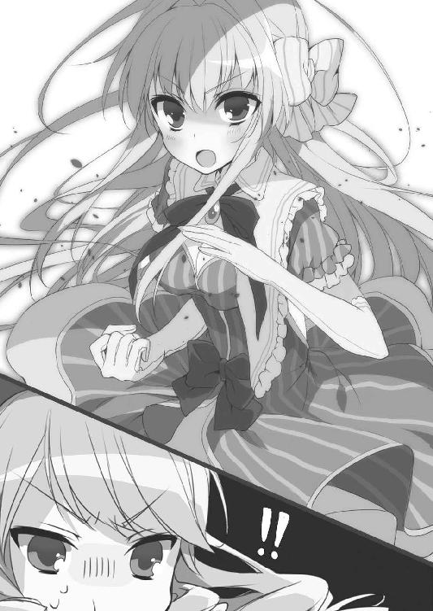
「カリオストロ伯爵の黄金の懐中時計、返していただきますわ！」
今までの鬱憤を晴らすかのようなスピードで、アルセーヌはモリアーティへと迫る。電光石火の強襲を前に、モリアーティは少なからず面食らう。
「ちょっとぉ、何よその動きはぁ！ 世間知らずの箱入り娘じゃなかったのぉ！」
しかし、頰を膨らませて文句を言う余裕はあったようだ。モリアーティはステッキを手にアルセーヌの柔術を迎え撃つ。
迫るアルセーヌ。背負い投げを狙う彼女の手が届く寸前、モリアーティが先手を打つ。ステッキによってアルセーヌの手の動きを阻み、隙をついて逆にモリアーティが先に背負い投げの体勢に入った。
だがその瞬間、間近に迫っていたはずのアルセーヌの体は、急にボストンバッグとすり替わった。
「──はぁ？」
間の抜けたモリアーティの声が甲板に響く。彼女の視界の端では、五右衛門がこれ以上ないほどに意地の悪い、卑劣な笑みを浮かべていた。
「伊賀流忍術、空蟬の術」
「ちょ、ちょっとぉ！ 待ちなさいよぉ！ こんなのありえないわぁ！」
いかなる術を用いたのかアルセーヌとすり替えられたボストンバッグを受け止めながら、モリアーティが初めて狼狽を見せた。
「アルセーヌ・ルパンを甘く見、そして忍者の秘術を全て化学知識で解明できるなどと思い上がったキミの負けだ」
そう言い放つ五右衛門の目には、すでに勝利が見えていた。
忍術ですり替えたボストンバッグを囮に、アルセーヌはモリアーティの背後に素早く回り込んでいたのだ。
「ごめんあそばせ」
アルセーヌは後ろからモリアーティの襟首を摑むと、見事な半回転とともに一本背負いの体勢に入る。
「......ここがライヘンバッハの滝壺じゃなくて助かったわぁ」
モリアーティはボストンバッグを抱えたまま、自分の体が宙に浮くのを感じていた。観念する彼女の視界一面に、船上の夜空が映る。
そして次の瞬間、彼女はボストンバッグを手放して受け身を取る余裕もなく、そのまま甲板へと真っ逆さまに叩きつけられていた。
「きゅぅー」
哀れモリアーティは頭の上に大きなたんこぶを作り、目を回して気絶してしまった。
「マドモアゼル・シャーロック・モリアーティ。素晴らしい武術の腕前でしたわ。でも、あなた様がバーティツではなくバリツを使っていたならば、負けていたのはわたくしたちだったでしょう」
そんなモリアーティを見下ろし、こんなときでさえアルセーヌはお淑やかに互いの健闘を称えていた。目を伏せてスカートの端を摘まみ、優雅に一礼している。
「アル、無事かい？ ところでそのバーティツというのは？」
「ウイ。なんでも、昔ロンドンで誕生したらしい異色の格闘技ですわ。柔術に加えてパンチやキック、ステッキ術を組み合わせた流派と知り及んでいましたので、マドモアゼルの格闘スタイルを目にするうちに思い出しましたの」
「もしかして、それがバリツの正体なんじゃ......」
「そんなまさか。わたくしたちがバリツを披露するに足る相手ではなかったのでしょう。現に、二対一でなければ勝てませんでしたもの。お互い精進致しましょう」
あくまで謙虚な姿勢を崩さないアルセーヌは、モリアーティの懐から黄金の懐中時計を取り出し、見事ルパンの名誉を取り戻した。
「ムッシュ、この時計はあなた様が持っていてくださいまし」
アルセーヌは五右衛門へと時計を差し出す。残り数分で十二時というところまで迫っており、このまま手にしてしまえば今大会の優勝者は五右衛門になるだろう。
「何を言っているんだ、アル。取り戻したのはキミだろう、僕はその手助けをしたに過ぎない。モリアーティを倒したのもキミじゃないか」
「いいえ。わたくし一人では何一つ成し遂げられませんでしたわ。それに、あなた様はあのときの約束を守ってくれました。だから今度はわたくしが約束を守る番です。手を組んだ際にはっきり決めたはずでしょう、わたくしは時計を、あなた様は優勝の名誉を手に入れると」
「あ、ああ。......ところで、あのときの約束って？」
幼い日の出会いを憶えていないからか、五右衛門はアルセーヌの言葉に戸惑いを見せた。そんな彼の手に有無を言わさず時計を握らせ、アルセーヌは微笑む。
「そもそもわたくし、ドロボウさんではありませんのよ？ ですので、世界一のドロボウさんの座なんて貰ってしまっても困りますわ。時計そのものは、ムッシュが優勝した後に返していただければそれでいいのです」
「参ったな......。確かに、石川五右衛門の名を世界中に知らしめるのが僕の目的ではあるけれど......」
渡された時計をアルセーヌに返すべきかどうか五右衛門が頭を悩ませる。
だがそのとき、突如として周囲の海に大きな低音が響き渡った。
見れば、ＩＣＰＯの船舶がビッグ・ベル号の包囲を完全に完了してしまっていた。低音の正体は汽笛であり、包囲完了の合図だったのだろう。
「しまった。こんなに大型の船じゃ、インターポールの包囲網を突破できないぞ。モリアーティとの決着に時間がかかり過ぎてしまった」
五右衛門が悔いている間にも、ＩＣＰＯは船と船との距離をじりじりと詰めて接近してきている。シャーロック・モリアーティを倒したものの、今が絶体絶命の窮地であることに変わりはなかった。
４
五右衛門とアルセーヌが手をこまねいている中、船内から階段を駆け上がってゾロを始めとした大会参加者たちが姿を現した。
「やっと合流できたなフランシス。悪い話だが、戦況はこちらが不利だ！」
「こんなときにどうした、今はそれどころじゃないんだが」
「あれを見ても同じことが言えるなら大したもんだぜアミーゴ」
ゾロが指差したのは、一同を追って押し寄せてきた犯罪組織の大部隊だ。ゾロたちも他の大会参加者たちと合流していたが、それは敵側も同じことだった。
「この状況で、よくもまあ面倒事を増やしてくれる！」
ＩＣＰＯも厄介だが、かといってこのまま犯罪組織の構成員たちを無視するわけにもいかない。手をこまねいていれば、脱出の案を思いつくより先に蜂の巣にされてしまうのは間違いないだろう。
五右衛門は歯ぎしりをこぼしながらも、忍術で犯罪組織を迎え撃つ。ゾロも得意の剣を振りかざし、ジェシーや洪吉童も最後の反撃に打って出る。
だが、彼らに先んじて飛び出していった人物がいた。
「あの方たちは、悪者さんなのですわよね？ でしたら、少しお付き合い願いますわ」
それは、あろうことかアルセーヌであった。彼女はドレスの裾を翻しつつ、電光石火の足さばきで武装集団に肉薄すると、柔術でもって敵を打ちのめしていく。
「腕ひしぎですわ」
銃を持った敵の腕に飛び掛かり、その体を押し倒して寝技に持ち込むと、敵の腕を自分の両腕と両足を使って締め付ける。腕ひしぎ十字固と呼ばれる高等テクニックだった。
「あれが、初代ルパンの得意技だったという伝説の腕ひしぎ......」
ゾロを始めとした大会参加者たちがアルセーヌの技の完成度におののく中、五右衛門は背後からアルセーヌを襲おうとした敵を瞬時に片付けつつ、叫ぶ。
「キミたちも感心している暇があるならさっさと敵を倒さないか！ それにアル、なんて無茶な真似を！」
「申し訳ありませんわ、ムッシュ。でも──」
腕ひしぎでアームロックした敵の肘関節を逆方向に伸ばして難なく外しながら、アルセーヌは小さくはにかんだ。
「わたくしったら、体の熱が冷めないんですの。マドモアゼル・モリアーティとの戦いで高揚した気持ちの収まりがつかないのですわ」
言うなり、アルセーヌは新たな犠牲者を求めて敵に襲い掛かっては、背負い投げや関節技を駆使して次々と蹴散らしていく。
「おいおい」
敵陣の只中であることも忘れて呆れ果てる五右衛門だったが、大会参加者たちの必死の抵抗に、更なる敵の増援が甲板へと押し寄せてくる。
それと同時に、客船の各所に散らばっていた大泥棒の末裔たちも集結の気配を見せた。
姿を現すなり真っ先に渦中へと飛び込んできたのは、華奢な体格でありながらアルセーヌと同等あるいはそれ以上の武術の腕前を披露する中国代表の梁山泊頭領、天魁星の宋江であった。
「ほう、さすがはアルセーヌ・ルパン。この我に匹敵する戦いぶり、相当の功夫を積んでいるようじゃな。だがのう、我が故国四千年の歴史を誇る中国拳法の神髄には、まだまだ遠く及ばぬ！」
宋江は演舞の如き優雅な動きで敵の攻撃を回避しつつ、緩やかに拳を構えた。しかし、そこから繰り出される一撃は一転して神速の拳だ。
盗賊団の全員が豪傑揃いの梁山泊を率いるだけあって、宋江の格闘能力は大会参加者の中でも破格のものだった。
「洪吉童！ 僕はアルを守る、キミは宋江のフォローをしてやってくれ！」
「仕方あるまい、だがどうして俺にお鉢を回す！」
「いや、キミなら彼女のおムコさん候補に相応しいと思ってね！」
五右衛門と洪吉童がそれぞれアルセーヌと宋江の露払いをする中、肉弾戦では敵わないと見た犯罪組織の構成員たちが、距離を取って銃を構える。
だが次の瞬間には、彼らは強力無比な大型ショットガンの威力の前に、足場ごと吹き飛んでいた。
そのショットガンを構えているのは、突如として甲板の床を突き破って現れたロボットと見紛う鋼鉄の巨体の持ち主、オーストラリア代表のネッド・ケリーだ。彼の鋼のボディは敵の発砲を軽々と弾き、この場に集う大会参加者たちの盾となる。
「人生なんてこんなものさ」
皮肉的なメタルヴォイスの呟きとともに、ネッドは兜のバイザーの奥でカメラアイを明滅させながら、次なるターゲットを機械的にロックオンして無慈悲な砲撃を続けていく。
他にも、犯罪組織の構成員を血祭りに上げるイタリアのサルヴァトーレ・ジュリアーノを始め、インドのプーラン・デーヴィーやマレーシアのハリマオ、ブラジルのランピアンとマリア・ボニータ夫妻など、別行動を取っていた義賊たちが次々と参戦する。
「やれやれ、こいつはオレも目立っておかないと活躍の場がなくなりそうだぜ」
そんな仲間たちの勇姿を頼もしげに見つめつつも、ゾロも見事な剣の冴えでもって敵の一団を薙ぎ倒していく。
結果、気絶したままのモリアーティが踏まれたり蹴られたりする中、大会参加者たちの猛攻により、甲板に押し寄せてきた犯罪組織の構成員たちは全て蹴散らされた。
死屍累々と言って差し支えのない惨憺たる有様の中、ひとしきり暴れ終えたアルセーヌは、どこか満足げに夜風に髪をなびかせる。
「......アル。少しは落ち着いたかい？」
「ウイ、ムッシュ。背中を守っていただいたようで、お手を煩わせてしまいましたわ」
「......いや、気にしなくていいよ。キミの気が済んでくれたのなら、うん」
一方の五右衛門は、心身ともに疲れ切った調子で苦笑いを浮かべていた。
「なあフランシス。これにて一件落着──といきたいところだが、それにしちゃあ嫌な予感がするぜ？ オレの目には、何故かこの船がインターポールに囲まれているように見えるんだが」
大会参加者たちが犯罪組織相手の大立ち回りに時間を取られている間にも、ＩＣＰＯの船舶は肉眼でも容易に視認できる距離まで近付いていたのだ。これにはさすがのゾロも焦りを見せる。
「詳しく説明している暇はないが、モリアーティがインターポールを手引きしたんだ。このまま留まっていては、間違いなく僕ら全員刑務所行きだろう。まあ、一人例外はいるけども」
「うい？」
「参ったぜ。オレもスペイン本国じゃ今の政府に恨みを買う真似も何度かしているからな。それに、警察に捕まったとあれば怪傑ゾロ末代までの恥だ」
小首を傾げるアルセーヌを除き、この場に集まった大泥棒の末裔たち全員が、深刻な顔でお互い見つめ合う。
と、進退窮まったかに思えた瞬間、ＩＣＰＯの包囲網を抜けてビッグ・ベル号へと急接近してくる小型船が一同の前に姿を現した。
夜風を受けて大きく広がる海賊旗が、月明かりに照らし出される。
「あれは、アン・ボニーの海賊船か！」
その正体を知った五右衛門やゾロが驚く中、彼らの隣では、持ち主のアン・ボニー本人が一番驚いていた。
海賊船の舳先に仁王立ちしていた人影は、ビッグ・ベル号の甲板に集まっている大会参加者たちの姿を目にし、大きく手を振る。
「ごっちーん！ アルちーん！ 無事かーい？」
海賊のバンダナ代わりにほっかむりを被ったその人影は、島のルパンの隠れ家に残っているはずの鼠小僧次郎吉だった。
「大会参加者たちを確認。あの船に接舷するよ！ みんな、合点承知？」
「ヘイ、合点です、姐さん！」
次郎吉の指示に雄々しく答えたのは、海賊船の船員を務めているジェシー・ジェイムズ強盗団の面々であった。彼らの操舵により、ＩＣＰＯの意表をついて海域に侵入してきた海賊船は、そのままビッグ・ベル号のすぐ隣まで接近してきた。
巨大な豪華客船と小型の海賊船が並走するのは難しい。おそらく接舷していられるチャンスはほんの数秒だろう。
「まさしく渡りに舟だ！ 助かったよ、じろちゃん！」
この窮地から脱する術を得た大会参加者たちは、軽快な身のこなしで甲板のフェンスから宙へと身を投げ出し、二隻の船の高低差をものともせずに海賊船へと飛び移る。
「アル！ 時間がない、僕らも急ぐぞ！」
「ウイ、ムッシュ。でも、マドモアゼルをこのままにしておくのは可哀想ですわ」
焦る五右衛門を尻目に、アルセーヌは気絶したままのモリアーティをボストンバッグに詰め込んでいた。
「そんな大荷物を抱えて海賊船に飛び移るのは難しいんじゃないかな......」
「よいしょ、っと」
五右衛門の制止の声が届くより先に、アルセーヌはモリアーティを詰め終えたボストンバッグを背負うと、そのまま得意の柔術でもって海へと投げ飛ばす。
「え？ ムッシュ、今何かおっしゃいました？」
下手をすれば当代のモリアーティが地中海の底へと沈められるところだったが、アルセーヌも狙いをつけて投げたのだろう、一応ボストンバッグは海賊船へと落下していった。
「いや、なんでもない......」
五右衛門はアルセーヌを抱きかかえると、ＩＣＰＯの船舶が間近にまで迫っていたビッグ・ベル号から飛び出す。
「ごっちん、アルちん、もうこれ以上は待っていられそうにないよ！」
「早く飛び乗れ！ フランシスたちで最後だ！」
仲間たちの声を頼りに、今にも離れそうな海賊船の甲板目指し、五右衛門とアルセーヌは闇の中を落下していく。
そうして二人は、受け身も取れずに無残に転がっていたボストンバッグの横へと着地することに成功した。
「ようし、全員無事だ！ 帆をもっと強く張れ、全速力で海域を脱出するぞ！」
二人の到着を待っていたゾロが、周囲へと声を張り上げる。その号令を合図に、洪吉童が曲芸師じみた身軽さでマストを駆け上がった。
もっとも、海賊旗とマストが雰囲気的な見かけ倒しでしかないことを重々承知しているアン・ボニーは、こっそりテヘペロっと舌を出しつつ、船のエンジンを全開にする。
このご時世、風がないと進まない帆船で海賊稼業を続けられるはずもないのだ。
「なーなー、海賊船なら大砲くらいあるよな？ 使ってもいい？」
そんな中、ジェシーは手下を率い、海賊船の右舷に備え付けられた大砲をビッグ・ベル号の横っ腹へと突き付ける。
「マドモアゼル、これが船の見取り図ですわ。動力部を狙うならご参考にどうぞ。先ほどボストンバッグの中で拾いましたの」
「よーし、閉会式が途中だったからな！ 大会終了の祝砲だ、喰らえーッ！」
アルセーヌから見取り図を受け取ったジェシーの歓声とともに、夜の海に強烈な砲撃音が響き渡った。放たれた大砲の弾は動力部に見事命中し、爆発炎上する。
これにはＩＣＰＯの船舶も慌ててしまい、包囲の陣形を乱れさせた。ビッグ・ベル号に置き去りにされた犯罪組織の構成員たちも航行を断念せざるを得なく、捕まるか沈むかの二者択一を迫られる結果となる。
海賊船に乗り移った泥棒の末裔たちだけが、巨大な爆発に喝采を上げていた。
結局、ＩＣＰＯは身動きの取れなくなったビッグ・ベル号は確保できたものの、足並みが乱れた隙をつかれ、海賊船に包囲網を突破されてしまった。
「ふう、何とかなりそうだな。それにしても、どうしてじろちゃんがここに？」
背後から追ってくるＩＣＰＯから逃げる最中、五右衛門はほっかむりを解いた次郎吉にそう尋ねた。
「うん、隠れ家で二人の帰りを待っていたらエドガーとかいう金髪のおっさんが来て、ごっちんたちのことを迎えに行かないと危ないって知らせてくれたの。それからすぐに手頃な船を盗んで追いかけてきたってわけ。合点した？」
次郎吉の言葉に、彼女とともに海賊船を持ち出したジェイムズ強盗団の面々も笑みを浮かべる。彼らも次郎吉同様、エドガーに声を掛けられたらしい。
「とっても助かりましたわ、マドモアゼル次郎吉。お礼は千両箱でよろしいんですの？ わたくしどんなものかは存じませんけれど......」
「ああ、いいのいいの。アルちんからは無報酬でいいから。その分はごっちんからふんだくるし」
「鬼め！」
文句を口にする五右衛門だが、さすがに疲労がピークに達したのだろう、そのまま甲板の上に大の字になって寝転がる。
「フランシス、最後の最後までアンタには世話になったな」
と、被っていたソンブレロを手に取り、ゾロは改まって五右衛門へと頭を下げた。
「まったく、最初から目的を教えてくれても良かったんじゃないか」
「あっはっは。オレとしたことが水臭かったな。だが、アンタたち二人には事情を知らせないほうがいいと思ったのさ。そのほうが目立ってくれると踏んだんでな」
「やれやれ、何から何までキミの思惑通りに動いていたわけか。まあいい、あの有名な怪傑ゾロに貸しを作れたわけだからね」
大きく伸びをする五右衛門を前に、ゾロはマスクも取り、訝しげに眉をひそめた素顔を見せた。
「怪傑ゾロ？ 何のことだフランシス。オレはスペイン国内にごまんといるドン・ディエゴって名前のコソ泥だぜ？」
「は？ だってキミが自分でゾロだと名乗ったんじゃないか」
「あー、そりゃあれだな。昼間に食べたマーヤ・クッキーのせいで、自分がゾロだっていう幻覚でも見ていたんだろうぜ。いやー、我ながら人騒がせな話だな」
「は......はははっ、言ってろ」
すっとぼけるディエゴに対し、五右衛門は腹を抱えて笑った。
「おっと、ところで一応聞いておきたいんだが、黄金の懐中時計はどうなったんだ？ この大会は結局誰の優勝ってことになるんだ？」
ディエゴの問いかけに、五右衛門は懐から時計を出した。アルセーヌから受け取って、結局そのままになっていたのだ。
時計の針が示す時刻は、ちょうど十二時を過ぎたところだった。日付が変わり、大会は終わりを迎えていた。
「この時計は本物か、セニョリータ？」
「ウイ。アルセーヌ・ルパンの名にかけて誓いますわ。初代ルパンのコレクションの一つ、カリオストロ伯爵の黄金の懐中時計に間違いありません」
「どうやら、優勝は日本代表の石川五右衛門で決まりらしい。ここにいる全員が証人だ、アンタが世界一の大泥棒だよアミーゴ！」
ディエゴの賛辞とともに、周囲の大会参加者からも惜しみない拍手が寄せられる。
「んふふ。それはどうかしらぁ」
しかし、突如として響いた声が拍手を遮った。
声の発せられた方向へと全員が目を向けてみれば、甲板に放置されていたボストンバッグのファスナーの隙間から、モリアーティがボロボロの有様で顔だけを出していた。
「その時計、もしものときのために、実は一時間早めておいたのよぉ。だからぁ、本当は十一時を過ぎたばかり。まだ大会は終わってないのよぉ！」
「な、なんだって！」
「とまあそんなわけでぇ、延長戦も頑張って頂戴！」
言うだけ言って、モリアーティはボストンバッグの中に顔を引っ込める。
無論、彼女の言葉は周囲にいる大会参加者全員の耳にも届いていた。彼らは慌てて自らの時計で時間を確認し、そして大会がまだ終わっていないことを知った。
「だったら話は別！ 勝つのはアメリカ代表ジェシー・ジェイムズだッ！」
「いいや、韓国・北朝鮮代表、洪吉童が優勝を貰い受ける！」
「やれやれ。スペイン代表の怪傑ゾロも最後くらいは付き合うか」
「ねーねー、鼠小僧次郎吉ももう一人の日本代表ってことで参加していい？」
途端、世界各国の大泥棒の末裔たちは、意気投合していたのも束の間、全員がすぐさま身構える。
俄然やる気を見せるジェシーに、不敵に目を輝かせる洪吉童、ディエゴもここぞとばかりにマスクを着け直し、次郎吉さえ飛び入り参加する気のようだ。
無論、中国代表の宋江や、オーストラリア代表のネッド・ケリーを始めとした、その他の大会参加者たちも臨戦態勢を整えている。今からタイムリミットまでの一時間、この海賊船を舞台に彼らの最後の祭が始まるのだ。
「くっ、来るなら来い！ 石川五右衛門は受けて立つ！」
もちろん五右衛門も起き上がって身を翻し、時計を死守する構えを見せる。そうして始まる乱闘紛いの大騒ぎに参加せず、小首を傾げている少女が一人。
「皆さん、とってもお元気ですのね。ムッシュー、頑張ってくださいましー！」
騒ぎに乗じてこっそり逃げ出すボストンバッグを尻目に、アルセーヌは甲板の隅に腰を下ろして延長戦を観客気分で傍観し始める。
「伊賀流忍術、空蟬の術！」
「甘いわ！ 遁甲術、風雲招来！」
「ジェイムズ強盗団、一斉射撃だ！ ヒーハー！」
「その時計にゾロのマークを刻んでやろう！」
最初のうちは人智を超越した忍術や仙術が炸裂し、西部風のワイルドな銃撃戦へとなだれ込み、かと思えば優美な剣術や武術が披露され、世界各国の大泥棒の末裔たちに相応しい戦いが繰り広げられていた。
「優勝するのは僕だ！ 全員いい加減諦めろ！」
「俺にこそ世界一の大泥棒の座は相応しい！」
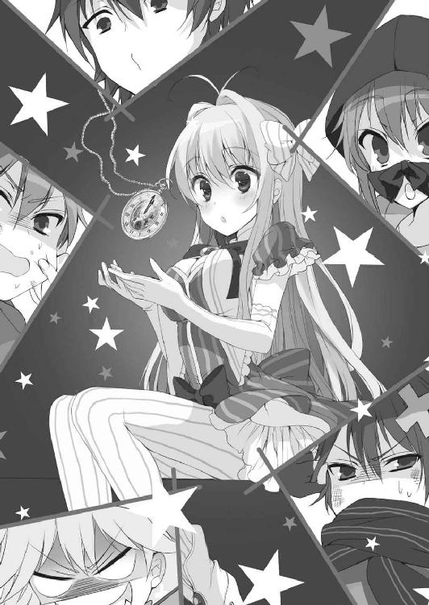
「アタシだって言ってんじゃないのさー！」
「そりゃないぜアミーゴ！」
だが、如何せん大人数による大乱闘など収拾が付くはずもない。卓越した泥棒のスキルもどこへやら、いつの間にか原始的で幼稚な奪い合いになってしまっている。そんな大喧騒の中にあっては、一時間などあっという間だった。
争奪戦の終了時間が刻一刻と近付く中、黄金の懐中時計が十二時を指す寸前、醜く争う五右衛門たちの手からすっぽ抜けた時計は、あらぬ方向へと飛んで行く。
この先の結末を予期していた者は、一時間前の時点では一人もいなかっただろう。だからこそ参加者全員が呆気に取られた面持ちで、甲板の隅へと切なげな眼差しを向けた。
「うい？」
彼らの視線の先で、時計は本来の持ち主の手の中へと、まるで予定調和のようにすっぽりと収まったのだった。
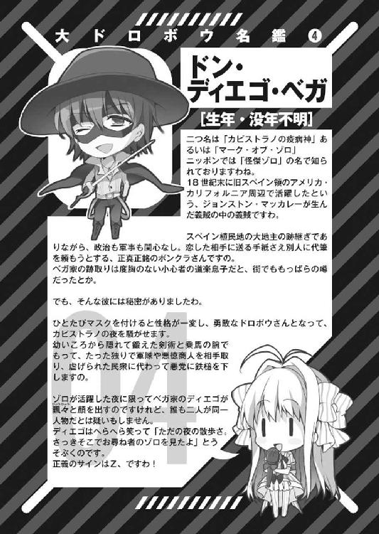
終章
つい一週間前まで悪党の楽園と呼ばれていた、地中海のとある島。
そのリゾートホテルの巨大な屋外プールを貸し切って、一人バカンスを楽しむ銀髪の少女の姿があった。
「んふふ、やっぱりあたくしって天才だわぁ。こぉんなこともあろうかとぉ、いざとなれば膨らませて救命ボートになるボストンバッグを用意しておいたのよぉ」
少女の名はシャーロック・モリアーティ。彼女は今、スリングショットという何とも露出度の高いセクシーな黒の水着姿で、プールサイドのデッキチェアで優雅に寝そべっていた。
一度は泥棒たちに捕らえられたモリアーティだったが、彼らが時計の奪い合いに夢中になっている隙に、アン・ボニーの海賊船から脱出して島へと舞い戻っていたのだ。
モリアーティはデッキチェアから僅かに身を起こし、傍らのテーブルに目を向ける。
そこには、彼女がこの島で頻繁に愛飲しているシチリア産のブラッドオレンジジュースの他に、ブタのぬいぐるみや、鉢植えに入った綺麗な花や、近くのビーチの露店で買ってきたクッキーの包みが置かれていた。
もちろんぬいぐるみには物騒な銃器が隠されていることもなく、花も無害の種類で、クッキーは正真正銘ただのレーズン入りクッキーだ。
ＩＣＰＯがビッグ・ベル号に乗船していた犯罪組織の面々を全員逮捕したことで、各国の悪党たちはすでに島から一掃されている。さらに、島の本来の所有国がこの好機を逃さず、二度と悪党たちに占拠されないよう、ＩＣＰＯの協力を得て厳重な管理を敷いた。
故に、島に残った唯一の悪党であるモリアーティも今は、ジュースのストローを咥え、クッキーをかじり、花を愛で、ぬいぐるみの鼻を指先で突くだけの、年相応の普通の少女でしかない。
「ホームズとしての名声もモリアーティとしての利権も逃しちゃったけどぉ、久しぶりの休暇を満喫したと思えば惜しくはないわぁ。何せイギリスに戻れば、すぐさま十件余りの面白味に欠けた事件がひっきりなしに舞い込んでくるに違いないものねぇ。息抜きする暇も無くなるんだわぁ。だってぇ、あたくしったら事件を引き起こす側にも立たなきゃいけないし、そうかと思えば解決する側にも立たなきゃいけないんですものぉ」
色彩に欠けたロンドンの空模様のように顔を曇らせたモリアーティは、頭上の素晴らしい青さにうっとりとした目を向け、真っ赤なオレンジジュースを一息に飲み干す。
すると突然、プライベートプールであるはずのこの場所に、慌ただしく一人の男が走り込んできた。身なりの良い、まさに英国紳士といった風体の五十代くらいの男だ。
その姿を見たモリアーティは、最初から件の男がやってくることを予想していたように、準備万端の笑顔で彼のことを出迎える。
「んふふ。やっと来てくれたわねぇ、待ってたのよぉ、ワトスンおじさま！」
それは、モリアーティ教授の末裔と名乗るに相応しい悪女の笑みとはまるで別物の、あどけない純粋な笑顔だった。
「シャーリー！ 君のようなうら若い乙女がそんなはしたない水着を着ているだなんて、私は困ってしまうよ！」
一方、ワトスンと呼ばれた男は、彼女の際どい水着姿を見るなり、顔を赤く火照らせてしまう。
「相変わらずムッツリねぇ、ワトスンおじさまはぁ。こういうの好みのくせにぃ！」
銀髪の少女は口調こそ相変わらずだったが、まるで別人のような、それこそシャーリーという名のどこにでもいる少女のような振る舞いを見せていた。
何故なら彼女の前に現れた男は、かの有名な初代ホームズの相棒を務めたワトスン医師の子孫にあたるのだ。何代にもわたっての付き合いがあるのだろう、愛称で呼ぶことを許していることからも、シャーロック・モリアーティが彼に懐いているのは明白だった。
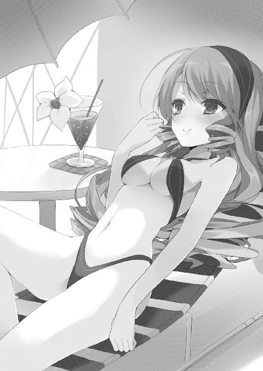
「さあシャーリー、休暇は満喫しただろう、そろそろロンドンに戻ろうじゃないか。私は君を連れ戻すために地中海までやって来たんだ。先代ホームズやその奥方も、君のことを心配しているんだぞ。君だって、そろそろ実家のストラディバリウスを弾き鳴らしたくなっている頃合じゃないのかい？」
ワトスンは、小悪魔じみたシャーリーを前に早くもたじたじであったが、それでも一応紳士としての威厳を取り繕っていた。
「えぇー、いやよいやよおじさまぁ。あたくし、おじさまと一緒にもっとバカンスしたいのぉー」
「かわいこぶっても駄目だよ。君の手口は分かっているんだ、そうやって甘えれば私が強く出られないと思っているんだろう」
「ぶぅー、何よおじさまったら。どおせ、あたくしを捜すなんて名目でシチリアにでもよって美味しい物をいっぱい食べて一人で小旅行していたんでしょ？ ふぅーんだ。お父様に言いつけてやってもいいのよぉ」
「な、な、な、何を根拠にそんな」
たじろぐワトスンに対し、シャーリーは灰色の瞳を細めて言葉を続ける。
「まずおじさま、前に会ったときからそうねぇ、七ポンド半は太っているでしょ。ここのところずっと美味しいものばかり食べている証拠」
「うっ」
「次に、手から消毒液の臭いがまったくしない。長くお医者様のお仕事をサボっていることを意味するわぁ。おまけに靴の踵は見事にすり減ったままで、ここしばらく一度も別の靴に履きかえていないことが明々白々。即ち旅行中に散々寄り道していたってことねぇ」
「ううっ」
「そして最後に、シャツの袖の真新しいカフスが今シチリアで流行っている最先端デザインなのよぉ。お父様には黙っておいてあげるからぁ、ねぇおじさま、それ頂戴」
シャーリーの名探偵らしい指摘に、ワトスンは旅先で買ったばかりの袖口のカフスを取り外し、観念した様子で彼女へと手渡した。
しかしシャーリーは自らの観察眼を誇るわけでもなく、むしろこの程度のことは至極当たり前の常識であるかのように、何でもないといった顔を浮かべている。
「相変わらず鋭いなあ、シャーリーは。そういうところは父親譲りだ」
「お母様譲りでもあるわねぇ」
「おや？ 彼女もそうなのかい？ あの偏屈な先代ホームズを見初めたあたり、奇特な女性ではあると常々思ってはいたけれど、そうか、似た者夫婦だったわけか」
シャーリーの母の正体、引いては彼女自身の持つモリアーティとしての裏の顔を知らないのだろう、ワトスンは能天気そうに首を傾げている。
そんなワトスンを愉快そうに横目で眺めていたシャーリーは、年相応にイタズラっぽい笑みを浮かべ、わざとらしく考える素振りを見せた。
「んふふ、そうねぇ、バカンスを取りやめにして帰ってあげてもいいけどぉ、一つ条件があるわぁ。おじさまが旅行してきた道を遡ってイギリスに向かいましょ」
「そんな！ 今から何週間もかかってしまうじゃないか！」
「自業自得でしょお？ ハイ決定、そうと決まれば早速二人きりの旅を楽しみましょ」
言うなりシャーリーはデッキチェアから起き上がり、ステッキとぬいぐるみを抱えてプールに背を向けてしまった。
彼女が残した鉢植えを手に、ワトスンは慌てた様子でその背を追う。
「シャーリー。実は先日私のもとへ先代ホームズから連絡があってだね、さる英国貴族の末裔である名家に、泥棒たちから盗みの予告状が届いたらしいんだ。そう、ホームズ探偵事務所に舞い込んできた新たな依頼だよ。これこそ私が気ままな一人旅を中断して君を連れ戻しに来た最大の理由だと言ってもいい」
「予告状？ なによそれぇ」
「ここに記された泥棒たちの名前を見てくれないか。私が慌てるのも分かってくれるはずだし、何より君の好奇心が満たされることは間違いない。一刻も早くイギリスへ戻りたくなったろう？」
ワトスンが取り出した予告状のコピーを目にし、シャーリーの顔が引きつる。
そこに記されていたのは、ドン・ディエゴ・ベガ、ジェシー・ジェイムズ、洪吉童と、彼女もよく知る世界中の有名な泥棒たちの連名であったのだ。
今回の彼女の計画を頓挫させた石川五右衛門とアルセーヌ・ルパンの名こそないものの、他にも大勢の大会参加者の名前が載っている。
そして、彼らの署名の最後には、大泥棒同盟という名が記されていた。
「ミス・ルパンとあの男の名前がないみたいだけどぉ、何なのよこれぇ！ 大会は終わったんだからさっさと自分の国へ帰りなさいよぉ！ それがよりにもよって大泥棒同盟ですってぇ？」
若干モリアーティとしての顔つきに戻ってしまったシャーリーは、忌々しげに予告状をステッキの先で突いてプールへと叩き落としてしまった。
「世界各国の大泥棒の末裔たちが手を組むなんてぇ、世界中の名探偵たちが黙っていないわよぉ！ なんたって、子孫が現代でも存続しているのは大泥棒たちだけじゃないわぁ。あたくしことシャーロック・ホームズもそうだしぃ、他にもデュパンやクイーンやポアロといった世界各国を代表する名探偵の末裔たちがいっぱいいるのよぉ！ その全員を敵に回すつもりぃ？ んっふっふ、こいつらむかつくわぁ！」
「ええと、ご機嫌斜めなところ悪いんだが、知り合いなのかい？」
「つい最近この島で鉢合わせたのよぉ。義賊連中が標的にするくらいだからぁ、おじさまの言う英国貴族のほうが怪しく見えてきたわぁ。お父様に言ってそいつを調べて貰ったほうがいくらか見返りがありそうよぉ」
うんざりと顔をしかめさせたシャーリーは、プールに落ちた予告状からプイと目を背け、可愛らしく頰を膨らませた。
「そういえば、ここは悪党の楽園と呼ばれる島だったな。各国を代表する大泥棒の末裔たちが集まっていたということは、そうか、世界大泥棒選手権が行われていたんだね？」
「ちょ、ちょっとぉ、なんでワトスンおじさまがそんなこと知ってるのよぉ！」
「先代ホームズが前回の大会に紛れ込んでいたことは、シャーリーも当の本人から聞いているだろう？ 私も彼の助手として島まで付いてきたわけさ」
あっけらかんと返答するワトスンを前に、シャーリーは納得した様子で頷く。
彼女が大会の存在を知り得たのは、父である先代ホームズに教えられたからだった。そして、先代ルパンが今大会を開催するにあたり自分のコレクションを持ち出したことや、彼自身が主催者を務めることを調べ上げ、計画を練ったのだ。
「あのときは確か、先代のアルセーヌ・ルパンが優勝したんだったな。先代ホームズが逮捕寸前まで追いつめたんだが、結局出し抜かれてしまったんだ。なら、先代ルパンも島に来ていたんじゃないか？ 何せこの大会は、前回の優勝者が次の主催者を務める伝統があるからね」
「そ、そこまで知っていたのねぇ......おじさまのくせに侮れないわぁ......」
先代ルパンを捕まえたにもかかわらず逃がしてしまったなどとは、口が裂けても言えないシャーリーであった。
「しかし、再び大会が行われていたとは驚きだ。先代ホームズの予想が外れるとはね」
「お父様の予想？ それってどういうことぉ？」
「ああうん、主催者なんていう損な役回りをあの欲深いルパンがするはずがない。それが当時のホームズの弁でね。何せ大会を主催しても一文の得にもならないのだから、すでに世界一の大泥棒であるルパンからすれば催す価値もない、という話だったはずだ」
首を捻るワトスンの呟きに、シャーリーは突如として笑い声をこぼし始める。
「んっふっふ。分かってないわねぇ、ワトスン君。逆に考えればいいのよぉ。つまりぃ、先代ルパンが大会を主催するに足る理由、標的になる獲物があったってことよぉ」
「どういうことだい？ 誰かが何かを盗られたのかい？」
「おじさまの疑問を解消するには、物事を順序立てて考えていく必要があるわぁ」
ワトスンを連れ、シャーリーはホテルのルームキーを取りにロビーへと向かった。道中、ステッキの先でプールの水面を揺らしながら、彼女は上機嫌に言葉を続ける。
「まず、当代のアルセーヌ・ルパンと十四代目の石川五右衛門が事前に手を組んでいたことに注目すべきねぇ」
シャーリーは自分の計画を破綻させた二人の顔を思い出してほくそ笑んだ。
「先代ルパンがわざわざ大会を主催し、自分のコレクションから黄金の懐中時計を持ち出したのは、きっとあの二人を引き合わせるためだったのねぇ。泥棒としてはてんで素人の娘を大会に参加させ、石川五右衛門のもとを訪れるよう仕向けたんだわぁ。そこから推測される事実はぁ──」
彼女は自らの天才的頭脳をフル回転させ、推測を理論立てていく。最早ワトスンに聞かせるためのものではなく、自身に言い聞かせるための独り言も同然であった。
「よく分からないが、どうやらシャーリーにはいい息抜きになったようだ。一人で悪党の楽園に行くなんて、どうなることかと心配していたのだが」
ワトスンは人の良い笑みを浮かべ、親友そっくりの顔つきで推理に興じる少女の姿を、能天気に眺めていた。
と、不意に彼のポケットから携帯電話の着信メロディが流れ出す。
「はい、もしもし。ん？ なんだホームズか。君は相変わらず唐突な男だな。君の大事な一人娘のことなら大丈夫だよ。今しがた合流した、うん、元気すぎて困るくらいだ。なになに？ イギリスに戻るのを至急中止しろ？ シャーリーをニッポンへ向かわせろだと？ ホームズ、君は本当に唐突な男だ。どうせ事情は説明してくれないんだろう？」
取り出した電話を手に、ワトスンは親友と何やら話し込み始めた。
「ニッポンねぇ、一体どんな事件の依頼が舞い込んできたのやら。そういえばあの国にも、偉大な名探偵の末裔がいるんだったな。ええと名前は確か、明智小五郎だったか......」
ワトスンが頭を悩ませる中、推理に夢中だったシャーリーが急にその足を止めた。
「あぁん、それはそうとワトスンおじさまに一つ教えておいてあげないとぉ」
これから日本に向かわされることになるとは知りもしないシャーリーは、ホームズでもなくモリアーティでもない屈託のない笑顔を浮かべ、背後のワトスンへと振り返る。
そうして彼女は、ステッキを地中海の青空へと掲げた。
「この島はもう悪党の楽園じゃないのよぉ。今は何て呼ばれているか知ってるぅ？ ズバリ、悪党不在の楽園ですってぇ！ あはは、なにそれ、そのまんまよねぇ！」
一方その頃、ここは地中海から遠く離れた日本。
石川五右衛門は久しぶりに自宅へと戻ってきていた。その傍らには、報酬を受け取りに付いて来た鼠小僧次郎吉の姿もある。
大会が終わった後、アルセーヌとはすでに別れてしまっていた。今頃はフランスの実家で泥棒とは無縁の生活に戻っていることだろう。本来アルセーヌは五右衛門たちの側の人間ではないのだから、それも当然のことだ。
「まさかあれだけ苦労して、最後の最後でアルが優勝だなんてな......」
奪い合いに躍起になる参加者たちの手からすっぽ抜けた黄金の懐中時計がアルセーヌの手に収まった際の光景を思い出し、五右衛門が頭を抱える。
その瞬間、事態が吞み込めず首を傾げていたアルセーヌを除く全員の悲鳴が、海賊船の甲板に響き渡った。もちろん、優勝を狙っていた五右衛門の姿もそこにはあった。
「骨折り損のくたびれもうけとはまさにこのことだ。結局今回も世界一の大泥棒の座はアルセーヌ・ルパンのものになったわけか」
「いつまでもうじうじしてないの。それにしてもごっちん、一緒に一味を組もうって怪傑ゾロのお誘いに乗らなくて良かったの？」
次郎吉の問いかけに、五右衛門は目を細めながらも苦笑いを浮かべた。
「ああ、そろそろ日本が恋しかったからね。それに、石川五右衛門と鼠小僧次郎吉が揃って長らく留守にしていたんだ、この機を見逃してくれる我が国の名探偵たちじゃない」
「そういえば、あたしたちが地中海に行っている間に、まーた当代の怪人二十面相ちんが当代の明智小五郎と少年探偵団に逮捕されたんだって」
「またか。縄張りをいつまでも空にしておくわけにもいかないし、なおさら戻ってきて正解だね。ディエゴから消息不明の父上の足取りも多少は聞けたし、それで充分さ」
ディエゴを筆頭に今大会で知り合った世界中の大泥棒たちの顔を脳裏に思い浮かべつつ、五右衛門はしみじみと呟く。
「しかしまあ、大泥棒同盟ねぇ。名立たる泥棒のオールスターみたいな連中に目を付けられる悪党には同情するよ」
「でもさ、もしも大泥棒同盟にフランス代表メンバーとしてアルちんが参加していたら、ごっちんだって日本代表として加わっていたんじゃないの？」
「うっ......」
さすがは幼馴染だけあって、完全に図星であった。
痛いところを突かれて頰を引きつらせる五右衛門を尻目に、次郎吉はさっさと彼の家の奥に上がり込む。
「ごっちん、固まってないで早くあたしの千両箱出してよー」
「分かっているって。まったく、人の家で自由に振る舞わないで欲しいな」
侵入者用トラップをすいすいとすり抜けて進む次郎吉に向けて五右衛門が釘を刺そうとした、そのときのことだ。ふと彼の目に映るものがあった。
それは、持ち主の分からない白いリボンであった。棚の上に置かれたままになっている。
「まさかこれは、アルのリボンか？」
リボンを手に取り、五右衛門が首を傾げる。彼の留守中に、何者かが家の中に忍び込んだ形跡はない。となると、出発前にアルセーヌが置き忘れた物に違いないだろう。
「まったく、そそっかしいな」
親愛の笑みを浮かべてため息をこぼす五右衛門だが、リボンをまじまじと見ているうちに、急に眉をひそめた。
「もしかして......」
何やら一人呟くと、先を行く次郎吉を追い越す勢いで、五右衛門は家の蔵へと駆け込む。
「どうしたの、ごっちん？」
「ああうん、ちょっとね、見覚えがあって」
訝しむ次郎吉にさっさと千両箱を用意すると、五右衛門は慌ただしく家捜しを始めてしまった。蔵の鍵付きの棚の全てを針金一本で開錠し、手当たり次第に掘り返していく。
「これだ......」
そうして五右衛門が見つけ出したのは、先日アルセーヌが忘れていったリボンとまったく同じ色、同じ生地の、もう一つの古いリボンであった。
「それって確か、昔ごっちんの家にやって来た外国人の女の子が忘れていったリボンだっけ。子どものときにそんな話を聞かされた覚えがあるよ」
「ああ。父上の知り合いの娘さんだったはずだけど......」
二つのリボンを見比べ、そして五右衛門はようやく思い出した。
十年前、自分が幼い頃のアルセーヌと出会っていたことに。
「そうか、あの子がアルだったんだ。彼女とは、以前にも会っていたんだ」
感慨深げに呟き、五右衛門が目を細める。
屋敷の罠に引っ掛かり、落とし穴に落ちたり天井から吊るされたりしていた小さな少女。おぼろげだった古い記憶の中の彼女の姿が、今のアルセーヌと重なる。
「もしかして、アルは覚えていたのか？ だから僕の家に？ こうしちゃいられない！」
五右衛門はリボンを摑んだまま慌てて蔵の黒電話に駆け寄り、受話器を引っ手繰ると、別れの際にアルセーヌから聞いていた彼女の連絡先へと国際電話をかける。
「え？ もしかしてアルちんに電話するの？ へぇー、あの奥手なごっちんがねぇー」
緊張に震える指先でダイヤルを回す五右衛門を前に、幼馴染のそんな姿が意外なのか、次郎吉はつい笑みをこぼしていた。
『ボンジュール。どちら様かな？』
ところが、期待に胸を弾ませた五右衛門の耳に受話器越しに聞こえてきたのは、まったく別の男の声だった。
「その声は......まさかエドガーか！」
『おお。そういう君は十四代目の石川五右衛門か。今回は大活躍だったそうじゃないか、君にうちの娘を任せて正解だったよ』
「やっぱりお前が先代のアルセーヌ・ルパンだったのか」
『ははは。でなければ、ルパンの屋敷にかかってきた電話を私が取るはずもないだろう』
五右衛門の声に、電話の向こうでエドガーが愉快そうに笑い声を上げた。
『しかし、正体が分かっていながらどうして私のことを未だにエドガーと？』
「僕にとってのアルセーヌ・ルパンの名は、一人の女性のことを指す。お前じゃない」
『いやいや、それで結構。若い世代の君がうちの娘をルパンとして認めてくれたのだから、親としては誇らしいとも。まあ、うちの娘も今や名実ともに世界一の大泥棒である当代の怪盗紳士ルパンなのだから、どうあっても認めざるを得ないだろうがね』
エドガーの発言を聞き、五右衛門の眉が訝しげに反応する。
「待て。大会の決着をどうしてお前が知っているんだ？ アルは自分の勝利をひけらかしたりしないはずだ」
『当然だとも。私の可愛い娘は、実力で勝ったわけでもないのに偶然の勝利を自慢するような恥知らずではないよ。彼女からは大会の話など一つも聞いていない。決着の行方は、私自身の目で見届けたのさ。何せ私はほら、一応主催者だからね』
おどけた口調のエドガーの言葉に、思わず五右衛門は自分の耳を疑った。
「あのときアン・ボニーの海賊船にいたのか！」
『君の連れの鼠小僧やジェシー・ジェイムズの子分たちに声をかけた後、変装して一緒に船に乗り込ませてもらった。ああそうそう、ついでに最後の一時間で行われた時計の取り合いにもそのまま参加させてもらったよ』
「なんだって？」
『決着の瞬間、わざと時計を取り落とすフリを演じ、それを娘の手の中に放り込んだんだ。ははははは！ やはり優勝すべきは怪盗紳士ルパンだと思ったからね！』
電話の向こうで勝ち誇るエドガーの声を聞き、五右衛門は絶句していた。体中から力が抜け、その場で立ちくらみが起きそうにさえなっていた。
「お、お前の仕業だったのか......」
『ルパンは代々負けず嫌いで強欲なのだよ。勉強になったろう』
「つまり、大会を主催したのも、泥棒としては素人の娘を参加させたのも、最後には自分の手で勝たせるつもりだったからなのか......」
『んー。いや、残念ながらその推理は正解とするには不十分だ。それなら最初から大会など開催しないほうがいいじゃないか。ルパンが動くからには、狙う獲物が必ずあるものだ。まあ、そこまで推理できるのは世界広しといえども名探偵シャーロック・ホームズだけだろうがね』
がっくりと膝をつく五右衛門を尻目に、先ほどからの受話器の声が届かない次郎吉はずっと首を傾げている。
やがて待ち飽きたのか、千両箱を持ち出して中身の確認を始めてしまう次郎吉だったが、彼女の不審な銭勘定さえ目に入らない様子で、五右衛門はエドガーとの会話に夢中になっていた。
「なら、お前の狙いは一体何だったんだ！」
『教えて欲しいかね？ 別に私の口から教えなくても、いずれ君も気付くことなのだが、まあいいだろう』
焦らすようなエドガーの物言いに、五右衛門の苛立ちは募る。
『君のお父上である十三代目の五右衛門と私の仲は知っているだろう？ とすれば、我々にまつわる因縁も色々と聞いているはずだ』
「まあね」
『これは私自身も口にしたくない類の思い出なのだが、かつて私は自らの腕を驕るあまり、どんな鍵でも開けられると豪語していた。だが、君の父上の自慢の品である百地丹波のからくり錠前は開錠することが出来ず、鼻っ柱を折られた』
「その話は父上から一番よく聞かされた話さ。あのルパンの鼻をあかしてやったと父上も大喜びだったからね。めでたく我が家の家宝となった」
『先ほど言ったばかりだが、ルパンは負けず嫌いで強欲だ。だから私は何としても敗北を塗り替え、そしてその錠前を手に入れなければならないと心に誓ったのだ。しかし、君の父上は錠前が狙われていることを察し、私から遠ざけてしまった。十年前、君が幼かった頃に娘と一緒にそちらにお邪魔した際も、結局盗み出すことは出来なかった』
「おいおい、うちの家に真正面から盗みに入りに来ていたのか......」
エドガーの言葉を聞いているうちに、ふと五右衛門の胸中に不安が芽生え始めた。
こうまでして百地丹波のからくり錠前を狙っているなどとルパン本人の口から明かされれば、誰だって警戒するし不安にもなるだろう。となれば、盗まれないようさらに厳重に保管しようと思うのは極めて自然なことだ。
なのに何故エドガーはいたずらにリスクを高めるようなことを口にしているのか。
『ところで一つ尋ねるが、君は最近、例の錠前を誰かに見せたかね？』
「あ、ああ。アルの腕前を測るためのテストで──」
『そうだろうとも。当代のアルセーヌ・ルパンが現れれば、当代の石川五右衛門は必ず、絶対に、間違いなく、彼女の腕を試すために私がしくじった錠前を持ち出し、再挑戦のチャンスを与えてくれると確信していた。ルパンが二代続けて失敗すれば、石川五右衛門の勝利はより確固たるものになる。かの怪盗紳士ルパンに対して優位に立てるという誘惑は、世界中のどんな泥棒であっても、まったくもって抗い難いものだからだ』
「エドガー、何を言っている！」
『幸い私の娘は完全無欠の一般人で、本人に一切の悪気もなく、警戒される可能性はゼロだった。世界大泥棒選手権などという大掛かりな催し物は、娘が君の家を訪れるに足る理由を用意するためだけに開催したものなのだよ。目くらましは大きければ大きいほど良い。それがルパン流の大胆不敵な盗みの手口だ。ふははははは！』
「おい、エドガー！」
五右衛門の叫びを無視し、そこで電話は切れた。エドガーが向こう側で受話器を下ろしたのだろう、切れる寸前に微かに聞こえた彼の笑い声が、五右衛門の不安を大いに煽る。
「も、もしかして！」
不意に彼は受話器を放り出して立ち上がった。
そのまま、呆気に取られる次郎吉を尻目に、蔵の奥に隠しておいた錠前コレクションを引っ張り出す。それらは全て、つい最近アルセーヌの鍵開けテストに使ったものだ。
「な、ない！ 百地丹波のからくり錠前だけが、どこにもない！ どういうことだ、僕の留守中に先代ルパンが忍び込んだのか！」
しかし、その中に五右衛門の捜し求める錠前は影も形もなかった。顔面蒼白になって慌てふためく五右衛門を尻目に、次郎吉は首を傾げる。
「なんかショックを受けているみたいだけど、気が変わって報酬をゴネられでもしたら大変だ。それじゃ、おじゃましましたー」
五右衛門が呆然自失の状態になっている隙に、次郎吉はほっかむりを被り、報酬の千両箱を余分に抱えてこっそり蔵から逃げ出してしまう。
五右衛門は次郎吉が密かに蔵から出て行ってしまったことにも気付かない様子で、必死に家宝の錠前を捜し続けていた。
「そ、そんな馬鹿な......」
よろめく五右衛門の脳裏に、とある情景が思い出される。アルセーヌに最初に挑んでもらったテスト。そして、三時間もかけて不慣れな鍵開けに挑戦していた彼女。まぶたを閉じなくても今も鮮明に思い出せる、当代のアルセーヌ・ルパンの姿。長い金髪に、大きな碧眼に、驚くような白い肌、華奢な体格の割に大きい胸──と、余計なところまで思い出しつつも、五右衛門は愕然とした面持ちで顔を上げた。
「ま、まさか......」
「何がまさかなんですの？」
「まさかアルが......」
「わたくしがどうかしたんですの？」
「え？」
「うい？」
耳に慣れ親しんだ柔らかな声を聞き、五右衛門は背後を振り返った。
「ムッシュ？」
いつの間にか次郎吉の姿はどこにもなく、代わりにアルセーヌがちょこんと腰を下ろしており、慌てふためく五右衛門の姿を物珍しげに眺めている。
「......じろちゃん、もしかして変装して僕をおちょくっているのか？」
「マドモアゼル次郎吉でしたら、つい先ほどお屋敷の玄関でお会いしましたわよ。何でも、急用を思い出したからすぐに帰るとおっしゃっておりましたわ」
おっとりとアルセーヌが微笑みを浮かべる。
「あ！ 分かりましたわ、変装ではないかと疑っていらっしゃるんですのね。どうぞ隅から隅までご覧くださいまし、わたくし正真正銘のアルセーヌ・ルパンですわ！」
自信満々に胸を張るアルセーヌに言われた通り、五右衛門は彼女の姿を隅々まで見回す。
「また大きくなっているのか......しかしこれは間違いなく本物......絶景かな絶景かな」
「どこを見ていらっしゃるんですの！」
アルセーヌの胸元を直視する五右衛門を前に、彼女から非難の声が上がった。
真っ赤な顔で怒るアルセーヌだが、彼女は五右衛門の手に握られていたリボンを見つけるなり、すぐさま柔和な微笑を見せる。
「あ、これですわムッシュ。わたくし、うっかりお気に入りのリボンを忘れてしまいまして、それを取りに来たんですの」
「このリボンを？」
アルセーヌの言葉に、五右衛門は両手のリボンを彼女へと手渡す。
リボンが二つもあることにアルセーヌは戸惑いを見せていたが、不意に瞳を大きく見開いた。
「まあ！ こちらの古いリボンはまさか、わたくしが子どもの頃にどこかで無くしてしまった......」
「ああそうさ。一つはキミがつい最近忘れて行ったもの。そしてもう一つは、キミと僕が初めて出会ったときの忘れ物だ」
五右衛門はアルセーヌの美しい金髪を丁重に手に取り、彼女の髪を二つのリボンで結んだ。
その髪型は、幼いアルセーヌが初めて五右衛門の家を訪れたときと同じものだ。
途端、アルセーヌは青い瞳を潤ませ、五右衛門の胸に飛び込む勢いで顔を近付ける。
「嬉しい！ ムッシュも覚えていてくれたんですのね！」
「面目ないんだけど、さっき思い出したばかりなんだ......」
そう口にしようとした五右衛門の唇を、アルセーヌの白く長い指が塞ぐ。
「噓つきはドロボウさんの始まりと言いますけれど、ムッシュはすでにドロボウさんなのですから、女の子が喜ぶ噓は口にすべきですわ。そのくらいの噓は、むしろ望ましいものですのよ」
「あはは、ごめん。でも僕は、女の子相手にそういう修行はしたことがないものでね」
「でしたら当分の間、わたくしがその修行相手になって差し上げますわ」
「え？」
驚く五右衛門を前に、アルセーヌは何やら気が変わった様子で満面の笑みを見せる。
「わたくし前々から、柔術の本場であるニッポンに留学したいと思っていましたの。ホームステイ先を探す必要もなくなりますし、これはお互いにとってもいい機会ですわ。もちろん、住まわせていただくお礼に、炊事に掃除に洗濯にと何でもさせていただきますわ」
「そりゃ、僕もありがたいけれど......いいのかい？」
顔を赤らめ胸をどぎまぎとさせる五右衛門の前で、アルセーヌはポシェットからとある品物を取り出す。
「ムッシュ五右衛門には大会でお世話になったばかりか、こんな素敵なプレゼントまで頂いてしまっていますもの。そのくらいの家事手伝いはむしろ当然のことですわ」
それは紛れもなく、百地丹波のからくり錠前であった。
「なっ、なっ、なんだと！」
「ど、どうかされたんですの？」
「間違いなく百地丹波のからくり錠前......ど、どこでこれを！」
震える指先を錠前へと突き付けた五右衛門の問いかけに、アルセーヌは不思議そうに小首を傾げる。
「どこって、ここでですわよ？ わたくし、ムッシュに言われて錠前の鍵開けテストに挑戦していたでしょう？ そのときのものですわ」
「まさか、あのとき盗み取っていたのか！」
その瞬間、五右衛門の目に映る天使のようなアルセーヌの姿が、一転して彼には悪魔のように見えた。
泥棒としては素人であることも、出会ったときから散々ドジを踏んでいたことも、全ては五右衛門を誑かし、騙して利用するためのブラフ。そう思い込んだ途端、五右衛門は先祖代々受け継がれてきた家訓を思い出した。
「や、やはり石川五右衛門は女の子に弱い......まさかこうも簡単に騙されるとは」
だが、五右衛門の言い様に、アルセーヌは僅かに気分を害したのか、あくまで穏やかに眉をつり上げた。
「ムッシュ五右衛門。突然の不名誉な言われ様で、わたくし困ってしまうのですけれど、この錠前はムッシュがわたくしにプレゼントしてくれたものですのよ」
「え？」
「ちゃんとムッシュの許可も貰いましたわ。わたくし、この錠前さんを記念に頂いてもよろしいですかと伺いましたわよね？」
アルセーヌの言葉に、ようやく五右衛門は思い出す。三時間も費やして錠前の開錠を一つ成功させ、大はしゃぎでぴょんぴょんと飛び跳ねていたアルセーヌ。彼女が開けた錠前を、五右衛門はついぞ確認しないままプレゼントしてしまったのだ。
しかし、五右衛門は優秀な泥棒であるが故に、にわかにはその事実を信じることは出来なかった。
「この錠前はコレクションの中でも最も難度の高い代物だぞ！ 現に先代ルパンでさえ失敗したんだ、鍵開けに初めてチャレンジしたアルに開けられる代物じゃない！ だってこれは、仕掛けを知らなければ僕でさえ手も足も出ないほどのものなんだ！」
混乱する五右衛門の目の前で、アルセーヌは鍵がかけられた状態の百地丹波のからくり錠前を、ほんの十数秒であっさりと開錠させてしまった。
「ほ、本当に開けてしまった......」
「ウイ。とはいえ、三時間も挑戦させていただきましたけれど、成功したのはこの子だけでしたもの。お恥ずかしい限りですわ」
「い、一体どうやって？ だって、この錠前が一番難しいはずなのに」
五右衛門の問いかけに、アルセーヌは幼い頃を懐かしむかのように、軽く目を細めて手の中の錠前を見下ろした。
「実はこの錠前さんは、偶然だと思うのですけれど、父が昔プレゼントしてくれた手作りのオモチャと同じ仕掛けだったんですの」
「お、玩具だって？」
またしても、先代ルパンの仕業らしい。
「ウイ。初めてムッシュ五右衛門の屋敷を訪れた直後、フランスの実家に戻ってから渡されたと記憶しておりますわ。わたくしこう見えて結構負けず嫌いですので、何とか仕掛けを解き明かそうとして色々と切磋琢磨してきましたの」
可愛らしく表情を引き締めて、アルセーヌは錠前を手に得意げなポーズを取る。
「十年かかったでしょうか、めでたく攻略法を編み出せたのはつい最近のことですわ。そう、ちょうど世界大泥棒選手権の招待状が届く、ほんの数日前のことですの」
小首を傾げたアルセーヌを前に、五右衛門は力なくその場にへたり込む。
「そうか、そういうことか......」
アルセーヌの言葉を聞き、ようやく彼の中で全てが繫がった。
彼女が十年挑戦し続けたという錠前のコピー。目くらましとして用意された今回の世界大泥棒選手権の開催。盗まれたと思わせたカリオストロ伯爵の黄金の懐中時計。それら全てが、泥棒としては素人の当代のアルセーヌ・ルパンに百地丹波のからくり錠前を手に入れさせるための、先代ルパンの計画だったのだ。
先ほど電話越しにエドガーが口にしていた台詞の意図に気付き、今になって五右衛門にも理解が及ぶ。
結果としてアルセーヌ・ルパンは世界一の大泥棒の座を守りつつ、さらには因縁の相手の家宝を盗み出すことに成功した。
「アル、一つだけ腑に落ちないことがある。鍵開けが成功したのはいいとして、どうしてその錠前が欲しくなったんだい？」
「え、ええっ！」
まじまじと顔を覗き込んできた五右衛門に対し、アルセーヌはその頰を赤らめる。
「う、うい。はしたない女だとは思わないでくださいましっ。その、えっと、ムッシュに格好いいところを見せようと思って頑張って、一つだけとはいえ成功できたのですから、記念に手元に置いておきたくなった......というわけですの」
照れた様子でからくり錠前をいじりながら、アルセーヌはもじもじと答えた。
「無性に欲しくなったと？」
「うい......」
「泥棒としては素人でも、天使のような女の子でも、やはりルパンはルパン......エドガーはそこまで見越して計画を立てたわけか。完全にしてやられたよ......僕の完敗だ......」
その場にぐったりと倒れ込んだ五右衛門は、アルセーヌが目を白黒とさせているのを気にする余裕もなく、死にそうな顔で蔵の天井を見上げた。
「ムッシュ、突然どうなさったんですの、ムッシュ！」
「気にしないでくれ。安請け合いしてプレゼントした僕が全面的に愚か者なだけさ」
アルセーヌは突然倒れてしまった五右衛門を前に、動転した様子で慌てふためいている。
そんな彼女の姿を見上げているうちに、五右衛門にはなんとなく、エドガーがアルセーヌを泥棒として育てなかった理由が分かった気がした。
「確かに、アルセーヌ・ルパンは世界一の大泥棒だ。その盗みの技術を絶やすのは惜しい。でもまあ、天使に悪事を教え込むのは、それ以上に勿体ないか」
その呟きは、アルセーヌの耳にさえ届かないほど、今にも消え入りそうな声だった。
「ムッシュ、あーんムッシュったら！ 一体全体どうなさったんですの！」
あまりにアルセーヌがおろおろと困り果てるものだから、五右衛門もすまなく思い、残された力を振り絞って起き上がった。
「......実はその錠前、我が家の家宝なんだ」
「まあ！ それでは、やはりお返ししなければいけませんわよね......」
途端、アルセーヌは素直に錠前を五右衛門に返そうと差し出してきた。自分が他人の家の家宝を持ち出していたことを知り、彼女はすっかり申し訳なさそうに身を縮こまらせてしまっている。笑顔も曇ってしまい、しょげかえっていた。
「いや、いい。もういいんだ。それはすでにアルのものさ」
「でも......」
見るからに落ち込んでしまったアルセーヌを前に、よし返せ、などと口に出来るはずもなかった。五右衛門の泥棒としての矜持がそれを許さなかった。
「......よろしいんですの？」
「構わない。僕にもプライドがある」
「......本当にいいんですの？」
「僕の気が変わらないうちに早くしまえ」
「メルシー、ムッシュ！」
アルセーヌは再び天使のような笑顔を取り戻し、からくり錠前を大切な宝物を扱うように愛しげに抱き締める。
一方の石川五右衛門は痛恨の面持ちで肩を落とし、今まさにデビューを果たした当代の怪盗紳士アルセーヌ・ルパンに向けて、力なく呻いた。
「もってけ、ドロボー」
了
あとがき
それではご挨拶を。
読者の皆様、初めまして。岬かつみと申します。
あいつもこいつも大ドロボウの末裔揃い、というコンセプトの作品でしたが、お楽しみいただけましたでしょうか。世界各国の泥棒の正体が醍醐味の一つなところもあるので、先に挿絵やあとがきを見ちゃうタイプの方はご注意をお願いいたします。
特に大ドロボウ名鑑は、先に読んでしまうと凄まじいネタバレになりますので、どうかご注意を。
投稿作「大ドロボウは小粋に盗む」が第二十六回夏期ファンタジア大賞金賞を受賞し、今作「オー・ドロボー！」として出版されるまで、色々ありました。こうして皆様のお手元にお届けすることが叶ったのは、たくさんの方々のご厚意あってのことです。深く感謝しております。
この投稿作時代のタイトルが、本作のメインタイトル及びサブタイトルのもとになっております。なので「恋き」は「小粋」と発音してくださいませ。
ちなみに校正チェック時、理由は不明ですがサブタイトルが「怪盗熟女は恋きに盗む」になっておりました。
あーダメダメ、ポルノすぎます。
皆様のお手元のアルセーヌ・ルパン嬢は、ちゃんとお淑やかでしょうか？
初めての怪盗紳士ルパンとの出会いは、実を言うとあまり憶えておりません。
ルパンと聞くと三世が、奇巌城と聞くと海底鬼岩城が、昔は真っ先に脳裏に浮かんでおりました。しかし、いつの間にかアルセーヌ・ルパンは岬の頭の中に住みつき、ちょくちょく顔を出すようになっていました。
最初、歴史に名を残す大ドロボウたちが世界大会で争うというコンセプトを打ち立てた際、各国代表の全員を実在の泥棒にしようと考えておりました。
当時のフランス代表は、フランソワ・ヴィドック。
もちろん実在の泥棒です。変装のプロでもあり、度重なる逮捕と脱獄で様々な犯罪者とのコネクションを作ったという札付きの悪党です。
しかし彼は、そうして手に入れた暗黒社会の情報や犯罪の手口をパリ警察に売りつける密偵として活躍し、しまいには国家警察の犯罪捜査局の初代局長に就任します。
さらに凄いのがここからで、彼は捜査局を辞めた後も個人事務所を開き、スパイとして培った経験をもとに様々な難事件を解決する仕事を始めます。この仕事は、今でこそ有名ですが、当時はまだ誰も生業にしていなかった職種でした。
そう、探偵です。ヴィドックは泥棒でありながら、世界初の探偵となったのです。
「しめしめ、こんないいキャラクターがいるなら、使わない手はない」
人選に自信満々の岬でしたが、頭の中から何者かが怪しく囁きかけてきました。
「確かに彼の起用は素晴らしい配役となるだろうが、さて、主役を務めるにはいささか知名度に乏しくないだろうか」
「えっ？」
「やはりここは、アルセーヌ・ルパンの出番ではないかな？」
「いやでも、あんた架空の存在じゃね？」
「もう少し頭を柔らかくしたまえ。小説の中なのだ、架空の存在も実在しているということにしてしまえばいい」
「まあ確かに、ドロボウといったらルパンだよね」
「ウイ、ムッシュ」
「でも、あんたヒロイン役ね。女の子にするから」
「......ウイ？」
とまあそんな脳内寸劇があって、フランス代表は怪盗紳士アルセーヌ・ルパンに決まりました。
しかし泥棒でありながら探偵でもある、という役どころは美味しかったため、別のキャラクターに任せることにしました。本編をお読みくださった読者の皆様には、誰のことを指しているかはお分かりのことだと思います。
まだ読んでないという方は、ネタバレを回避しつつ本編をお楽しみくださいませ。
それでは謝辞を。
まずはイラストを担当していただいた、れい亜様。
まことにありがとうございまず。大ドロボウたちの魅力あふれる姿に、岬が一番うきうきしていたと思われます。デザイン案を拝見させていただいたときには、誰が主人公でもおかしくないなとニヤニヤしておりました。
次に、良きパートナーの担当編集のＡ様。数々の助言、本当にありがとうございます。
「ディエゴは、キツネ耳の男装の美少女案も捨てがたくて悩みました」とお伝えした際、「ちょっと考えさせてください」と本気で悩んでおられた姿は、実に頼もしかったです。
大ドロボウ名鑑コーナーは、岬と担当さんの二人での立案でした。
しかし実現が叶ったのは、れい亜さんと担当さんのご尽力あってのことなので、お二人とも、重ね重ねありがとうございます。
さらに、ファンタジア編集部の皆様、富士見書房や株式会社ＫＡＤＯＫＡＷＡの皆様、先輩作家の皆様、同期受賞者の皆様、校正や営業を担当していただいた皆様や、本書を販売してくださっている書店の皆様。いつもお世話になっております。今後ともよろしくお願いいたします。
モーリス・ルブラン様、アーサー・コナン・ドイル様、ジョンストン・マッカレー様、そして実在した偉大な大泥棒の皆様。皆様のご活躍あっての作品です。感謝の気持ちを忘れないよう心がけたいと思います。
何より本書を手に取ってくださった読者の皆様に、最大の感謝を。
本書と同じ九月二十日に発売しておりますドラゴンマガジン十一月号にも、恐れ多い話ですが「オー・ドロボー！」の短編小説「ルパン、はじめてのドロボウ？」が掲載されております。もしご一読いただけましたら幸いです。
本編では語られなかった大会期間中のエピソードでして、五右衛門とアルセーヌのコンビが、中国代表の宋江や、オーストラリア代表のネッド・ケリーと一戦交えております。
そして、実はこのあとがきを書いている時点で、すでに次のエピソードとなる二巻の原稿を担当さんにお渡ししております。
次回はアルセーヌとシャーリー、そして新キャラクターとなる当代の明智小五郎が、日本を舞台に難事件に挑みます。奪われた国宝。事件の裏で暗躍する泥棒、悪党、名探偵。容疑者はまさかの五右衛門──？ という話でして。
発売を心待ちにしていただければ、これ以上ない喜びです。
二〇一四年七月 岬 かつみ
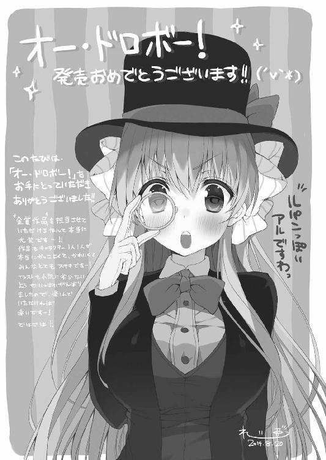
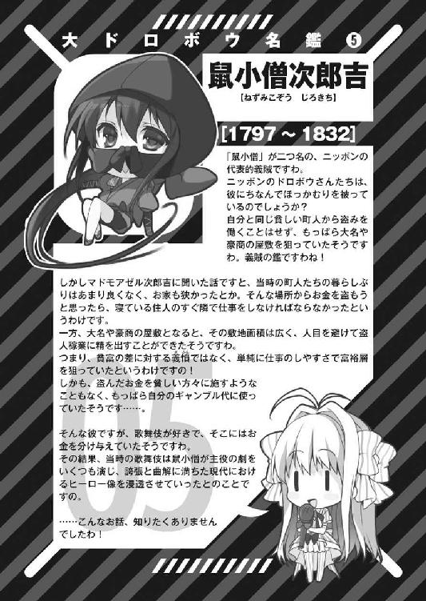
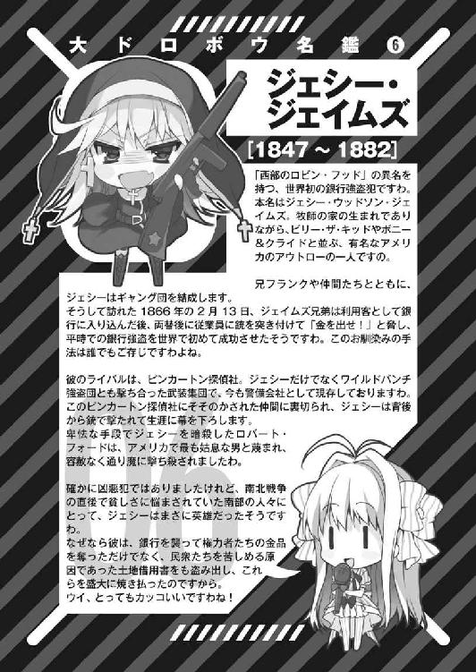
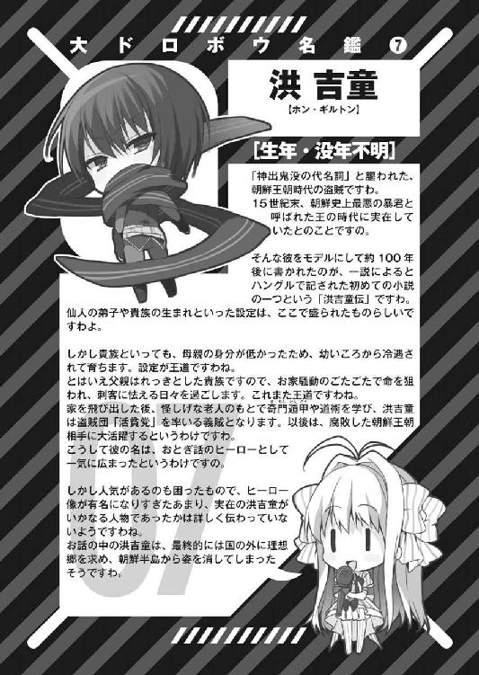
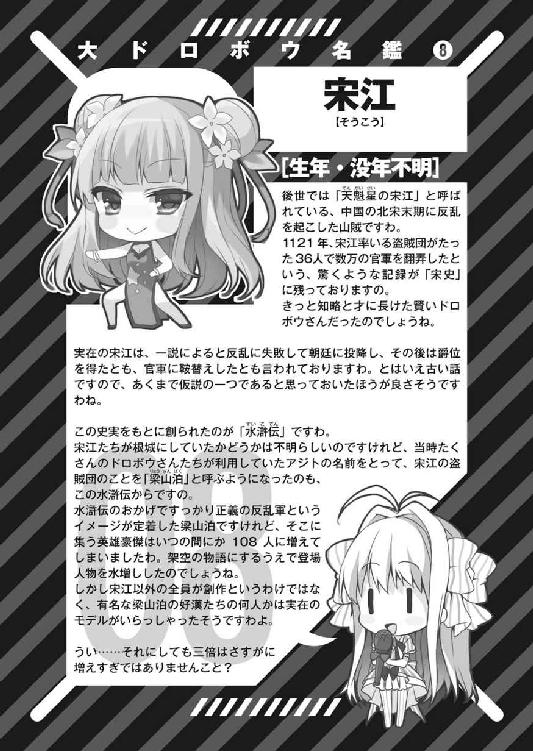
オー・ドロボー！
1．怪盗淑女は恋きに盗む？
岬かつみ
平成26年9月25日 発行
発行者 郡司 聡
発行所 株式会社ＫＡＤＯＫＡＷＡ
〒102-8177 東京都千代田区富士見2-13-3
03-3238-8745（営業）
http://www.kadokawa.co.jp/
企画・編集 富士見書房
03-3238-8585（編集）
http://fujimishobo.jp
(C)Katsumi Misaki, Reia 2014
本電子書籍は下記にもとづいて制作しました
富士見ファンタジア文庫『オー・ドロボー！ 1．怪盗淑女は恋きに盗む？』平成26年9月25日初版発行